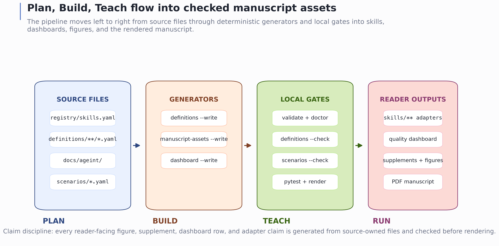
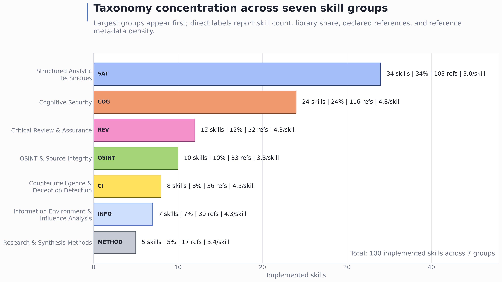
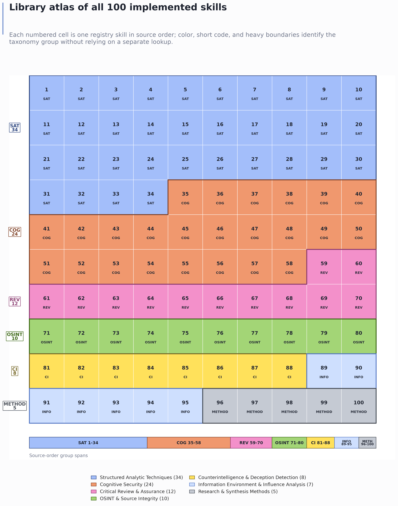
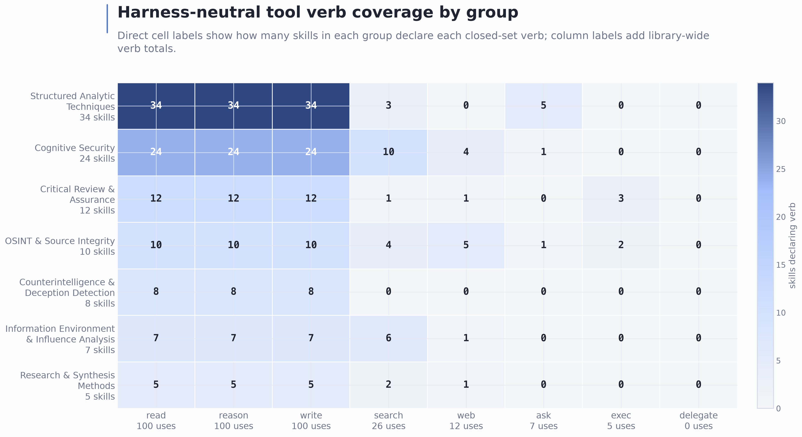
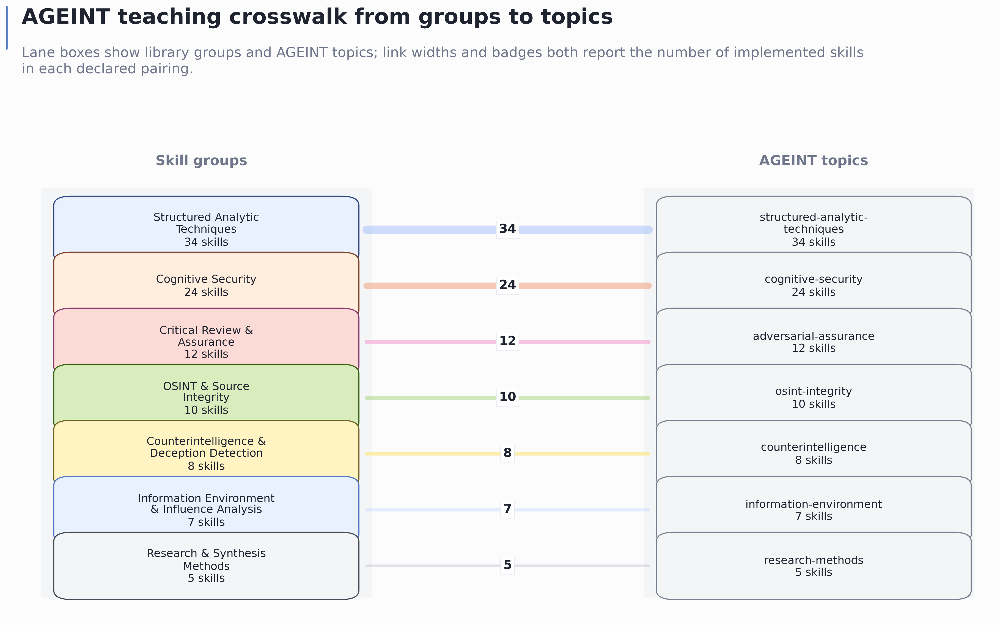
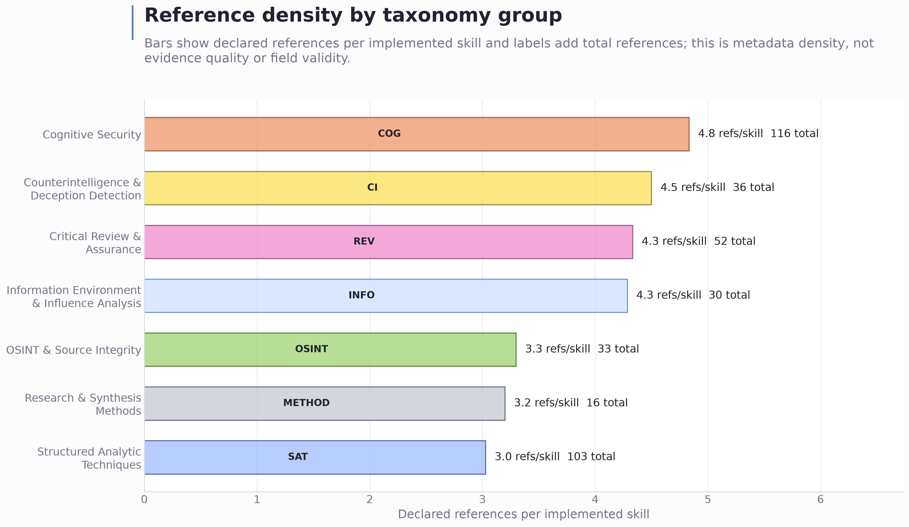

1 Abstract
CogSecSkills is a defensive, harness-neutral agent-interface library that turns the human doctrine of cognitive security and analytic tradecraft into dependable, inspectable, agent-usable skills, distributed as an open repository from github.com/docxology/CogSecSkills; the motivation is an information environment in which mis-, dis-, and malinformation are analytically distinct but operationally entangled, false content can diffuse rapidly at platform scale, and credible source evaluation increasingly demands explicit expert practice rather than page-bound reading alone, so that agents asked to weigh competing hypotheses, trace provenance, or critically review a claim need a repeatable procedure and a stable tool-use contract rather than improvisation. The live generated catalogue reports one hundred implemented skills across seven taxonomy groups — Structured Analytic Techniques, Cognitive Security, Critical Review and Assurance, OSINT and Source Integrity, Counterintelligence and Deception Detection, Information Environment and Influence Analysis, and Research and Synthesis Methods — and the library is organized as a Plan, Build, and Teach system in which a registry declares the catalogue, a definitions layer owns the substance and quality controls of each skill, a skills tree exposes the harness-facing build, and a vendored educational upstream named AGEINT explains why each technique exists and how to use it responsibly. The central design choice is to make the reusable skill contract smaller than any one agent interface yet stricter than a prompt collection: each skill is owned by a single canonical definition that declares triggers, inputs, outputs, per-skill reference metadata, group-aware quality controls, and a closed vocabulary of neutral tool verbs before any harness-specific adapter is considered, and that definition is rendered deterministically into a harness-neutral specification, a human-readable skill description, an executable workflow, and one adapter per configured harness whose default members are Claude, Codex, and Hermes, so that portability becomes a property the test suite proves rather than a hope, and installation is concrete rather than interpretive — clone the public repository, install or run the Python package, run validation, point the agent harness at a chosen skill, execute its workflow, and bind runtime tools through the named harness adapter, regenerating adapters from a configuration file for any non-default harness. The quality discipline is the core of the contribution: an automated audit checks that every skill’s defensive boundaries, misuse redirects, evidence requirements, confidence rubrics, privacy and legal constraints, uncertainty handling, failure modes, and negative controls are not merely present but specific to that skill and not reused across the corpus, while an evidence ladder adds curated safe-use and unsafe-redirect scenarios with expected defensive response-shape contracts, reviewed expected answers, and one source-owned worked example per skill, and a generated quality dashboard, supplemental catalogue, metadata matrix, data exports, and a family of deterministic figures — taxonomy counts, the hundred-skill atlas, tool-verb coverage, AGEINT topic crosswalks, the Plan-Build-Teach flow, reference density, harness coverage, and a cover-page installation route — are all produced directly from the live registry and skill specifications so that every visual stays synchronized with the source tree. The evidence boundary is deliberately and explicitly repository-local and reproducible within the checked-out project state, following reproducible-computing, open-data stewardship, and software-citation norms for explicit workflows, version specificity, and citable artifacts; every claim is backed by source files, canonical definitions, generated supplements and figures, the generated dashboard, and project-local verification commands together with a focused test suite and a manuscript renderer, and the work positions CogSecSkills as a validated interface between reasoning, tool use, and defensive output discipline rather than as a claim that any particular model runtime behaves correctly in the field, so its figures, supplements, scenarios, worked examples, and dashboard should be read as synchronized views of the current library state and never as independent measurements of operational performance.
2 Library Purpose, Scope, and Reader Map
2.1 Why Harness-Neutral Defensive Skills
Agentic analysis needs reusable tradecraft, but reuse breaks down when procedures are written only for one interface or one model runtime. A useful cognitive-security skill should say what evidence it needs, which neutral capabilities it may use, what it produces, and when it should be invoked. It should not depend on a single harness syntax, and it should not smuggle offensive persuasion or influence playbooks into a defensive analytic library.
CogSecSkills addresses that problem as a source-owned skills system.
The project separates the catalogue, the canonical definition layer, the
rendered implementation tree, the educational upstream, and the runner
code so each repository-local claim about the library has a concrete
surface to inspect. The same skill can be rendered into the default
Claude, Codex, and Hermes adapter language, or into an additional
configured harness, because durable skill substance lives in
definitions/<group>/<slug>.yaml and the
rendered skill.yaml specification is a checked
harness-neutral interface rather than a model-specific prompt.
The manuscript is framed as a harness-neutral agent-interface contribution situated across four literatures. Intelligence-analysis research explains why structured procedures matter under ambiguity and bias; information-disorder research explains why defensive work must distinguish agents, messages, interpreters, and distribution dynamics; research-software standards explain why metadata, versioning, and regeneration are epistemic controls rather than build conveniences; and LLM tool-use work explains why an interface between reasoning, actions, and external tools needs explicit boundaries (Heuer 1999; Wardle and Derakhshan 2017; Wilkinson et al. 2016; Smith et al. 2016; Yao et al. 2022; Schick et al. 2023).
That separation matters for defensive cognitive-security work because the reader needs to audit both intent and execution. A skill named for claim provenance, narrative inversion, or deception detection is not sufficient by itself; the library must also show the triggers that route to the skill, the inputs it expects, the output it promises, the tool verbs it may use, the harness adapters that bind those verbs, and the AGEINT teaching topic that explains why the skill exists (Friedman 2026). CogSecSkills makes those surfaces explicit and then regenerates the manuscript views from them.
The tradecraft vocabulary is anchored in structured analytic techniques and adjacent defensive source-evaluation methods, but the manuscript uses those sources as context rather than as evidence that this library improves decisions in practice. Analysis of Competing Hypotheses and the broader structured-analytic-techniques family are treated as canonical analytic-tradecraft references (Heuer 1999; Pherson and Heuer 2019). Named method families that appear in the library catalogue, including Nominal Group Technique, premortem analysis, prebunking or inoculation, lateral reading, and Admiralty/NATO reliability grading, are cited at the manuscript level to prevent generated skill metadata from standing in for scholarly attribution (Delbecq and Van de Ven 1971; Klein 2007; Roozenbeek et al. 2022; Wineburg and McGrew 2019; Ministry of Defence 2023). The wider problem setting also includes misinformation correction, platform-scale diffusion, social bots, computational propaganda, and synthetic-media provenance, which motivate the library’s defensive skill classes without validating their operational effectiveness (Lewandowsky et al. 2012; Vosoughi et al. 2018; Ferrara et al. 2016; Woolley and Howard 2017; Bradshaw and Howard 2019; Mirsky and Lee 2021).
The manuscript is therefore written for two audiences at once. A library maintainer should be able to trace every table, figure, and count back to source files and gates. A reader who only opens the PDF should still be able to see the shape of the system: which groups dominate, where the optional tool verbs appear, whether the adapters cover Codex and Hermes as well as Claude, and how the educational AGEINT layer connects to implemented skill folders.
2.2 Related Work and Positioning
CogSecSkills sits between four bodies of work and duplicates none of them. The intent of this subsection is positioning, not a claim that the library improves on any cited source in practice.
The first body is structured analytic tradecraft. Analysis of Competing Hypotheses, estimative-probability language, and the wider structured-techniques family describe how a disciplined analyst should reason under ambiguity and bias (Heuer 1999; Pherson and Heuer 2019; Kent 1964), and doctrine such as the UK reliability-grading scale standardizes how sources and claims are graded (Ministry of Defence 2023). That literature specifies method; it does not ship a harness-neutral, machine-checkable interface that an agent runtime can route to. CogSecSkills renders those methods into conformance-checked skill specifications and leaves the underlying tradecraft to its canonical sources.
The second body is information-disorder and defensive-intervention research, which explains why cognitive-security work must separate agents, messages, and distribution dynamics, and why correction, inoculation, and lateral reading are defensive levers (Wardle and Derakhshan 2017; Lewandowsky et al. 2012; Roozenbeek et al. 2022; Wineburg and McGrew 2019), against a threat surface of viral diffusion, social bots, computational propaganda, and synthetic media (Vosoughi et al. 2018; Ferrara et al. 2016; Woolley and Howard 2017; Bradshaw and Howard 2019; Mirsky and Lee 2021; Lazer et al. 2018). CogSecSkills operationalizes the defensive recognition and mitigation side of that research as skills, and explicitly refuses the offensive-influence inverse (see sec. 8).
The third body is LLM tool-use and agent systems, where reasoning is interleaved with external actions through a tool interface (Yao et al. 2022; Schick et al. 2023). That work motivates the need for an explicit boundary between reasoning, tool verbs, and output discipline, but it does not supply a defensive analytic skill catalogue. CogSecSkills contributes the catalogue and the closed tool-verb contract that binds it to multiple harnesses.
The fourth body is research-software and reproducibility practice, which treats metadata, versioning, and regenerability as epistemic controls (Sandve et al. 2013; Wilkinson et al. 2016; Smith et al. 2016; Coalition for Content Provenance and Authenticity 2026). CogSecSkills adopts that stance directly: every prose claim resolves to a source surface and a regeneration command, and the educational upstream is cited as such (Friedman 2026). The novel surface is the combination — a defensive cognitive-security skill set that is simultaneously harness-neutral, source-owned, and drift-gated.
2.3 Project-Native Contributions
This manuscript contributes four project-native artifacts:
- A description of the Plan/Build/Teach architecture that keeps
registry/,skills/, anddocs/ageint/coherent. - A harness-neutral skill contract based on a closed set of tool
verbs:
read,search,write,exec,reason,web,delegate, andask. - A repository-local authoring and verification workflow that validates the registry, adapters, quality linting, and tests before claims are promoted into prose.
- Generated manuscript supplements and figures that let a reader scan all 100 skills by group, functionality, use case, AGEINT topic, tool verbs, references, source path, reference density, and harness coverage.
2.4 How to Read the Main Text and Supplements
The main sections explain the library boundary, methods, artifacts,
and reproducibility contract. The supplemental sections are generated
from the live library and should be treated as synchronized source
inputs, not hand-authored narrative. S10_skill_catalogue.md
lists every skill with one-line functionality and use conditions;
S11_skill_metadata_matrix.md compresses the same library
into matrices for group counts, verb usage, AGEINT crosswalks, harness
coverage, and figure inventory.
The figures are intentionally redundant with the supplements. The supplements support lookup; the figures support orientation. A reader can use the taxonomy count chart to see group concentration, the grid to scan the full 100-skill surface, the heatmap to understand capability mix, the AGEINT crosswalk to follow teaching alignment, the Reference Density view to inspect declared source backing, and the Harness Contract view to confirm that the configured adapters are part of the same multiharness package.
3 Source Boundary and the Harness-Neutral Skill Contract
3.1 Repository-Local Evidence Boundary
CogSecSkills is a defensive skills library, not a live influence system, benchmark suite, or external claim engine. Its authoritative inputs are plain-text project files: the registry declares the catalogue, canonical definitions own skill substance and quality controls, rendered skill directories expose harness-facing interfaces, AGEINT documents provide the teaching context, and the Python package validates and reports on the library. The manuscript describes those local surfaces and the gates that keep them synchronized.
3.2 Plan/Build/Teach Source Surfaces
The project uses three mutually reinforcing surfaces:
| Surface | Role | Reader question |
|---|---|---|
registry/skills.yaml and
registry/groups.yaml |
Plan | What skills and groups are supposed to exist? |
definitions/<group>/<slug>.yaml |
Build source | What does the skill do, when should it be used, and what defensive quality controls must it carry? |
skills/<group>/<slug>/ |
Build output | What is actually rendered, and how does each skill bind to harnesses? |
docs/ageint/ |
Teach | Which AGEINT topic or educational frame motivates the skill? |
src/cogsecskills/ |
Verify and render | Which checks, reports, routes, and manuscript assets are generated from the source surfaces? |
tests/ |
Regression contract | Which behaviors are guarded against drift? |

3.3 Harness-Neutral Skill Specification
Each implemented skill declares a small, inspectable contract:
- identity fields:
id,name,group,status,version,summary, andageint_topic; - routing fields:
tagsandtriggers; - capability fields: a closed set of tool verbs with purposes;
- interface fields: structured inputs and outputs;
- adapter fields: one harness adapter path per configured harness.
The default harness adapters translate the neutral verbs into Claude,
Codex, and Hermes idioms while preserving the same workflow. The same
contract also applies to any additional harness configured in
cogsecskills.yaml. This keeps the library portable in the
structural sense: a skill can be evaluated for conformance without
executing any external service.
For Codex and Hermes use, this means the adapter text is not a
separate source of truth. It is a harness-facing binding layer that must
list the same neutral verbs declared by the skill specification. If a
skill declares read, reason, and
write, each configured harness adapter must show how those
verbs are realized in that harness. This is the smallest contract that
makes the skill portable while still leaving each runtime free to
express its own operational idiom.
This contract is deliberately narrower than a general agent framework. ReAct-style work shows why reasoning and action are often interleaved, and Toolformer-style work shows why model interfaces to external tools matter (Yao et al. 2022; Schick et al. 2023). CogSecSkills does not attempt to train or evaluate a model to choose tools. It fixes a defensive, inspectable vocabulary of tool verbs and requires every configured harness adapter to bind that vocabulary before the skill is treated as conforming. The contribution is the validated interface layer: source-owned skill substance, closed neutral capabilities, harness-specific bindings, and local drift checks.
3.4 Harness Profile Classes
The harness profile layer is descriptive, not executable. It records
named external runtimes and framework families that a reader might
target after cloning the repository, but the validation contract remains
controlled only by the configured harness set. In this manuscript,
default adapters means the committed
claude, codex, and hermes
adapters. Configured structural adapters means any
harness id placed in cogsecskills.yaml, regenerated into
every skill folder, and checked by validate.
Documented external profiles means optional metadata
rows in registry/harness_profiles.yaml; those rows do not
certify live runtime behavior, connector safety, vendor support, or
field outcomes. The profiles are not one standard: Gemini CLI context
files, Copilot instruction and agent surfaces, Cursor/Cline-style rule
systems, SDK frameworks, and MCP tool hosts each require
product-specific review before use.
| Profile id | Class | How to read it |
|---|---|---|
gemini_cli |
terminal agent | Candidate for a Gemini CLI-style local harness using product-specific context files after configuration and adapter review. |
github_copilot |
IDE or cloud agent | Candidate for Copilot repository, path-specific, agent, CLI, cloud-agent, or review surfaces whose support varies by product mode. |
devin_local |
local agent | Candidate for local-agent use with permissions, sandboxing, skills, and MCP controls. |
devin_cascade |
IDE agent | Candidate for Cascade/Devin Desktop AGENTS.md and rules surfaces. |
cursor |
IDE agent | Candidate for Cursor rules or skill-style context. |
cline |
IDE agent | Candidate for Cline- or Roo-style rule/skill surfaces and configured tool permissions. |
aider |
terminal agent | Candidate for read-only skill and convention files in a terminal pair-programming workflow. |
continue |
IDE or CLI agent | Candidate for Continue Agent, Chat, or Edit rule contexts. |
jetbrains_ai |
IDE agent | Candidate for JetBrains AI Assistant instruction files. |
openai_agents_sdk |
programmatic runtime | Application-owned wrapper target with tools, approvals, guardrails, and state. |
langgraph |
programmatic runtime | Graph-node and state-machine integration target. |
microsoft_agent_framework |
programmatic runtime | Agent or workflow integration target for .NET and Python applications. |
autogen |
programmatic runtime | AgentChat/Core integration target. |
crewai |
programmatic runtime | Crew, task, flow, and guardrail integration target. |
pydantic_ai |
programmatic runtime | Typed agent and capability integration target. |
mcp_host |
protocol host | Tool and context transport profile, not a standalone model harness. |
perplexity_research |
research companion | Research-support profile unless wrapped by a local tool-executing application. |
3.5 Formal Conformance Contract
Let the closed neutral verb vocabulary be
\[\begin{equation} \label{eq:tool-verb-set} V := \{\mathtt{read}, \mathtt{search}, \mathtt{write}, \mathtt{exec}, \mathtt{reason}, \mathtt{web}, \mathtt{delegate}, \mathtt{ask}\}. \end{equation}\]
Let the default harness set be
\[\begin{equation} \label{eq:default-harness-set} H_0 := \{\mathtt{claude}, \mathtt{codex}, \mathtt{hermes}\}. \end{equation}\]
Let the configured harness set be
\[\begin{equation} \label{eq:configured-harness-set} H_{\mathrm{cfg}} := \operatorname{harnesses}(\mathtt{cogsecskills.yaml})\quad\text{with default }H_0. \end{equation}\]
For each implemented skill s in set S, the
source specification can be read as
\[\begin{equation} \label{eq:skill-spec-tuple} s = (id_s, name_s, group_s, status_s, version_s, summary_s, topic_s, tags_s, triggers_s, V_s, I_s, O_s, refs_s, Q_s, wf_s, A_s) \end{equation}\]
subject to
\[\begin{equation} \label{eq:skill-conformance} V_s \subseteq V,\qquad \operatorname{dom}(A_s)=H_{\mathrm{cfg}},\qquad \forall h \in H_{\mathrm{cfg}}:\ V_s \subseteq B_{s,h}. \end{equation}\]
Here I_s and O_s are the declared input and
output schemas, refs_s is the per-skill metadata reference
set, Q_s is the required quality-control bundle,
wf_s is the workflow path, A_s maps each
configured harness to exactly one adapter path, and B_s,h
is the set of neutral verbs bound in harness h adapter
table. Conformance consists of schema validity, registry-to-folder
agreement, allowed-verb membership, required quality fields, workflow
presence, adapter-path completeness for every harness in
H_cfg, and adapter binding coverage for every declared verb
in V_s.
| Field family | Source field(s) | Constraint |
|---|---|---|
| Identity | id, name, group,
status, version |
id must match group.slug; implemented
skills must exist on disk. |
| Routing | tags, triggers,
ageint_topic |
Used for navigation and AGEINT crosswalks, not empirical routing claims. |
| Capability | tools[*].verb |
Every verb must be a member of V. |
| Interface | inputs, outputs |
Names and descriptions must be declared in
skill.yaml. |
| Provenance metadata | refs |
Declared skill references; not the same as manuscript citation keys. |
| Quality controls | defensive_boundary, misuse_redirect,
evidence_requirements, confidence_rubric,
uncertainty_handling,
privacy_legal_constraints, failure_modes,
negative_controls |
Required by canonical definitions and surfaced in rendered skill files. |
| Harness mapping | harness |
Every harness in H_cfg must resolve to an adapter file
whose first-column binding table covers V_s. |
3.6 Figure Guide and 100-Skill Taxonomy Snapshot
The manuscript figures are organized from overview to contract detail. The current registry groups the 100 implemented skills into seven taxonomy groups. Those groups are not claimed to be a complete or mutually exclusive theory of cognitive security; they are a defensive coverage map spanning information disorder, source integrity, deception and counterintelligence, structured analysis, research synthesis, and information-environment coordination (Wardle and Derakhshan 2017; Ministry of Defence 2023; Lazer et al. 2018; Ferrara et al. 2016; Bradshaw and Howard 2019). The taxonomy count chart answers “how much of the library is in each group?” The skill grid answers “can I see all 100 areas at once?” The verb heatmap answers “which groups use which neutral capabilities?” The AGEINT crosswalk answers “which teaching topics motivate which implementation groups?” The Reference Density figure answers “where is declared source backing deepest?” The Harness Contract figure answers “does every group maintain adapter coverage for the configured harness set?” The flow figure ties those views back to the source surfaces and gates. The count and grid figures below are generated from the same ordered registry rows used by the supplemental catalogue, so the visual order and group membership remain synchronized with the source tree.


4 Source-Owned Skill Authoring and Manuscript Generation
4.1 Registry-to-Definition-to-Skill Construction
The manuscript is generated and maintained from the same project
surfaces that the CLI validates. The registry is loaded first so the
catalogue order, group membership, status, and AGEINT topic remain the
plan of record. Canonical definitions under definitions/
own the skill substance; definitions --write renders those
definitions into on-disk skill.yaml, SKILL.md,
workflow.md, and harness adapters. The manuscript asset
generator then joins the registry and rendered typed skill
specifications by skill id and emits supplemental Markdown, compact JSON
and CSV exports, body figures, and a title-page cover image that
explains installation into an agent harness. This source-first approach
follows the reproducibility principle that outputs should retain enough
workflow, version, and source context to be regenerated and inspected
(Sandve et al.
2013; Wilkinson et al. 2016).
This source-first method prevents the manuscript from becoming a
parallel catalogue. If skill substance changes,
cogsecskills definitions --check proves the rendered skill
tree still matches canonical YAML. If a skill name, trigger, tool verb,
input, output, reference count, harness adapter, or source path changes,
cogsecskills manuscript-assets --check detects drift in the
generated manuscript inputs.
4.2 Registry-to-Adapter Authoring Pipeline
Skill implementation follows a conservative pipeline:
- A row in
registry/skills.yamldeclares the intended skill area and group. - A canonical definition under
definitions/<group>/<slug>.yamldeclares the tool plan, triggers, inputs, outputs, workflow steps, defensive boundary, evidence discipline, uncertainty rules, failure modes, and negative controls. definitions --writerenders a skill directory underskills/<group>/<slug>/withskill.yaml,SKILL.md,workflow.md, and one adapter per configured harness.skill.yamlcarries the generated neutral verbs, triggers, inputs, outputs, references, and AGEINT topic.- The validator checks that registry rows and implemented folders agree, that each adapter exists, and that tool verbs stay within the closed vocabulary.
- The doctor command applies quality linting for thin, generic, incomplete, or unsafe skill content, including missing safe defensive negative controls and weak evidence or uncertainty labeling.
- Tests exercise parsing, validation, definition drift, authoring, routing, reporting, configuration, and manuscript asset generation.
The optional harness profile registry sits beside the skill registry
but has a different function.
registry/harness_profiles.yaml records documented external
profiles such as gemini_cli, github_copilot,
devin_local, devin_cascade,
cursor, cline, aider,
continue, jetbrains_ai,
openai_agents_sdk, langgraph,
microsoft_agent_framework, autogen,
crewai, pydantic_ai, mcp_host,
and perplexity_research. These are documented external
profiles, not validation targets. A profile becomes one of the
configured structural adapters only when its id is added to
cogsecskills.yaml, the skill tree is regenerated, and the
adapter files pass validation. The default adapters remain
claude, codex, and hermes.
Profile classes are deliberately separated: instruction-file products,
IDE rule systems, terminal pair-programming tools, SDK frameworks, MCP
hosts, and research companions require different integration reviews
even when they share the same neutral skill files.
4.3 Generated Supplement and Figure Pipeline
src/cogsecskills/artifacts/manuscript_assets/__init__.py
is the producer for the generated manuscript layer. Its outputs are
intentionally committed as manuscript source inputs because they support
review and PDF rendering, but they remain generated. The command
writes:
docs/manuscript/S10_skill_catalogue.md, a grouped catalogue of all skills with functionality, “Use when” text, verbs, inputs, outputs, AGEINT topic, reference count, and source path;docs/manuscript/S11_skill_metadata_matrix.md, a compact matrix view of group counts, verb usage, AGEINT crosswalks, harness coverage, and figure inventory;output/data/skill_catalogue.jsonandoutput/data/skill_catalogue.csv, machine-readable exports of the same rows;- deterministic PNG figures under
../figures/, including manuscript body figures and the configured title-page installation cover.
The generator treats static PNGs as the right output form because the
manuscript is rendered to PDF and static web artifacts. Plot code uses
explicit color maps for the seven real registry groups, direct labels
where they reduce lookup, and subtitles that state the data scope. The
chart data are not manually curated: counts, reference totals, harness
coverage, AGEINT topics, verb matrices, and the install-cover skill
counts are derived from the same SkillRow records used by
the generated catalogue.
4.4 Figure Question and Claim Contract
Each figure has a narrow analytical question. Taxonomy counts compare group size; the skill grid maps all 100 registry entries to one compact atlas; the verb heatmap counts closed-set tool verbs by group; the AGEINT crosswalk connects groups to teaching topics; the Plan/Build/Teach flow shows the source-to-render path; Reference Density compares declared source-reference backing; Harness Contract checks adapter coverage across the configured harness set, whose default is Claude, Codex, and Hermes; and the cover installation visual answers how a reader clones the public repository, validates it, and binds skills into an agent harness. These figures are descriptive views of the library metadata and installation contract. They do not measure field performance, adversary coverage, or user outcomes.
Reference Density is defined here as declared references per
implemented skill within a taxonomy group. For group g in
set G,
\[\begin{equation} \label{eq:reference-density} d_g := \frac{R_g}{N_g}, \end{equation}\]
where R_g is the total count of declared per-skill
refs entries for implemented skills in g, and
N_g is the number of implemented skills in g.
The metric is metadata density, not evidence quality, empirical
validity, or a proxy for operational effectiveness.
4.5 Local Verification Gates
The local gate sequence is designed to catch different failure
classes: definitions --check catches canonical-definition
and rendered-skill drift, validate catches structural
contract drift, report summarizes implementation status,
doctor catches weak, generic, or incomplete skill content,
pytest catches regression bugs,
manuscript-assets --check catches generated-manuscript
drift, and the sibling template renderer catches Markdown and PDF
integration failures.
The stricter quality checks are deliberately local and textual. They require each canonical definition to include a defensive boundary, misuse redirect, evidence discipline, confidence rubric, uncertainty handling, privacy/legal constraints, failure modes, and negative controls. For sensitive skills, a generic safety sentence is insufficient: the negative controls must include an unsafe request redirected away from abuse, a safe defensive request pattern, wording specific to the skill, and no reused individual negative-control entry across the corpus. The same specificity pressure now applies to confidence rubrics, evidence requirements, and privacy/legal constraints: exact reused entries and group-only boilerplate fail the definition and doctor gates. Evidence requirements must distinguish evidence from inference, and uncertainty handling must preserve unknowns and credible alternatives. These checks raise the floor for the 100 rendered skills without claiming that the text has been field-validated.
The figure tests intentionally cover the inventory and palette contract as well as file existence. A missing generated PNG is easy to detect, but a stale palette can be more subtle: if the registry adds or renames a group, the visual system must be updated deliberately rather than silently falling back to an unrelated color.
5 Evidence Surfaces, Generated Views, and Claim Discipline
5.1 Claim-Support Surfaces
| Surface | Role |
|---|---|
registry/skills.yaml |
Enumerates the 100 skill areas and their implementation status. |
registry/groups.yaml |
Defines the seven taxonomy groups used by the catalogue and figures. |
definitions/**.yaml |
Owns canonical skill substance, workflow steps, quality controls, and negative controls. |
skills/**/skill.yaml |
Declares the harness-neutral contract for each implemented skill. |
skills/**/SKILL.md and workflow.md |
Provide the human-facing skill description and neutral procedure. |
skills/**/harness/*.md |
Bind the neutral verbs to every configured harness; the default set is Claude, Codex, and Hermes. |
scenarios/defensive_readiness.yaml |
Curated safe-use, unsafe-redirect, expected-response, and expected-answer fixtures used by the deterministic scenario-readiness gate. |
examples/skill-worked-examples.yaml |
Source-owned deterministic worked examples, one per implemented skill. |
docs/skill-worked-examples.md and
output/data/skill_worked_examples.json |
Generated worked-example views for all 100 skills. |
docs/quality-dashboard.md and
output/data/quality_dashboard.json |
Generated dashboard and machine-readable snapshot over all 100 skills, quality capsules, scenario coverage, worked-example coverage, harnesses, references, claim-boundary status, and verified-state rows. |
docs/ageint/ |
Supplies the educational upstream used for AGEINT topic alignment. |
src/cogsecskills/ |
Owns parsing, validation, reporting, routing, quality linting, scenario checking, and manuscript asset generation. |
tests/ |
Guards parser, authoring, validation, reporting, routing, configuration, scenario checking, and manuscript generator behavior. |
5.2 Generated Figure Evidence
The figure set is generated from the live registry and skill metadata. The taxonomy count and skill grid figures show library coverage at a glance. The verb heatmap shows how neutral tool capabilities are distributed by group. The AGEINT network shows how group membership connects to teaching topics. The Reference Density figure shows where declared source-reference backing is concentrated, and the Harness Contract figure shows whether the configured harness adapters cover every group. The flow figure in fig. 1 shows how the source surfaces, gates, and manuscript assets fit together. The title-page cover image is also generated: it shows the public GitHub install path, validation command, route command, and harness-binding files a reader needs to connect CogSecSkills to an agent harness.
The figures should be read as descriptive system views. They are strong evidence for what is implemented, declared, generated, installable, and checked in the local project. They are not evidence that any specific defensive workflow will succeed in an operational setting. That distinction is important because visual polish can otherwise make metadata counts or installation diagrams feel like empirical validation.



skill.yaml; it does not grade evidence quality, citation
authority, or operational validity.![Figure 7: cogsecskills_harness_contract.png: Adapter coverage scorecard for the configured harness set, defaulting to Claude, Codex, and Hermes. Use this figure before installing the library into an agent harness to see, at a glance, that every group declares the configured-harness adapters. The cells count skills that declare an adapter for each configured harness, by group and as whole-library totals; the stronger invariants — that each declared adapter file exists on disk and that its binding table covers every verb the skill uses — are enforced separately by validate and the conformance suite, not by this figure. The figure does not claim behavioral success for any external runtime.](../figures/cogsecskills_harness_contract.png)
validate and the conformance suite, not by this figure.
The figure does not claim behavioral success for any external
runtime.The Reference Density view complements the catalogue because it makes source backing visible by group rather than by individual row. The Harness Contract view complements the validator because it presents configured-harness adapter coverage in the reader’s visual path, including Codex and Hermes in the default set rather than treating them as secondary implementation details.
Per-skill refs counts are metadata fields declared in
skill.yaml; they are not equivalent to resolved citation
markers in the manuscript bibliography. The manuscript-level
bibliography supports external concepts, standards, and methods that
appear in the prose, while per-skill refs support local
navigation and source-backlog discipline inside the library.
5.3 Generated Catalogue and Matrix Supplements
The two generated supplemental sections make the library navigable
without requiring the reader to open 100 folders. sec. 11 lists every skill with
one-line functionality and use conditions. sec. 12 summarizes the
same data as matrices and points back to the figure files. Both sections
carry a generated-file header and should be refreshed with
python -m cogsecskills manuscript-assets --write.
The catalogue includes both broad analytic methods and concrete
defensive checks: for example,
osint_integrity.claim_provenance_verification appears as
Claim Provenance Verification, with its use conditions, neutral verbs,
AGEINT topic, reference count, and source path generated from the live
skill metadata.
5.4 Per-Skill Quality Audit and Anti-Boilerplate Checks
The skill-quality surface is now source-owned rather than a
prose-only governance promise. Every canonical definition must carry the
same required quality bundle: defensive boundary, misuse redirect,
evidence requirements, confidence rubric, uncertainty handling,
privacy/legal constraints, failure modes, and negative controls. The
renderer places those fields into the skill files, while
definitions --check, doctor, and the pytest
contract suite check that the rendered tree and manuscript views remain
synchronized with the definitions.
The audit is intentionally stricter than checking whether a safety heading exists. It rejects negative controls that only repeat generic boilerplate, requires both an unsafe redirect and a safe defensive request pattern, requires each definition to include skill-specific unsafe and safe examples, and rejects reused individual negative-control entries across the corpus. It also rejects repeated confidence-rubric, evidence-requirement, and privacy/legal entries, requires evidence requirements to label evidence and inference, and requires uncertainty handling to preserve unknowns and credible alternatives. A cognitive-security manipulation skill, an OSINT geolocation skill, a counterintelligence elicitation skill, and a structured analytic technique should therefore carry different governance language even though they share the same defensive contract shape.
This is a local quality gate, not a safety proof. It can show that all 100 skills include group-aware defensive boundaries, skill-specific and non-reused confidence, evidence, privacy/legal, and negative-control entries, evidence labeling, and uncertainty discipline in the current repository state. It cannot prove that every future user, external model, or organizational deployment will interpret the skill correctly.
5.5 Evidence Ladder and Scenario Readiness Gate
The evidence ladder adds two levels above static corpus inspection.
scenarios/defensive_readiness.yaml contains 28 curated
fixtures: two safe defensive requests and two unsafe refusal/redirect
probes for each of the seven groups.
python -m cogsecskills scenarios --check loads those
fixtures, runs the local router, confirms the expected implemented skill
appears in the top route matches, checks declared output terms, verifies
the fixture’s expected defensive response shape, verifies reviewed
expected-answer sections and all-2 rubric scores, verifies quality terms
such as defensive boundary, evidence/inference labeling, unknowns,
alternatives, safe defensive examples, and unsafe refusal/redirect
markers, and rejects fixture or expected-answer wording that embeds
operational misuse detail.
examples/skill-worked-examples.yaml adds one reviewed
local worked example per skill.
python -m cogsecskills examples --check verifies exact
100-skill coverage, defensive evidence/inference/gap labeling,
confidence and uncertainty language, declared-output references, local
fixture provenance, absence of operational misuse wording, and generated
Markdown/JSON freshness. These examples are expected-answer shapes, not
live model transcripts.
These gates are deliberately deterministic. They do not ask Claude, Codex, Hermes, Gemini, a browser, an OSINT connector, or any live platform to perform the task. Their claim is narrower and more useful for a repository manuscript: curated defensive scenarios and worked examples can still be mapped to concrete skill contracts, and the referenced skills expose the local metadata an agent harness needs to stay bounded. The gates do not show that a live runtime will select the same skill, use tools correctly, or produce a high-quality answer in the field.
5.6 Live Quality and Coverage Dashboard
python -m cogsecskills dashboard --write generates
docs/quality-dashboard.md,
docs/quality-dashboard.html, and
output/data/quality_dashboard.json. The dashboard gives
readers a compact row for every implemented skill: group, verbs,
configured harnesses, reference count, quality-capsule presence,
scenario coverage, worked-example coverage, local claim-boundary status,
and source path. The static HTML view is a dependency-free reader
surface for scanning the same payload with responsive tables and print
styling. It also surfaces the 28 scenario fixtures, their
expected-answer section titles, the 100 worked examples, and the latest
verified-state lines from TODO.md.
The dashboard is useful for review because it turns the corpus into a
scanable drift surface. Missing scenario coverage, missing worked
examples, missing quality capsules, stale generated files, or missing
verified-state rows make dashboard --check fail. It is not
a benchmark, user study, or live harness transcript; it is a generated
view of repository-local evidence.
5.7 Comparative Scholarship Map
External scholarship is used here to position the system, not to validate its effectiveness. The table below maps each literature spine to the local manuscript claim it supports and the claim it does not support.
| Literature spine | Supports in this manuscript | Does not support |
|---|---|---|
| Intelligence analysis, structured techniques, and estimative language (Heuer 1999; Pherson and Heuer 2019; Kent 1964; Ministry of Defence 2023) | The need for explicit analytic procedure, confidence discipline, and decision-support boundaries. | That CogSecSkills improves analyst judgment in practice. |
| Information disorder, false-news diffusion, correction, and inoculation (Wardle and Derakhshan 2017; Vosoughi et al. 2018; Lewandowsky et al. 2012; Roozenbeek et al. 2022; Lazer et al. 2018) | The relevance of defensive skills for mis-, dis-, and malinformation, corrective reasoning, and resilience-oriented analysis. | That the library reduces misinformation spread or changes user beliefs. |
| Source evaluation, social bots, computational propaganda, and coordinated manipulation (Wineburg and McGrew 2019; Ferrara et al. 2016; Woolley and Howard 2017; Bradshaw and Howard 2019) | The need to analyze sources, lateral corroboration, account ecology, automation, and coordination rather than content alone. | That the skills detect live campaigns, bots, or coordinated activity with validated accuracy. |
| Synthetic media and provenance standards (Mirsky and Lee 2021; Coalition for Content Provenance and Authenticity 2026) | The need for authenticity-aware media review and explicit content-provenance metadata in source-integrity work. | That C2PA metadata or this library proves authenticity, detects deepfakes, or replaces forensic analysis. |
| LLM reasoning/action and tool-use systems (Yao et al. 2022; Schick et al. 2023) | The positioning of CogSecSkills as a validated interface between reasoning, tool verbs, and harness-specific adapters. | That any configured model runtime will choose or execute tools correctly in the field. |
| Reproducible research software, FAIR stewardship, and software citation (Sandve et al. 2013; Wilkinson et al. 2016; Smith et al. 2016) | The source-owned definition layer, generated supplements, release manifest, and citable software boundary. | That local reproducibility proves empirical security efficacy. |
5.8 Claim Support Rules
A claim is manuscript-ready only when it has one of the following support types:
- A passing test or validator command.
- A generated output with a deterministic producer.
- A source ledger, manifest, or configuration file.
- A resolved entry in
references.bibfor external literature.
This pass intentionally keeps external scholarly claims bounded. The manuscript therefore emphasizes local structure, implementation status, reproducibility, and visualization rather than empirical effectiveness or deployment outcomes. When external context is needed, citations are used for problem framing, agent-interface positioning, reproducibility and software-citation norms, AGEINT, structured analytic techniques, named defensive methods, information-environment scholarship, provenance standards, and official doctrine rather than for unsupported performance claims (Sandve et al. 2013; Smith et al. 2016; Friedman 2026; Wardle and Derakhshan 2017; Yao et al. 2022).
6 Reproducibility, Local Verification, and Render Gates
6.1 Project-Local Asset and Validation Commands
Run project-local gates from a checked-out CogSecSkills project root:
export PROJECT_ROOT="${PROJECT_ROOT:-/path/to/CogSecSkills}"
cd "${PROJECT_ROOT}"
uv sync --locked --extra dev --extra figures
uv run python -m cogsecskills definitions --write
uv run python -m cogsecskills definitions --check
uv run python -m cogsecskills scenarios --check
uv run python -m cogsecskills examples --write
uv run python -m cogsecskills examples --check
uv run python -m cogsecskills evals --write
uv run python -m cogsecskills evals --check
uv run python -m cogsecskills dashboard --write
uv run python -m cogsecskills dashboard --check
uv run python -m cogsecskills release-metadata --write
uv run python -m cogsecskills release-metadata --check
uv run python -m cogsecskills catalogue --markdown --output docs/catalogue.md
uv run python -m cogsecskills catalogue --check
uv run python -m cogsecskills manuscript-assets --write
uv run python -m cogsecskills manuscript-assets --check
uv run python -m cogsecskills validate
uv run python -m cogsecskills report
uv run python -m cogsecskills doctor
uv run pytest --cov=cogsecskills --cov-report=term-missing --cov-fail-under=99definitions --write must run before rendering whenever
skill substance or configured harnesses change.
definitions --check should then pass before manuscript
assets are regenerated. scenarios --check should pass
before treating curated safe-use, unsafe-redirect, expected
response-shape, and expected-answer fixtures as current.
examples --write and examples --check keep the
generated 100-skill worked-example views synchronized with their source
YAML. dashboard --write should run after TODO, scenario,
example, registry, or skill metadata changes, and
dashboard --check should then pass before the Markdown,
HTML, and JSON dashboard views are treated as current.
release-metadata --write keeps committed release metadata
deterministic by omitting exact git revision, branch, and dirty-state
values from drift-checked files; those values are runtime observations
used by stricter release modes. manuscript-assets --write
must run before rendering whenever registry or rendered skill metadata
changes. manuscript-assets --check should then pass with no
findings; otherwise the committed manuscript sources and figures no
longer match the live library.
6.2 Template Markdown/PDF Render Commands
Render and validate the manuscript with an installed sibling template
checkout. The public combined-render APIs accept this checkout directly;
no template project mirror or legacy
scripts/03_render_pdf.py is required. Set the paths below,
and use the template environment that already has its rendering
dependencies installed (--no-sync preserves that
environment).
export PROJECT_ROOT="${PROJECT_ROOT:-/path/to/CogSecSkills}"
export TEMPLATE_ROOT="${TEMPLATE_ROOT:-/path/to/template}"
cd "${TEMPLATE_ROOT}"
uv run --no-sync python -m infrastructure.validation.cli markdown "${PROJECT_ROOT}/docs/manuscript" --repo-root "${PROJECT_ROOT}"
uv run --no-sync python - <<'PYRENDER'
from dataclasses import replace
from pathlib import Path
import os
import yaml
from infrastructure.rendering import RenderManager, RenderingConfig
from infrastructure.rendering.manuscript_discovery import discover_manuscript_files
project = Path(os.environ["PROJECT_ROOT"]).resolve()
manuscript = project / "docs" / "manuscript"
source_config = yaml.safe_load((manuscript / "config.yaml").read_text())
config = replace(
RenderingConfig.from_project_config(source_config, env={}),
manuscript_dir=str(manuscript), figures_dir=str(project / "output/figures"),
output_dir=str(project / "output"), pdf_dir=str(project / "output/pdf"),
web_dir=str(project / "output/web"),
)
manager = RenderManager(config)
sources = [p for p in discover_manuscript_files(manuscript) if p.suffix == ".md"]
print(manager.render_combined_pdf(sources, manuscript, "CogSecSkills"))
print(manager.render_combined_web(sources, manuscript, "CogSecSkills"))
PYRENDER
pdftotext "${PROJECT_ROOT}/output/pdf/CogSecSkills_combined.pdf" - | rg "References|Supplemental 100-Skill Catalogue|Use when|Claim Provenance Verification|Taxonomy|Reference Density|Harness Contract|Evidence Ladder|Skill Worked Examples|Scenario Readiness|expected answers|Quality Dashboard|Release Manifest"
rg -n "Citation .*undefined|undefined references|LaTeX Warning: Reference.*undefined|Missing character|Package .* Error|File .* not found" "${PROJECT_ROOT}/output/pdf/_combined_manuscript.log"Rendering updates the combined PDF under output/pdf/ and
HTML under output/web/; the root
CogSecSkills.pdf is a separately published copy and must be
refreshed only after verifying the new combined PDF. Preserve the
previous PDF or render a staged snapshot before replacing a release
artifact.
The final rg command is expected to produce no matches.
A nonzero exit status from that command is acceptable when it means the
searched error strings were absent. Avoid broad not found
log searches because some LaTeX packages emit benign informational lines
such as pdfdraftmode not found.
6.3 Traceability and Render Contract
- Do not cite results that cannot be regenerated or directly traced.
- Keep generated outputs under
output/and manuscript source underdocs/manuscript/. - Keep private data, credentials, and unpublished sensitive details out of the manuscript.
- Treat
scenarios/defensive_readiness.yamlas a curated local fixture set for route, quality-contract, and expected-answer readiness, not as empirical validation. - Treat
examples/skill-worked-examples.yaml,docs/skill-worked-examples.md, andoutput/data/skill_worked_examples.jsonas deterministic local worked-example fixtures, not live model transcripts. - Treat
docs/quality-dashboard.mdandoutput/data/quality_dashboard.jsonas generated navigation and drift surfaces, not as field-effectiveness evidence. - Treat
docs/manuscript/S10_skill_catalogue.md,docs/manuscript/S11_skill_metadata_matrix.md,output/data/skill_catalogue.*, and the eight../figures/*.pngmanuscript figures as generated from source-owned inputs. - Record exact verification command results before making release or publication claims.
- Keep repository URL, version, license, source revision, environment versions, lockfile presence, figure inventory, and gate results current in sec. 10 before representing the manuscript as a release snapshot (Smith et al. 2016).
The narrow PDF margin is part of the render contract because the generated catalogue and metadata matrix are table-heavy. Any future margin change should be checked in the rendered PDF, not only in Markdown, so long labels, figure captions, and long-table cells remain readable.
7 Evidence Boundaries, Defensive Governance, and Next Steps
7.1 Local Conformance Is Not Field Validation
The current evidence is local conformance evidence. It supports claims about the registry, implemented skill count, harness adapter presence, generated figures, generated supplements, curated defensive scenario fixtures, and project-local verification gates. It does not establish real-world operational effectiveness, adversary coverage, user outcomes, or comparative superiority over other skill libraries.
The library is defensive by contract and review rather than by a complete formal safety proof. Skill text, harness adapters, scenarios, and AGEINT material still require human review when the library is adapted to a new organization, workflow, or model runtime. The current gates can detect missing files, invalid verbs, stale generated assets, thin content, generic negative controls, repeated individual negative-control entries, repeated confidence/evidence/privacy boilerplate, missing safe defensive request patterns, weak evidence or uncertainty labeling, and curated safe-use or unsafe-redirect scenario drift, but they cannot prove that every future use remains within a defensive analytic frame.
The manuscript now includes a verified bibliography for reproducibility norms, software citation, AGEINT, structured analytic techniques, information disorder, misinformation diffusion and correction, computational propaganda, social bots, deepfakes, provenance standards, LLM tool-use systems, selected named methods, and official reliability-grading doctrine. It still avoids new empirical claims: citation support for a named method or problem domain is not evidence that this library implements that method effectively in operational settings.
The visualizations have the same boundary. They make the library easier to inspect, but they do not transform metadata into empirical evidence. A complete heatmap cell means a verb is declared in source; a complete Harness Contract cell means the adapter file is present and bound; a higher Reference Density value means more declared references in the skill metadata. None of those observations prove that a future user will choose the right skill, interpret evidence correctly, obtain a better security outcome, detect a live bot campaign, or authenticate synthetic media.
7.2 Defensive Governance Review Rules
The defensive boundary is enforced by source review and manuscript claim discipline rather than by a complete formal safety proof. The following table is the minimum review rule-set for dual-use skill text and adapter wording.
| Risk surface | Disallowed output | Allowed defensive transformation | Review failure condition |
|---|---|---|---|
| Persuasion or influence | Instructions to manipulate, target, coerce, or exploit an audience. | Analysis that identifies persuasion tactics, vulnerabilities, or safeguards. | Skill text tells an operator how to increase manipulative impact. |
| Deception and impersonation | Fabricated personas, deceptive outreach scripts, or concealment advice. | Detection, provenance tracing, and defensive response planning. | Adapter wording enables deception rather than analyzing it. |
| OSINT and source work | Doxing, evasion, account compromise, or harassment workflows. | Public-source verification, citation repair, and source-quality assessment. | Workflow asks for private data collection or bypass behavior. |
| Counter-messaging | Engagement playbooks that optimize emotional pressure or behavior change. | Prebunking, inoculation, and audience-protection framing bounded to education. | Output becomes an influence campaign plan rather than a defensive brief. |
| Automation | Autonomous execution against people, platforms, or live targets. | Human-reviewed checklists, audit notes, and bounded evidence summaries. | Skill removes human review from high-impact or dual-use steps. |
Any skill or adapter that crosses those lines should fail review even if it passes structural validation. The current validator can prove file and schema conformance; it cannot prove future defensive intent (Friedman 2026).
7.3 Evidence and Quality Next Steps
- Expand scenario-based evaluation tasks from deterministic route/contract readiness into richer analyst-output review fixtures without converting defensive tradecraft into offensive playbooks.
- Add richer manuscript variables if future prose needs run-derived values beyond the generated catalogue and matrices.
- Extend the doctor checks when repeated review findings expose new quality failure modes.
- Add verified citations only when external context is necessary and the source boundary is clear.
- Keep the generated supplements and figures in the render gate so readers see the same library state that validation checked.
- Add figure-level regression checks when future charts begin encoding more complex relationships than counts, coverage, and crosswalks.
Future evaluation should be split into three lanes. The first lane is repository integrity: definition drift, adapter coverage, citation resolution, render reproducibility, and release-manifest accuracy. The second lane is analyst usability and output quality: whether users can choose the right skill, follow the workflow, express uncertainty clearly, and produce auditable defensive outputs. The third lane is adversarial realism: scenario tasks involving misinformation correction, coordinated amplification, computational propaganda, and synthetic-media provenance, designed so they test defensive recognition and mitigation without generating offensive playbooks (Lewandowsky et al. 2012; Ferrara et al. 2016; Bradshaw and Howard 2019; Mirsky and Lee 2021; Coalition for Content Provenance and Authenticity 2026).
7.4 Publication Claim Boundary
The manuscript should remain a skills-system report until additional evidence exists. Local readiness means the source files, generated assets, and render gates agree; it should not be represented as field validation, public release readiness, or empirical proof of cognitive-security efficacy.
8 Ethics, Dual-Use, and Responsible Use
Cognitive-security tradecraft is dual-use. The same techniques that let a defender recognize a coordinated influence operation, grade a source, or triage synthetic media can, if inverted, describe how to run such an operation. This section states the project’s ethical posture explicitly so that reviewers and adopters do not have to infer it.
8.1 Dual-Use Stance and Defensive Framing
CogSecSkills is scoped to the defensive recognition, assessment,
documentation, and mitigation side of every technique it
implements. The library contains no offensive playbooks: it does not
author manipulation campaigns, fabricate personas, optimize emotional
pressure, plan harassment or doxing, or remove human review from
high-impact action. Each skill carries an explicit defensive boundary, a
misuse-redirect clause that refuses the offensive inverse and points
back to the defensive form, and negative-control examples that pair an
unsafe request with the safe defensive pattern it should be redirected
to. These are not manuscript assertions; they are fields enforced per
skill by the quality linter (doctor) and visible in the
generated worked examples and quality dashboard.
8.2 Defensive by Contract and Review
The defensive boundary is held by two mechanisms working together. The first is structural: the validator proves file and schema conformance, verb legality, adapter coverage, and the presence of the defensive quality bundle on every skill. The second is human review: the governance rule-set in sec. 7 defines, per risk surface, the disallowed output, the allowed defensive transformation, and the review-failure condition, and any skill or adapter that crosses those lines should fail review even when it passes structural validation. The structural gate can prove that the defensive bundle exists; it cannot prove future defensive intent (Friedman 2026). Responsibility for that judgment stays with the maintainers and with anyone who adapts the library to a new organization or runtime.
8.3 Human-Subjects and Institutional Scope
This work is open-source software with no human-subjects component. The scenario fixtures are curated, deterministic route-and-contract checks, and the worked examples are expected-answer shapes; neither is a live model evaluation, a study of human participants, or a record of operational use. No institutional review was required, and no personal data was collected or processed in producing the library, the manuscript, or its generated supplements.
8.4 Responsibilities of Adopters and Operators
The library is provided under the Apache License 2.0, on an as-is basis, for defensive analytic work. Adopters remain responsible for using it within applicable law and platform terms, for keeping human review on dual-use and high-impact steps, for not repurposing defensive recognition skills into influence, surveillance, or harassment workflows, and for re-running the conformance and quality gates whenever skills are modified or extended. Distribution of the skills to a new harness does not transfer the defensive judgment those gates cannot encode; that judgment travels with the operator.
8.5 What This Section Does Not Claim
Stating a defensive posture is not the same as proving safety. The gates and the review rule-set reduce the risk that the library ships offensive content or silently drifts; they do not guarantee that every downstream use remains defensive, nor do they make any claim about field effectiveness, which is out of scope for the current local evidence base (see sec. 7).
9 Supplemental Claim-Provenance Source Map
This supplement records the source surfaces that own manuscript claims. Use it as the quick provenance map before editing prose, generated supplements, figures, or verification statements.
| Surface | Role |
|---|---|
registry/skills.yaml |
Catalogue plan: skill ids, names, groups, status, summaries, and AGEINT topics. |
registry/groups.yaml |
Taxonomy plan: group ids and display titles. |
skills/**/skill.yaml |
Skill build contract: triggers, verbs, inputs, outputs, references, and harness paths. |
skills/**/SKILL.md |
Harness-facing one-skill description and “when to use” guidance. |
skills/**/workflow.md |
Harness-neutral step procedure and anti-criteria. |
skills/**/harness/*.md |
Adapter bindings for every configured harness; the default set is Claude, Codex, and Hermes. |
scenarios/defensive_readiness.yaml |
Curated safe-use, unsafe-redirect, expected response-shape, and expected-answer fixtures for deterministic scenario readiness. |
examples/skill-worked-examples.yaml |
Source-owned deterministic worked examples, one per skill. |
examples/ |
Local non-secret harness smoke transcripts, group examples, and source worked examples; these are fixtures, not live runtime evidence. |
docs/skill-worked-examples.md |
Generated Markdown worked-example catalogue for all 100 skills. |
output/data/skill_worked_examples.json |
Generated machine-readable worked-example snapshot. |
docs/quality-dashboard.md /
docs/quality-dashboard.html |
Generated Markdown and static HTML dashboard over all 100 skills, quality capsules, scenario coverage, worked-example coverage, harnesses, references, claim-boundary status, and verified-state rows. |
output/data/quality_dashboard.json |
Generated machine-readable dashboard snapshot used for drift review. |
docs/claim-boundaries.md |
Reader-facing statement of what local gates prove and do not prove. |
docs/connector-boundaries.md |
Optional OSINT/web connector boundaries before any live connector is wired. |
docs/analyst-output-review.md |
Lightweight rubric for future analyst-output review fixtures. |
docs/future-validation-protocols.md |
Future-only protocols for baseline comparison, analyst usability, connector readiness, and DOI/publication readiness. |
docs/release-checklist.md |
Release-candidate command and human-review checklist. |
docs/ageint/ |
Educational upstream and AGEINT topic context. |
src/cogsecskills/ |
Parser, validator, authoring, insights, scenario checker, CLI, and manuscript asset generator. |
tests/ |
Regression evidence for contract, CLI, configuration, insights, scenarios, and generated assets. |
CITATION.cff |
Software citation metadata for the repository-level artifact. |
codemeta.json |
Machine-readable software metadata. |
pyproject.toml |
Package metadata, dependency declaration, and test/coverage configuration. |
uv.lock |
Dependency lockfile for local reproducibility. |
docs/manuscript/references.bib |
Verified manuscript-level bibliography. |
docs/manuscript/S02_release_manifest.md |
Release provenance and gate-result surface. |
output/data/ |
Generated machine-readable catalogue exports. |
../figures/ |
Generated visualizations referenced by the manuscript. |
9.1 Expansion Checklist
- Confirm which files are authored source and which are generated.
- Confirm which commands reproduce the current outputs.
- Confirm whether a value belongs in prose, a generated supplement, or a data export.
- Confirm which external references need verified BibTeX entries.
- Confirm all manuscript citation keys resolve in
docs/manuscript/references.bib. - Confirm reproducibility instructions use
${PROJECT_ROOT}and${TEMPLATE_ROOT}rather than author-local absolute paths. - Confirm whether any private material must be summarized rather than quoted or copied.
10 Supplemental Local Release and Render Manifest
This manifest records the source and environment identifiers for the manuscript snapshot. It is a release-provenance surface for local review; declared concept and historical archive identifiers do not establish a new version deposit, public package publication, or empirical field validation.
10.1 Software And Source Identity
| Field | Value |
|---|---|
| Repository | https://github.com/docxology/CogSecSkills |
| Citation metadata | CITATION.cff |
| Code metadata | codemeta.json |
| Package version | 1.8.0 |
| Manuscript date | 2026-10-01 |
| License | Apache-2.0 |
| Source revision | runtime-observed by release-metadata --write; not
embedded in committed files |
| Software archive | concept 10.5281/zenodo.21513316; v1.8.0 version DOI
unavailable in this snapshot |
| Historical manuscript archive | v1.0.0: concept 10.5281/zenodo.20804585, version
10.5281/zenodo.20804586 |
| Concept DOI | 10.5281/zenodo.21513316 (software release chain) |
The revision descriptor and dirty-state are intentionally observed at
runtime by release-metadata --write rather than embedded in
committed files, so the --check gate remains stable after a
release-metadata commit.
10.2 Environment And Locking
| Field | Value |
|---|---|
| Python | Python 3.14.4 |
| uv | uv 0.12.19 |
| Python requirement | >=3.10 |
| Runtime dependencies | pyyaml>=6.0; tomli>=2.0 on Python
3.10 |
| Development gates | pytest, pytest-cov, mypy,
ruff |
| Lockfile | uv.lock present |
10.3 Generated Figure Inventory
| Figure file | Manuscript label |
|---|---|
../figures/cogsecskills_taxonomy_counts.png |
@fig:taxonomy-counts |
../figures/cogsecskills_skill_grid.png |
@fig:skill-grid |
../figures/cogsecskills_verb_heatmap.png |
@fig:verb-heatmap |
../figures/cogsecskills_ageint_network.png |
@fig:ageint-network |
../figures/cogsecskills_plan_build_teach_flow.png |
@fig:plan-build-teach-flow |
../figures/cogsecskills_reference_density.png |
@fig:reference-density |
../figures/cogsecskills_harness_contract.png |
@fig:harness-contract |
../figures/cogsecskills_cover_installation.png |
title-page cover image |
10.4 Verification Gates
The v1.8.0 source gates below were measured on 2026-10-01. The
separate v1.7.0 review baseline is retained in
docs/review-2026-10-01.md; each rendered release artifact
has its own acceptance receipt. Results describe the local source/render
snapshot. They do not establish a hosted CI result, a fresh run of every
supported Python version, live model behavior, or a new archive deposit.
The archive DOI fields above are historical source declarations; this
local gate sweep does not check their resolution or source/version
identity.
The earlier software record 10.5281/zenodo.21520558
links to the GitHub v1.7.0 tree and contains its source ZIP, while its
public metadata says version 1.0.0. That metadata mismatch
is preserved here; it is not evidence of a v1.8.0 deposit. The separate
historical manuscript archive contains the v1.0.0 PDF and is not the
current software concept.
| Gate | Current local result |
|---|---|
definitions --check |
canonical definitions are current |
scenarios --check |
scenario readiness fixtures are current: 28 scenarios across 7 groups; 28 expected answers checked |
examples --check |
worked examples are current |
evals --check |
offline evaluation fixtures are current |
dashboard --check |
quality dashboard is current |
release-metadata --check |
release metadata is current (local mode) |
manuscript-assets --check |
manuscript assets are current |
validate |
0 error(s), 0 warning(s) |
report |
registry_total: 100, implemented: 100,
on_disk_skills: 100, ok: true |
doctor |
validation: 0 error(s); quality: 0 finding(s) |
ruff check src/cogsecskills tests |
All checks passed! |
ruff format --check src/cogsecskills tests |
108 files already formatted |
mypy |
Success: no issues found in 51 source files |
uv run pytest --cov=cogsecskills --cov-report=term-missing --cov-fail-under=99 |
1248 passed in 276.31s; total coverage
99.65% with branch measurement enabled (Python 3.14.4,
macOS) |
| Template Markdown and pre-render validation | No issues found; no render-blocking pitfalls or undefined citations |
| Template PDF/HTML render | Required: all 14 source sections, seven body figures, and resolved references; the PDF includes the title-page cover; both formats retain all 100 catalogue rows; final receipt accompanies the generated artifacts |
| PDF content smoke | Required: References, Supplemental 100-Skill Catalogue, Reference Density, Harness Contract, Evidence Ladder, Skill Worked Examples, Scenario Readiness, expected answers, Quality Dashboard, Release Manifest, and install cover text |
| PDF render log error scan | Required: no unresolved-reference, missing-character, missing-file, or package-error findings |
11 Supplemental 100-Skill Catalogue
This generated supplement lists the live CogSecSkills library by
taxonomy group. Each row is derived from
registry/skills.yaml and the matching
skills/<group>/<slug>/skill.yaml file, so the
catalogue can be checked for drift with
python -m cogsecskills manuscript-assets --check.
11.1 Structured Analytic Techniques
(sat)
34 skills in this group.
| Skill | Functionality | Use when | Metadata | Quality capsule |
|---|---|---|---|---|
sat.getting_started_checklistGetting Started Checklist | Frame an analytic task: question, drivers, assumptions, and prior judgments before diving in. | where do I start; frame this analytic task; getting started checklist | Verbs: ask, read, reason, write Inputs: analytic_task, background_material Outputs: getting_started_baseline AGEINT: structured-analytic-techniques; refs: 3 Source: skills/sat/getting_started_checklist/SKILL.md | Boundary: Use Getting Started Checklist only for structured analytic technique support: recognize, assess, document, or defend analytic rigor, alternative hypotheses, and calibrated judgment. Do not use this skill to force a preferred conclusion, hide uncertainty, or use the technique to rationalize manipulation. Evidence: For Getting Started Checklist, tie every restated question, listed driver, and registered assumption to concrete evidence from the supplied analytic task or background material, and flag each item that rests on inference rather than confirmed fact so its confidence level is visible before any drafting begins. Confidence: High for Getting Started Checklist: the restated primary question, key drivers, and assumptions register each trace to the supplied tasking and background material, the consumer's actual decision need has been confirmed rather than inferred, the framing is internally consistent, and no unresolved contradiction would change the baseline that subsequent analysis depends on. Unsafe redirect: Unsafe: 'Use Getting Started Checklist outputs to force a preferred conclusion, hide uncertainty, or use the technique to rationalize manipulation' -> refuse and redirect to defensive risk assessment. Safe defensive: Safe defensive: 'Use Getting Started Checklist to apply the structured technique to supplied evidence while preserving alternatives and uncertainty with analytic task, and background material' -> produce bounded findings with evidence and uncertainty labels. |
sat.customer_aims_checklistCustomer (AIMS) Checklist | Clarify Audience, Issue, Message, and Storyline so the product fits the decision it serves. | AIMS checklist; who is the audience; what is the key message | Verbs: ask, read, reason, write Inputs: product_or_outline, consumer_context Outputs: aims_worksheet, gap_and_misalignment_report AGEINT: structured-analytic-techniques; refs: 3 Source: skills/sat/customer_aims_checklist/SKILL.md | Boundary: Use Customer (AIMS) Checklist only for structured analytic technique support: recognize, assess, document, or defend analytic rigor, alternative hypotheses, and calibrated judgment. Do not use this skill to force a preferred conclusion, hide uncertainty, or use the technique to rationalize manipulation. Evidence: For Customer (AIMS) Checklist, ground each resolved Audience, Issue, Message, and Storyline value in evidence from the tasking directive, draft, or stated consumer context, label any inferred parameter with its basis, and raise targeted clarifying questions for parameters the available evidence cannot settle. Confidence: High for Customer (AIMS) Checklist: the Audience names a specific decision-making role, the Issue is narrow enough to answer in this product, the Message is a single actionable declarative assertion, the Storyline is derived from that Message and Audience, and no unresolved ambiguity in the tasking would change the worksheet. Unsafe redirect: Unsafe: 'Use Customer (AIMS) Checklist outputs to force a preferred conclusion, hide uncertainty, or use the technique to rationalize manipulation' -> refuse and redirect to defensive risk assessment. Safe defensive: Safe defensive: 'Use Customer (AIMS) Checklist to apply the structured technique to supplied evidence while preserving alternatives and uncertainty with product or outline, and consumer context' -> produce bounded findings with evidence and uncertainty labels. |
sat.issue_redefinitionIssue Redefinition | Restate the question multiple ways to escape an unhelpful initial framing. | reframe this question; issue redefinition; am I asking the right question | Verbs: read, reason, write Inputs: original_question, tasking_context Outputs: restatements_register, preferred_framing AGEINT: structured-analytic-techniques; refs: 4 Source: skills/sat/issue_redefinition/SKILL.md | Boundary: Use Issue Redefinition only for structured analytic technique support: recognize, assess, document, or defend analytic rigor, alternative hypotheses, and calibrated judgment. Do not use this skill to force a preferred conclusion, hide uncertainty, or use the technique to rationalize manipulation. Evidence: For Issue Redefinition, anchor each restatement and the recommended framing in concrete evidence from the original question and its tasking context, documenting the specific assumption each lever exposes and recording the rejected framings; a preferred framing asserted without evidence that it better serves the decision is a preference, not a reasoned reframing. Confidence: High for Issue Redefinition: each restatement applies a genuinely distinct reframing lever rather than paraphrasing the original, the assumption removed or added by each is articulated explicitly, the recommended framing is justified against the consumer's actual decision need, and no unresolved tension among the alternatives would overturn that choice. Unsafe redirect: Unsafe: 'Use Issue Redefinition outputs to force a preferred conclusion, hide uncertainty, or use the technique to rationalize manipulation' -> refuse and redirect to defensive risk assessment. Safe defensive: Safe defensive: 'Use Issue Redefinition to apply the structured technique to supplied evidence while preserving alternatives and uncertainty with original question, and tasking context' -> produce bounded findings with evidence and uncertainty labels. |
sat.chronologies_and_timelinesChronologies & Timelines | Order events temporally to expose gaps, correlations, and causal sequencing. | build a timeline; put these events in order; when did this happen relative to that | Verbs: read, reason, write Inputs: event_sources, analytic_question, parallel_streams Outputs: chronology, gap_and_anomaly_report, key_findings AGEINT: structured-analytic-techniques; refs: 3 Source: skills/sat/chronologies_and_timelines/SKILL.md | Boundary: Use Chronologies & Timelines only for structured analytic technique support: recognize, assess, document, or defend analytic rigor, alternative hypotheses, and calibrated judgment. Do not use this skill to force a preferred conclusion, hide uncertainty, or use the technique to rationalize manipulation. Evidence: For Chronologies & Timelines, anchor every entry and every gap-and-anomaly finding to the dated source evidence that supports it, record a confidence level per event, and explicitly note collection limitations so absence of evidence is never silently read as evidence of absence. Confidence: High for Chronologies & Timelines: each event carries an explicit date, actor, source, and confidence level, sourced facts are kept strictly separate from inferences, identified gaps and clustering are corroborated across independent streams, and no unresolved contradiction would change the timeline's bearing on the focal question. Unsafe redirect: Unsafe: 'Use Chronologies & Timelines outputs to force a preferred conclusion, hide uncertainty, or use the technique to rationalize manipulation' -> refuse and redirect to defensive risk assessment. Safe defensive: Safe defensive: 'Use Chronologies & Timelines to apply the structured technique to supplied evidence while preserving alternatives and uncertainty with event sources, analytic question, and parallel streams' -> produce bounded findings with evidence and uncertainty labels. |
sat.sortingSorting | Group large evidence sets by attributes to surface patterns and outliers. | sort this evidence; organize these indicators; group by attribute | Verbs: read, reason, write Inputs: evidence_set, sort_dimensions Outputs: sorted_table, outlier_flags AGEINT: structured-analytic-techniques; refs: 1 Source: skills/sat/sorting/SKILL.md | Boundary: Use Sorting only for structured analytic technique support: recognize, assess, document, or defend analytic rigor, alternative hypotheses, and calibrated judgment. Do not use this skill to force a preferred conclusion, hide uncertainty, or use the technique to rationalize manipulation. Evidence: For Sorting, bind every cluster label and every outlier flag to concrete evidence from a specific item in the evidence set, citing the attribute value or source excerpt that places it in or outside a cluster, and record which dimension was primary so reviewers can re-sort and test whether the anomaly survives. Confidence: High for Sorting: the cluster labels and outlier flags are each grounded in evidence items whose attributes were inventoried before any sorting dimension was chosen, the same clusters and anomalies recur under independently selected primary and secondary axes, and no unresolved contradiction in the underlying data would change which items the technique flags as anomalous. Unsafe redirect: Unsafe: 'Use Sorting outputs to force a preferred conclusion, hide uncertainty, or use the technique to rationalize manipulation' -> refuse and redirect to defensive risk assessment. Safe defensive: Safe defensive: 'Use Sorting to apply the structured technique to supplied evidence while preserving alternatives and uncertainty with evidence set, and sort dimensions' -> produce bounded findings with evidence and uncertainty labels. |
sat.ranking_and_prioritizationRanking & Prioritization | Order items by weighted criteria (ranked voting, paired comparison, weighted scoring). | rank these options; prioritize threats; weighted scoring | Verbs: ask, read, reason, write Inputs: item_list, criteria, decision_context Outputs: scoring_matrix, ranked_list, sensitivity_analysis AGEINT: structured-analytic-techniques; refs: 2 Source: skills/sat/ranking_and_prioritization/SKILL.md | Boundary: Use Ranking & Prioritization only for structured analytic technique support: recognize, assess, document, or defend analytic rigor, alternative hypotheses, and calibrated judgment. Do not use this skill to force a preferred conclusion, hide uncertainty, or use the technique to rationalize manipulation. Evidence: For Ranking & Prioritization, tie each raw score, weight, and final placement to concrete evidence about the item list and decision context, disclose the criteria and weights that produced the order, and report the sensitivity sweep so that any ranking fragile to small weight changes is flagged as material rather than presented as a settled conclusion. Confidence: High for Ranking & Prioritization: the criteria and weights were fixed before scoring and reflect the decision context rather than a preferred outcome, each item's scores trace to a consistent pre-defined scale, the sensitivity sweep shows the top placements survive plausible weight shifts, and no unresolved contradiction between the ranking and subject-matter intuition is left uninvestigated. Unsafe redirect: Unsafe: 'Use Ranking & Prioritization outputs to force a preferred conclusion, hide uncertainty, or use the technique to rationalize manipulation' -> refuse and redirect to defensive risk assessment. Safe defensive: Safe defensive: 'Use Ranking & Prioritization to apply the structured technique to supplied evidence while preserving alternatives and uncertainty with item list, criteria, and decision context' -> produce bounded findings with evidence and uncertainty labels. |
sat.analytic_matricesAnalytic Matrices | Cross-tabulate variables to organize evidence and reveal relationships. | analytic matrix; cross-tab the evidence; organize variables in a grid | Verbs: read, reason, write Inputs: analytic_question, variables_or_hypotheses, evidence_or_criteria Outputs: analytic_matrix, pattern_summary AGEINT: structured-analytic-techniques; refs: 4 Source: skills/sat/analytic_matrices/SKILL.md | Boundary: Use Analytic Matrices only for structured analytic technique support: recognize, assess, document, or defend analytic rigor, alternative hypotheses, and calibrated judgment. Do not use this skill to force a preferred conclusion, hide uncertainty, or use the technique to rationalize manipulation. Evidence: For Analytic Matrices, anchor each cell rating and the pattern summary to a cited source excerpt or rationale, record blank cells as explicit collection gaps rather than silent omissions, and present the full grid as evidence so a reviewer can audit the reasoning instead of trusting a collapsed single answer. Confidence: High for Analytic Matrices: the row and column axes capture a genuinely independent, decidable relationship, every cell is rated against a scheme fixed before population, blank and conflicting cells are explicitly adjudicated, the dominant pattern is corroborated by multiple sources, and no unresolved contradiction would overturn the leading row. Unsafe redirect: Unsafe: 'Use Analytic Matrices outputs to force a preferred conclusion, hide uncertainty, or use the technique to rationalize manipulation' -> refuse and redirect to defensive risk assessment. Safe defensive: Safe defensive: 'Use Analytic Matrices to apply the structured technique to supplied evidence while preserving alternatives and uncertainty with analytic question, variables or hypotheses, and evidence or criteria' -> produce bounded findings with evidence and uncertainty labels. |
sat.network_analysisNetwork Analysis | Map actors and links; compute centrality and brokerage to find key nodes. | who are the key actors; map the network; find the brokers | Verbs: read, reason, write Inputs: node_list, edge_list, analytic_question Outputs: centrality_report, structural_findings, collection_gaps AGEINT: structured-analytic-techniques; refs: 5 Source: skills/sat/network_analysis/SKILL.md | Boundary: Use Network Analysis only for structured analytic technique support: recognize, assess, document, or defend analytic rigor, alternative hypotheses, and calibrated judgment. Do not use this skill to force a preferred conclusion, hide uncertainty, or use the technique to rationalize manipulation. Evidence: For Network Analysis, bind every centrality ranking, broker claim, and cluster boundary to concrete evidence — a documented edge, its relationship type, and its recorded evidence quality drawn from the node and edge lists — and flag any node or link that rests only on low-confidence or single-source reporting as provisional rather than established. Confidence: High for Network Analysis: the betweenness-ranked centrality table, broker identification, and cluster partition are each corroborated by multiple independent edges whose evidence quality is documented, the rankings stay stable under removal of any weak-evidence link, the resilience and coordination-signature findings agree, and no unresolved contradiction would change the conclusion. Unsafe redirect: Unsafe: 'Use Network Analysis outputs to force a preferred conclusion, hide uncertainty, or use the technique to rationalize manipulation' -> refuse and redirect to defensive risk assessment. Safe defensive: Safe defensive: 'Use Network Analysis to apply the structured technique to supplied evidence while preserving alternatives and uncertainty with node list, edge list, and analytic question' -> produce bounded findings with evidence and uncertainty labels. |
sat.mind_maps_and_concept_mapsMind Maps & Concept Maps | Externalize a problem's concepts and relationships as a navigable graph. | draw out the relationships; map the concepts; visualize the problem structure | Verbs: read, reason, write Inputs: source_material, central_topic, map_type Outputs: concept_graph, gap_and_conflict_report AGEINT: structured-analytic-techniques; refs: 3 Source: skills/sat/mind_maps_and_concept_maps/SKILL.md | Boundary: Use Mind Maps & Concept Maps only for structured analytic technique support: recognize, assess, document, or defend analytic rigor, alternative hypotheses, and calibrated judgment. Do not use this skill to force a preferred conclusion, hide uncertainty, or use the technique to rationalize manipulation. Evidence: For Mind Maps & Concept Maps, bind each node and each labeled edge to concrete evidence in the source material, preserving the raw language used for provenance, and mark any link that rests on inference rather than confirmed relationship; an edge asserted without supporting evidence is a hypothesis about structure, not a documented one. Confidence: High for Mind Maps & Concept Maps: every node and labeled directed link traces to named concepts and relationships in the source material, distinct concepts are kept on separate nodes rather than conflated, the gap-and-conflict audit has been run over the whole graph, and no unresolved contradiction in the link structure would change the represented understanding. Unsafe redirect: Unsafe: 'Use Mind Maps & Concept Maps outputs to force a preferred conclusion, hide uncertainty, or use the technique to rationalize manipulation' -> refuse and redirect to defensive risk assessment. Safe defensive: Safe defensive: 'Use Mind Maps & Concept Maps to apply the structured technique to supplied evidence while preserving alternatives and uncertainty with source material, central topic, and map type' -> produce bounded findings with evidence and uncertainty labels. |
sat.process_and_gantt_mappingProcess & Gantt Mapping | Lay out a process or adversary plan as sequenced, dependency-aware steps. | process mapping; Gantt chart for adversary plan; sequence the steps | Verbs: read, reason, write Inputs: activity_description, known_steps, time_constraints Outputs: process_map, gantt_table AGEINT: structured-analytic-techniques; refs: 3 Source: skills/sat/process_and_gantt_mapping/SKILL.md | Boundary: Use Process & Gantt Mapping only for structured analytic technique support: recognize, assess, document, or defend analytic rigor, alternative hypotheses, and calibrated judgment. Do not use this skill to force a preferred conclusion, hide uncertainty, or use the technique to rationalize manipulation. Evidence: For Process & Gantt Mapping, tie each step, dependency, duration estimate, and choke-point designation to concrete evidence from the activity description, the confirmed known steps, and the time constraints, and assign every step an observable indicator with its diagnostic value, marking any step the activity's logic demands but no reporting confirms as a labeled collection gap rather than a verified node. Confidence: High for Process & Gantt Mapping: the dependency-ordered decomposition reflects what the activity logically requires, the critical path and choke points are identified from real predecessor and resource relationships, every step carries at least one observable indicator with a rated diagnostic value, and no unresolved contradiction in the sequence would change the estimated lead time. Unsafe redirect: Unsafe: 'Use Process & Gantt Mapping outputs to force a preferred conclusion, hide uncertainty, or use the technique to rationalize manipulation' -> refuse and redirect to defensive risk assessment. Safe defensive: Safe defensive: 'Use Process & Gantt Mapping to apply the structured technique to supplied evidence while preserving alternatives and uncertainty with activity description, known steps, and time constraints' -> produce bounded findings with evidence and uncertainty labels. |
sat.structured_brainstormingStructured Brainstorming | Divergent then convergent idea generation with explicit anti-anchoring steps. | brainstorm; structured brainstorming; generate hypotheses | Verbs: ask, read, reason, write Inputs: problem_statement, prior_framing, convergence_criteria Outputs: raw_idea_inventory, ranked_shortlist AGEINT: structured-analytic-techniques; refs: 2 Source: skills/sat/structured_brainstorming/SKILL.md | Boundary: Use Structured Brainstorming only for structured analytic technique support: recognize, assess, document, or defend analytic rigor, alternative hypotheses, and calibrated judgment. Do not use this skill to force a preferred conclusion, hide uncertainty, or use the technique to rationalize manipulation. Evidence: For Structured Brainstorming, tie every shortlist ranking and every discard decision to concrete evidence from the problem statement and convergence criteria, citing the rationale that justifies each idea's position, and label which ideas rest on assumption versus observation so reviewers can challenge the convergence step against the evidence. Confidence: High for Structured Brainstorming: the ranked shortlist emerges from a raw inventory broad enough that no plausible hypothesis was anchored out, the convergence ranking is reproducible under the stated criteria, and no unresolved contradiction in the problem framing would promote a discarded idea or demote a shortlisted one. Unsafe redirect: Unsafe: 'Use Structured Brainstorming outputs to force a preferred conclusion, hide uncertainty, or use the technique to rationalize manipulation' -> refuse and redirect to defensive risk assessment. Safe defensive: Safe defensive: 'Use Structured Brainstorming to apply the structured technique to supplied evidence while preserving alternatives and uncertainty with problem statement, prior framing, and convergence criteria' -> produce bounded findings with evidence and uncertainty labels. |
sat.nominal_group_techniqueNominal Group Technique | Silent independent ideation before discussion to counter dominance and groupthink. | nominal group technique; NGT; silent idea generation before discussion | Verbs: read, reason, write Inputs: focal_question, participant_idea_sets, prior_context Outputs: ngt_record AGEINT: structured-analytic-techniques; refs: 2 Source: skills/sat/nominal_group_technique/SKILL.md | Boundary: Use Nominal Group Technique only for structured analytic technique support: recognize, assess, document, or defend analytic rigor, alternative hypotheses, and calibrated judgment. Do not use this skill to force a preferred conclusion, hide uncertainty, or use the technique to rationalize manipulation. Evidence: For Nominal Group Technique, tie each ranked idea and its position to concrete evidence — the originating participant submissions, the clarification notes, and the recorded per-ballot vote tallies — and document that votes were cast independently and tallied only after collection, so the ranking is traceable to the process rather than to the loudest voice. Confidence: High for Nominal Group Technique: the ranked idea list reflects independently authored submissions collected before any discussion, the weighted vote tallies were cast on a fixed budget and revealed only after all ballots were in, the anonymized round-robin consolidation is auditable end to end, and no unresolved procedural contamination would change the ordering. Unsafe redirect: Unsafe: 'Use Nominal Group Technique outputs to force a preferred conclusion, hide uncertainty, or use the technique to rationalize manipulation' -> refuse and redirect to defensive risk assessment. Safe defensive: Safe defensive: 'Use Nominal Group Technique to apply the structured technique to supplied evidence while preserving alternatives and uncertainty with focal question, participant idea sets, and prior context' -> produce bounded findings with evidence and uncertainty labels. |
sat.starburstingStarbursting | Generate questions (who/what/when/where/why/how) before answers to map the unknowns. | what questions should we be asking; starbursting; map the unknowns | Verbs: read, reason, write Inputs: topic_or_artifact, context Outputs: question_map, key_unknowns_summary AGEINT: structured-analytic-techniques; refs: 2 Source: skills/sat/starbursting/SKILL.md | Boundary: Use Starbursting only for structured analytic technique support: recognize, assess, document, or defend analytic rigor, alternative hypotheses, and calibrated judgment. Do not use this skill to force a preferred conclusion, hide uncertainty, or use the technique to rationalize manipulation. Evidence: For Starbursting, tie every question and every priority rating to concrete evidence from the topic statement or artifact and its context, citing the excerpt or gap that makes the question pressing, and justify with evidence why answering it would shift the assessment rather than asserting importance by intuition. Confidence: High for Starbursting: the question map covers all six interrogatives with multiple questions each including questions of absence, the priority ranking of the key unknowns is stable across independent reviewers of the topic, and no unresolved contradiction in the framing would alter which unanswered questions are judged most consequential. Unsafe redirect: Unsafe: 'Use Starbursting outputs to force a preferred conclusion, hide uncertainty, or use the technique to rationalize manipulation' -> refuse and redirect to defensive risk assessment. Safe defensive: Safe defensive: 'Use Starbursting to apply the structured technique to supplied evidence while preserving alternatives and uncertainty with topic or artifact, and context' -> produce bounded findings with evidence and uncertainty labels. |
sat.cross_impact_matrixCross-Impact Matrix | Assess how each driver influences every other to find leverage and feedback. | how do these factors interact; cross-impact matrix; which variables drive the others | Verbs: read, reason, write Inputs: driver_list, influence_scale, focal_question Outputs: cross_impact_matrix, loop_inventory, leverage_ranking, analytic_narrative AGEINT: structured-analytic-techniques; refs: 3 Source: skills/sat/cross_impact_matrix/SKILL.md | Boundary: Use Cross-Impact Matrix only for structured analytic technique support: recognize, assess, document, or defend analytic rigor, alternative hypotheses, and calibrated judgment. Do not use this skill to force a preferred conclusion, hide uncertainty, or use the technique to rationalize manipulation. Evidence: For Cross-Impact Matrix, justify each cell's direction and magnitude with specific evidence about that pairwise relationship, record a deliberate zero as an assessed finding rather than an unexamined default, and tie the loop inventory and leverage ranking to the scored cells that produced them. Confidence: High for Cross-Impact Matrix: each directional cell was assessed independently before any holistic reading, the identified loops and active-versus-passive leverage rankings follow from the row and column sums, the influence judgments are corroborated by multiple sources, and no unresolved contradiction would change the high-leverage drivers. Unsafe redirect: Unsafe: 'Use Cross-Impact Matrix outputs to force a preferred conclusion, hide uncertainty, or use the technique to rationalize manipulation' -> refuse and redirect to defensive risk assessment. Safe defensive: Safe defensive: 'Use Cross-Impact Matrix to apply the structured technique to supplied evidence while preserving alternatives and uncertainty with driver list, influence scale, and focal question' -> produce bounded findings with evidence and uncertainty labels. |
sat.morphological_analysisMorphological Analysis | Enumerate the parameter space of a problem to bound the set of possibilities. | enumerate all possibilities; what combinations are possible; morphological analysis | Verbs: read, reason, write Inputs: problem_statement, known_constraints Outputs: morphological_box, scenario_inventory, priority_findings AGEINT: structured-analytic-techniques; refs: 4 Source: skills/sat/morphological_analysis/SKILL.md | Boundary: Use Morphological Analysis only for structured analytic technique support: recognize, assess, document, or defend analytic rigor, alternative hypotheses, and calibrated judgment. Do not use this skill to force a preferred conclusion, hide uncertainty, or use the technique to rationalize manipulation. Evidence: For Morphological Analysis, tie each parameter, each enumerated value, and every pruning decision to concrete evidence from the problem statement and known constraints, recording the ruling-out reason per excluded cell; a combination removed without evidential justification is an unexamined possibility and must be reinstated or its exclusion explicitly defended. Confidence: High for Morphological Analysis: the chosen parameters are genuinely independent, each value set was enumerated exhaustively before any pruning, every excluded cell carries a documented logical or evidential reason, and no unresolved contradiction would change the surviving scenario inventory or which cells are flagged most-likely and most-dangerous. Unsafe redirect: Unsafe: 'Use Morphological Analysis outputs to force a preferred conclusion, hide uncertainty, or use the technique to rationalize manipulation' -> refuse and redirect to defensive risk assessment. Safe defensive: Safe defensive: 'Use Morphological Analysis to apply the structured technique to supplied evidence while preserving alternatives and uncertainty with problem statement, and known constraints' -> produce bounded findings with evidence and uncertainty labels. |
sat.quadrant_crunchingQuadrant Crunching | Systematically permute key assumptions into a matrix of alternative outcomes. | quadrant crunching; permute assumptions; scenario matrix | Verbs: read, reason, write Inputs: problem_statement, dominant_assessment, candidate_assumptions Outputs: scenario_matrix, scenario_narratives, neglected_cells AGEINT: structured-analytic-techniques; refs: 2 Source: skills/sat/quadrant_crunching/SKILL.md | Boundary: Use Quadrant Crunching only for structured analytic technique support: recognize, assess, document, or defend analytic rigor, alternative hypotheses, and calibrated judgment. Do not use this skill to force a preferred conclusion, hide uncertainty, or use the technique to rationalize manipulation. Evidence: For Quadrant Crunching, anchor each cell's coherence judgment, plausibility rating, and confirming indicators to concrete evidence rather than to confidence in the base case, document the evidentiary reason any cell is labeled incoherent, and bind the neglected-cell findings to specific evidence showing the dominant assessment's blind spot rather than asserting it. Confidence: High for Quadrant Crunching: the two axes were chosen for maximum consequence and genuine independent uncertainty, every coherent matrix cell was examined on its own internal logic before its evidence-anchored plausibility rating, the neglected cells the dominant assessment ignores are explicitly surfaced with reasoning, and no unresolved contradiction would change which alternatives deserve attention. Unsafe redirect: Unsafe: 'Use Quadrant Crunching outputs to force a preferred conclusion, hide uncertainty, or use the technique to rationalize manipulation' -> refuse and redirect to defensive risk assessment. Safe defensive: Safe defensive: 'Use Quadrant Crunching to apply the structured technique to supplied evidence while preserving alternatives and uncertainty with problem statement, dominant assessment, and candidate assumptions' -> produce bounded findings with evidence and uncertainty labels. |
sat.alternative_futures_scenariosAlternative Futures (Scenarios) | Build multiple plausible futures around critical uncertainties to stress strategy. | alternative futures; scenario planning; what if the future goes differently | Verbs: read, reason, write Inputs: problem_statement, known_drivers, current_assessment Outputs: scenario_matrix, scenario_narratives, indicator_set, strategy_stress_test AGEINT: structured-analytic-techniques; refs: 4 Source: skills/sat/alternative_futures_scenarios/SKILL.md | Boundary: Use Alternative Futures (Scenarios) only for structured analytic technique support: recognize, assess, document, or defend analytic rigor, alternative hypotheses, and calibrated judgment. Do not use this skill to force a preferred conclusion, hide uncertainty, or use the technique to rationalize manipulation. Evidence: For Alternative Futures (Scenarios), bind each scenario narrative, axis selection, and discriminating indicator to concrete evidence from the problem statement, a named driver, or an observable signal, and never assign probabilities that smuggle the anchoring the technique exists to defeat. Confidence: High for Alternative Futures (Scenarios): the scenario axes are genuinely independent and uncertain, each quadrant narrative is internally coherent and grounded in the supplied drivers, the discriminating indicators are confirmed by independent sources, and no unresolved contradiction would alter which futures the strategy must survive. Unsafe redirect: Unsafe: 'Use Alternative Futures (Scenarios) outputs to force a preferred conclusion, hide uncertainty, or use the technique to rationalize manipulation' -> refuse and redirect to defensive risk assessment. Safe defensive: Safe defensive: 'Use Alternative Futures (Scenarios) to apply the structured technique to supplied evidence while preserving alternatives and uncertainty with problem statement, known drivers, and current assessment' -> produce bounded findings with evidence and uncertainty labels. |
sat.indicators_generationIndicators Generation | Define observable signs that would reveal which scenario or hypothesis is unfolding. | what signs would tell us; generate indicators; indicators for this scenario | Verbs: read, reason, write Inputs: scenarios_or_hypotheses, actor_profile, collection_environment Outputs: indicators_matrix, indicators_narrative AGEINT: structured-analytic-techniques; refs: 3 Source: skills/sat/indicators_generation/SKILL.md | Boundary: Use Indicators Generation only for structured analytic technique support: recognize, assess, document, or defend analytic rigor, alternative hypotheses, and calibrated judgment. Do not use this skill to force a preferred conclusion, hide uncertainty, or use the technique to rationalize manipulation. Evidence: For Indicators Generation, ground each indicator and its diagnostic weight in concrete evidence about the scenarios, the actor profile, and the available collection sources, and name the source that would actually observe it; an indicator with no collectable evidence path is aspirational and must be labelled as such rather than counted as active coverage. Confidence: High for Indicators Generation: each indicator is derived from the actors' necessary preconditions rather than from hoped-for observations, every indicator is paired with both a scenario it supports and one it would undermine, the diagnostic-weight assignments hold across the scenario set, and no unresolved contradiction would change which signs warrant collection priority. Unsafe redirect: Unsafe: 'Use Indicators Generation outputs to force a preferred conclusion, hide uncertainty, or use the technique to rationalize manipulation' -> refuse and redirect to defensive risk assessment. Safe defensive: Safe defensive: 'Use Indicators Generation to apply the structured technique to supplied evidence while preserving alternatives and uncertainty with scenarios or hypotheses, actor profile, and collection environment' -> produce bounded findings with evidence and uncertainty labels. |
sat.indicators_validationIndicators Validation | Test indicators for diagnosticity: do they actually discriminate between outcomes? | validate these indicators; test indicator diagnosticity; are these indicators any good | Verbs: read, reason, write Inputs: candidate_indicators, scenarios_or_hypotheses, base_rate_context Outputs: validated_indicators_matrix, validation_report AGEINT: structured-analytic-techniques; refs: 4 Source: skills/sat/indicators_validation/SKILL.md | Boundary: Use Indicators Validation only for structured analytic technique support: recognize, assess, document, or defend analytic rigor, alternative hypotheses, and calibrated judgment. Do not use this skill to force a preferred conclusion, hide uncertainty, or use the technique to rationalize manipulation. Evidence: For Indicators Validation, support each diagnosticity score and disposition with concrete evidence from the candidate indicators, the scenario set, and known base rates, and record the counterfactual reasoning that justifies it; a retained indicator whose cross-scenario behaviour was never tested against evidence is unvalidated and must be flagged, not certified. Confidence: High for Indicators Validation: each indicator's diagnosticity was tested by the counterfactual of whether it would appear when its target scenario is not unfolding, base-rate and overlap traps were checked rather than assumed away, every scenario has adequate high-diagnosticity coverage, and no unresolved contradiction would change a retain, revise, or drop disposition. Unsafe redirect: Unsafe: 'Use Indicators Validation outputs to force a preferred conclusion, hide uncertainty, or use the technique to rationalize manipulation' -> refuse and redirect to defensive risk assessment. Safe defensive: Safe defensive: 'Use Indicators Validation to apply the structured technique to supplied evidence while preserving alternatives and uncertainty with candidate indicators, scenarios or hypotheses, and base rate context' -> produce bounded findings with evidence and uncertainty labels. |
sat.signposts_of_changeSignposts of Change | Track leading indicators over time to detect trajectory shifts early. | signposts of change; leading indicators; track trajectory shifts | Verbs: read, reason, search, write Inputs: scenarios_or_hypotheses, current_assessment, collection_resources Outputs: signpost_matrix, collection_guidance, update_protocol AGEINT: structured-analytic-techniques; refs: 3 Source: skills/sat/signposts_of_change/SKILL.md | Boundary: Use Signposts of Change only for structured analytic technique support: recognize, assess, document, or defend analytic rigor, alternative hypotheses, and calibrated judgment. Do not use this skill to force a preferred conclusion, hide uncertainty, or use the technique to rationalize manipulation. Evidence: For Signposts of Change, tie each signpost, its confirm-neutral-disconfirm assignment, and its observation threshold to concrete evidence about the scenarios it discriminates and the collection source that makes it observable, and require the update protocol to act on the documented presence or evidenced absence of each indicator rather than on the analyst's prior expectation. Confidence: High for Signposts of Change: each signpost in the matrix is demonstrably discriminating and observable from an identified collection source, observation thresholds were set before collection began, the update protocol treats the absence of an expected signpost as a probabilistic signal, and no unresolved contradiction would change which scenario the current evidence favors. Unsafe redirect: Unsafe: 'Use Signposts of Change outputs to force a preferred conclusion, hide uncertainty, or use the technique to rationalize manipulation' -> refuse and redirect to defensive risk assessment. Safe defensive: Safe defensive: 'Use Signposts of Change to apply the structured technique to supplied evidence while preserving alternatives and uncertainty with scenarios or hypotheses, current assessment, and collection resources' -> produce bounded findings with evidence and uncertainty labels. |
sat.analysis_of_competing_hypothesesAnalysis of Competing Hypotheses (ACH) | Score evidence by diagnosticity across a full hypothesis set to find the least-disconfirmed explanation. | analysis of competing hypotheses; ACH; competing hypotheses | Verbs: read, reason, search, write Inputs: question, hypotheses, evidence Outputs: matrix, ranking, indicators AGEINT: structured-analytic-techniques; refs: 2 Source: skills/sat/analysis_of_competing_hypotheses/SKILL.md | Boundary: Use Analysis of Competing Hypotheses (ACH) only for structured analytic technique support: recognize, assess, document, or defend analytic rigor, alternative hypotheses, and calibrated judgment. Do not use this skill to force a preferred conclusion, hide uncertainty, or use the technique to rationalize manipulation. Evidence: For Analysis of Competing Hypotheses (ACH), tie every consistency rating and the final ranking to specific evidence items with their source and reliability, treat absence of expected evidence as disconfirmation only when collection had adequate coverage and detectability, and flag any row that is consistent with all hypotheses as non-diagnostic rather than as support. Confidence: High for Analysis of Competing Hypotheses (ACH): the hypothesis set is complete and appropriately distinguished, the inconsistency ranking is driven by diagnostic evidence that survives the sensitivity check on its one or two load-bearing items, multiple independent sources corroborate those items, and no unresolved contradiction would reorder the least-disconfirmed hypothesis. Unsafe redirect: Unsafe: 'Use Analysis of Competing Hypotheses (ACH) outputs to force a preferred conclusion, hide uncertainty, or use the technique to rationalize manipulation' -> refuse and redirect to defensive risk assessment. Safe defensive: Safe defensive: 'Use Analysis of Competing Hypotheses (ACH) to apply the structured technique to supplied evidence while preserving alternatives and uncertainty with question, hypotheses, and evidence' -> produce bounded findings with evidence and uncertainty labels. |
sat.key_assumptions_checkKey Assumptions Check | Surface, classify, and stress-test the load-bearing assumptions an analysis rests on. | key assumptions check; what are we assuming; check our assumptions | Verbs: read, reason, write Inputs: judgment, analytic_line, stated_assumptions Outputs: assumptions_table, key_assumptions, revised_judgment AGEINT: structured-analytic-techniques; refs: 1 Source: skills/sat/key_assumptions_check/SKILL.md | Boundary: Use Key Assumptions Check only for structured analytic technique support: recognize, assess, document, or defend analytic rigor, alternative hypotheses, and calibrated judgment. Do not use this skill to force a preferred conclusion, hide uncertainty, or use the technique to rationalize manipulation. Evidence: For Key Assumptions Check, tie each assumption, its confidence class, and its collapse analysis to concrete evidence from the judgment and analytic line, stating the actual basis for belief and the conditions that would falsify it; an assumption rated solid without supporting evidence is unsupported and must be reclassified rather than waved through. Confidence: High for Key Assumptions Check: the unstated as well as stated assumptions have been recovered, each is classified by genuine evidentiary support rather than familiarity, the load-bearing-and-uncertain ones carry an explicit collapse analysis, and no unresolved contradiction would change which assumptions are key or how the revised judgment depends on them. Unsafe redirect: Unsafe: 'Use Key Assumptions Check outputs to force a preferred conclusion, hide uncertainty, or use the technique to rationalize manipulation' -> refuse and redirect to defensive risk assessment. Safe defensive: Safe defensive: 'Use Key Assumptions Check to apply the structured technique to supplied evidence while preserving alternatives and uncertainty with judgment, analytic line, and stated assumptions' -> produce bounded findings with evidence and uncertainty labels. |
sat.multiple_hypothesis_generationMultiple Hypothesis Generation | Force a complete, mutually exclusive hypothesis set before evaluating any one. | generate hypotheses; what are all the explanations; competing explanations | Verbs: read, reason, write Inputs: evidence_set, initial_hypotheses, domain_context Outputs: hypothesis_set, completeness_check AGEINT: structured-analytic-techniques; refs: 4 Source: skills/sat/multiple_hypothesis_generation/SKILL.md | Boundary: Use Multiple Hypothesis Generation only for structured analytic technique support: recognize, assess, document, or defend analytic rigor, alternative hypotheses, and calibrated judgment. Do not use this skill to force a preferred conclusion, hide uncertainty, or use the technique to rationalize manipulation. Evidence: For Multiple Hypothesis Generation, ground each hypothesis and the completeness audit in concrete evidence from the evidence set, initial hypotheses, and domain context, recording every merge, split, and identified gap; a hypothesis admitted or excluded without evidence tied to its distinguishing claim weakens the MECE guarantee and must be documented as such. Confidence: High for Multiple Hypothesis Generation: the hypothesis set passes pairwise mutual-exclusivity testing, the collective-exhaustiveness check includes an explicit residual for the uncovered logical space, each hypothesis carries a unique distinguishing claim, and no unresolved overlap or remainder would change the completeness of the set before evaluation begins. Unsafe redirect: Unsafe: 'Use Multiple Hypothesis Generation outputs to force a preferred conclusion, hide uncertainty, or use the technique to rationalize manipulation' -> refuse and redirect to defensive risk assessment. Safe defensive: Safe defensive: 'Use Multiple Hypothesis Generation to apply the structured technique to supplied evidence while preserving alternatives and uncertainty with evidence set, initial hypotheses, and domain context' -> produce bounded findings with evidence and uncertainty labels. |
sat.diagnostic_reasoningDiagnostic Reasoning | Apply Bayesian-style updating of a single new datum against competing explanations. | how diagnostic is this evidence; does this new information change our assessment; update beliefs on new datum | Verbs: read, reason, write Inputs: new_datum, competing_hypotheses, prior_assessments Outputs: diagnostic_table, updated_ranking, diagnostic_value_assessment AGEINT: structured-analytic-techniques; refs: 4 Source: skills/sat/diagnostic_reasoning/SKILL.md | Boundary: Use Diagnostic Reasoning only for structured analytic technique support: recognize, assess, document, or defend analytic rigor, alternative hypotheses, and calibrated judgment. Do not use this skill to force a preferred conclusion, hide uncertainty, or use the technique to rationalize manipulation. Evidence: For Diagnostic Reasoning, bind every entry in the diagnostic table and every shift in the updated ranking to concrete evidence drawn from the specific new datum and the stated priors, naming the comparative likelihood that justifies it; a ranking change unsupported by an explicit likelihood-ratio judgment is an assertion, not a diagnostic finding. Confidence: High for Diagnostic Reasoning: each hypothesis's likelihood ratio is grounded in the specific datum rather than mere consistency, multiple independent considerations corroborate the same update direction, the revised ranking stays stable under reasonable reweighting, and no unresolved contradiction would change which hypothesis the datum best supports. Unsafe redirect: Unsafe: 'Use Diagnostic Reasoning outputs to force a preferred conclusion, hide uncertainty, or use the technique to rationalize manipulation' -> refuse and redirect to defensive risk assessment. Safe defensive: Safe defensive: 'Use Diagnostic Reasoning to apply the structured technique to supplied evidence while preserving alternatives and uncertainty with new datum, competing hypotheses, and prior assessments' -> produce bounded findings with evidence and uncertainty labels. |
sat.argument_mappingArgument Mapping | Diagram claims, premises, and inferential links to expose logical structure and gaps. | argument mapping; diagram the argument; map the logic | Verbs: read, reason, write Inputs: argument_source, focal_claim Outputs: argument_map, load_bearing_assumption_list, logical_gap_report AGEINT: structured-analytic-techniques; refs: 5 Source: skills/sat/argument_mapping/SKILL.md | Boundary: Use Argument Mapping only for structured analytic technique support: recognize, assess, document, or defend analytic rigor, alternative hypotheses, and calibrated judgment. Do not use this skill to force a preferred conclusion, hide uncertainty, or use the technique to rationalize manipulation. Evidence: For Argument Mapping, bind each mapped claim, inferential connector, and ranked load-bearing assumption to a specific excerpt from the argument source or a named missing premise as its evidence, and mark any node with no supporting evidence as an undefended assertion rather than an established step. Confidence: High for Argument Mapping: every claim in the map traces to an evidence leaf or an explicitly marked assumption, the descriptive mapping faithfully represents the source argument, the ranked load-bearing assumptions are corroborated independently, and no unresolved contradiction would change which nodes are judged most brittle. Unsafe redirect: Unsafe: 'Use Argument Mapping outputs to force a preferred conclusion, hide uncertainty, or use the technique to rationalize manipulation' -> refuse and redirect to defensive risk assessment. Safe defensive: Safe defensive: 'Use Argument Mapping to apply the structured technique to supplied evidence while preserving alternatives and uncertainty with argument source, and focal claim' -> produce bounded findings with evidence and uncertainty labels. |
sat.structured_analogiesStructured Analogies | Reason from a disciplined set of comparable historical cases, not a single anecdote. | find historical parallels; structured analogies; compare to precedent cases | Verbs: read, reason, search, write Inputs: current_situation, candidate_cases, comparison_dimensions Outputs: case_comparison_table, lessons_and_predictions AGEINT: structured-analytic-techniques; refs: 3 Source: skills/sat/structured_analogies/SKILL.md | Boundary: Use Structured Analogies only for structured analytic technique support: recognize, assess, document, or defend analytic rigor, alternative hypotheses, and calibrated judgment. Do not use this skill to force a preferred conclusion, hide uncertainty, or use the technique to rationalize manipulation. Evidence: For Structured Analogies, bind every similarity rating, dissimilarity, and drawn lesson to concrete evidence from the current situation and each candidate case, citing the documented attribute or outcome that supports the comparison, and weight each prediction by how many cases and how close a fit the evidence actually provides. Confidence: High for Structured Analogies: the lessons and predictions rest on multiple precedent cases selected by criteria fixed before their outcomes were examined, the comparison ratings hold when the single most relied-upon analogy is removed from the set, and no unresolved disanalogy would change the predicted trajectory for the current situation. Unsafe redirect: Unsafe: 'Use Structured Analogies outputs to force a preferred conclusion, hide uncertainty, or use the technique to rationalize manipulation' -> refuse and redirect to defensive risk assessment. Safe defensive: Safe defensive: 'Use Structured Analogies to apply the structured technique to supplied evidence while preserving alternatives and uncertainty with current situation, candidate cases, and comparison dimensions' -> produce bounded findings with evidence and uncertainty labels. |
sat.red_hat_analysisRed Hat Analysis | Model an adversary's perceptions and likely decisions from their frame, not yours. | red hat analysis; think like the adversary; enemy think | Verbs: read, reason, write Inputs: adversary_profile, situation_context, analytic_question Outputs: adversary_frame, courses_of_action, mirror_imaging_flags AGEINT: structured-analytic-techniques; refs: 3 Source: skills/sat/red_hat_analysis/SKILL.md | Boundary: Use Red Hat Analysis only for structured analytic technique support: recognize, assess, document, or defend analytic rigor, alternative hypotheses, and calibrated judgment. Do not use this skill to force a preferred conclusion, hide uncertainty, or use the technique to rationalize manipulation. Evidence: For Red Hat Analysis, anchor the adversary frame, each course of action, and its internal reasoning chain to concrete evidence — the adversary's documented goals, past behavior, and situation context — and for every mirror-imaging flag state the evidence for and against the projected assumption, treating any adversary motive asserted without such evidence as inference to be labeled rather than fact. Confidence: High for Red Hat Analysis: the adversary frame is built from the adversary's own stated goals, doctrine, and behavioral history rather than inferred intent, the most probable and most dangerous courses of action are separately reasoned from inside that frame, the mirror-imaging flags identify where our values were projected, and no unresolved contradiction in the adversary's decision logic would change the assessed courses of action. Unsafe redirect: Unsafe: 'Use Red Hat Analysis outputs to force a preferred conclusion, hide uncertainty, or use the technique to rationalize manipulation' -> refuse and redirect to defensive risk assessment. Safe defensive: Safe defensive: 'Use Red Hat Analysis to apply the structured technique to supplied evidence while preserving alternatives and uncertainty with adversary profile, situation context, and analytic question' -> produce bounded findings with evidence and uncertainty labels. |
sat.outside_in_thinkingOutside-In Thinking | Start from the broad external forces (PESTLE) shaping the issue before the specifics. | outside-in thinking; PESTLE analysis; start from macro forces | Verbs: read, reason, write Inputs: focal_issue, prior_assessments, environmental_scan Outputs: outside_in_analysis AGEINT: structured-analytic-techniques; refs: 3 Source: skills/sat/outside_in_thinking/SKILL.md | Boundary: Use Outside-In Thinking only for structured analytic technique support: recognize, assess, document, or defend analytic rigor, alternative hypotheses, and calibrated judgment. Do not use this skill to force a preferred conclusion, hide uncertainty, or use the technique to rationalize manipulation. Evidence: For Outside-In Thinking, anchor every macro force, mezzo constraint, and reweighted focal hypothesis to concrete evidence — an environmental-scan entry, a prior-assessment passage, or an observed condition — and show the causal path from each cited force to the focal issue, treating any factor without such evidence as speculation to be set aside rather than counted. Confidence: High for Outside-In Thinking: each PESTLE macro force in the inventory is linked to the focal issue by at least one traced causal path, the mezzo-level constraints connect those forces to actor behavior, the exposed assumptions are explicitly marked confirmed or challenged, and no unresolved contradiction in the macro scan would change the focal-level implications. Unsafe redirect: Unsafe: 'Use Outside-In Thinking outputs to force a preferred conclusion, hide uncertainty, or use the technique to rationalize manipulation' -> refuse and redirect to defensive risk assessment. Safe defensive: Safe defensive: 'Use Outside-In Thinking to apply the structured technique to supplied evidence while preserving alternatives and uncertainty with focal issue, prior assessments, and environmental scan' -> produce bounded findings with evidence and uncertainty labels. |
sat.causal_flow_diagrammingCausal Flow Diagramming | Trace cause-effect chains and feedback loops driving a system's behavior. | causal flow diagram; causal loop diagram; trace cause and effect | Verbs: read, reason, write Inputs: system_description, known_variables, scope_boundary Outputs: causal_flow_diagram, loop_inventory, leverage_point_assessment AGEINT: structured-analytic-techniques; refs: 5 Source: skills/sat/causal_flow_diagramming/SKILL.md | Boundary: Use Causal Flow Diagramming only for structured analytic technique support: recognize, assess, document, or defend analytic rigor, alternative hypotheses, and calibrated judgment. Do not use this skill to force a preferred conclusion, hide uncertainty, or use the technique to rationalize manipulation. Evidence: For Causal Flow Diagramming, tie each variable, polarity-labeled link, and identified loop to concrete evidence from the system description or observed behavior-over-time, treat any contested polarity as a flagged analytic uncertainty, and justify every leverage-point recommendation with the mechanism and the unintended-consequence risk that evidence supports. Confidence: High for Causal Flow Diagramming: every causal link carries a justified polarity, each feedback loop is correctly typed from its negative-link count, delays and multi-step paths are verified link by link, the structure is corroborated by independent observations, and no unresolved contradiction would change the ranked leverage points. Unsafe redirect: Unsafe: 'Use Causal Flow Diagramming outputs to force a preferred conclusion, hide uncertainty, or use the technique to rationalize manipulation' -> refuse and redirect to defensive risk assessment. Safe defensive: Safe defensive: 'Use Causal Flow Diagramming to apply the structured technique to supplied evidence while preserving alternatives and uncertainty with system description, known variables, and scope boundary' -> produce bounded findings with evidence and uncertainty labels. |
sat.premortem_analysisPremortem Analysis | Assume the conclusion failed; work backward to find what would have caused it. | premortem; assume this failed; what could go wrong | Verbs: read, reason, write Inputs: plan_or_assessment, time_horizon Outputs: failure_modes AGEINT: structured-analytic-techniques; refs: 3 Source: skills/sat/premortem_analysis/SKILL.md | Boundary: Use Premortem Analysis only for structured analytic technique support: recognize, assess, document, or defend analytic rigor, alternative hypotheses, and calibrated judgment. Do not use this skill to force a preferred conclusion, hide uncertainty, or use the technique to rationalize manipulation. Evidence: For Premortem Analysis, bind each failure cause, plausibility-by-impact score, and proposed mitigation to concrete evidence from the plan or assessment under review and to the assumption it would break, and pair every retained cause with an observable leading indicator, treating any cause that lacks a detectable signal as un-actionable rather than confirmed. Confidence: High for Premortem Analysis: each top-ranked failure cause carries a plausibility-by-impact score grounded in the plan's actual dependencies, every retained cause has a defined leading indicator and mitigation, the most dangerous assumption breaks are separately surfaced, and no unresolved contradiction in the failure logic would change which causes warrant a plan revision. Unsafe redirect: Unsafe: 'Use Premortem Analysis outputs to force a preferred conclusion, hide uncertainty, or use the technique to rationalize manipulation' -> refuse and redirect to defensive risk assessment. Safe defensive: Safe defensive: 'Use Premortem Analysis to apply the structured technique to supplied evidence while preserving alternatives and uncertainty with plan or assessment, and time horizon' -> produce bounded findings with evidence and uncertainty labels. |
sat.devils_advocacyDevil's Advocacy | Build the strongest principled case against the consensus to test its robustness. | devil's advocate; challenge the consensus; stress-test the lead judgment | Verbs: read, reason, write Inputs: consensus_judgment, evidence_base Outputs: counter_case, robustness_verdict AGEINT: structured-analytic-techniques; refs: 1 Source: skills/sat/devils_advocacy/SKILL.md | Boundary: Use Devil's Advocacy only for structured analytic technique support: recognize, assess, document, or defend analytic rigor, alternative hypotheses, and calibrated judgment. Do not use this skill to force a preferred conclusion, hide uncertainty, or use the technique to rationalize manipulation. Evidence: For Devil's Advocacy, tie the counter-case and the robustness verdict to specific evidence from the consensus judgment and its evidence base, keep merely-assumed, single-sourced, and contradictory items in distinct categories rather than collapsing them, and name the new collection whose evidence would resolve the dispute. Confidence: High for Devil's Advocacy: the counter-case is the strongest good-faith reading a capable opposing analyst would mount, the consensus's load-bearing assumptions and evidence soft spots are surfaced from independent corroboration, the robustness verdict honestly reflects whether the consensus held, and no unresolved contradiction would change that verdict. Unsafe redirect: Unsafe: 'Use Devil's Advocacy outputs to force a preferred conclusion, hide uncertainty, or use the technique to rationalize manipulation' -> refuse and redirect to defensive risk assessment. Safe defensive: Safe defensive: 'Use Devil's Advocacy to apply the structured technique to supplied evidence while preserving alternatives and uncertainty with consensus judgment, and evidence base' -> produce bounded findings with evidence and uncertainty labels. |
sat.team_a_team_bTeam A / Team B | Pit two teams' competing interpretations against each other in structured debate. | two competing interpretations; team A team B; structured debate | Verbs: ask, read, reason, write Inputs: shared_evidence, hypothesis_a, hypothesis_b, context Outputs: team_debate_summary AGEINT: structured-analytic-techniques; refs: 3 Source: skills/sat/team_a_team_b/SKILL.md | Boundary: Use Team A / Team B only for structured analytic technique support: recognize, assess, document, or defend analytic rigor, alternative hypotheses, and calibrated judgment. Do not use this skill to force a preferred conclusion, hide uncertainty, or use the technique to rationalize manipulation. Evidence: For Team A / Team B, tie each team's core argument, every conceded weakness, and the final adjudication to concrete evidence from the shared evidence base, citing the specific item that discriminates between hypothesis A and hypothesis B, and label which points rest on assumption rather than observed evidence. Confidence: High for Team A / Team B: each team's strongest case is built in good faith from the shared evidence base rather than a strawman, the adjudication of which hypothesis is better supported holds when the most diagnostic evidence item is reweighted, and no unresolved contradiction in that evidence would reverse the verdict. Unsafe redirect: Unsafe: 'Use Team A / Team B outputs to force a preferred conclusion, hide uncertainty, or use the technique to rationalize manipulation' -> refuse and redirect to defensive risk assessment. Safe defensive: Safe defensive: 'Use Team A / Team B to apply the structured technique to supplied evidence while preserving alternatives and uncertainty with shared evidence, hypothesis a, and hypothesis b' -> produce bounded findings with evidence and uncertainty labels. |
sat.structured_self_critiqueStructured Self-Critique | Apply a checklist of challenge questions to one's own analysis before release. | review my own analysis; self-critique before release; check my reasoning | Verbs: read, reason, write Inputs: analysis_draft, key_judgments, supporting_evidence Outputs: critique_report AGEINT: structured-analytic-techniques; refs: 3 Source: skills/sat/structured_self_critique/SKILL.md | Boundary: Use Structured Self-Critique only for structured analytic technique support: recognize, assess, document, or defend analytic rigor, alternative hypotheses, and calibrated judgment. Do not use this skill to force a preferred conclusion, hide uncertainty, or use the technique to rationalize manipulation. Evidence: For Structured Self-Critique, bind every flagged weakness and confidence adjustment to concrete evidence from the analysis draft, its key judgments, and its supporting sources, citing the specific claim or gap that triggered the annotation, and name what evidence would rule out each surviving alternative explanation. Confidence: High for Structured Self-Critique: every challenge-checklist question received an explicit answer grounded in the draft's own evidence, the identified weaknesses and alternative explanations are corroborated across the supporting sources, and no unresolved contradiction in the critique would change which revisions the report deems mandatory before release. Unsafe redirect: Unsafe: 'Use Structured Self-Critique outputs to force a preferred conclusion, hide uncertainty, or use the technique to rationalize manipulation' -> refuse and redirect to defensive risk assessment. Safe defensive: Safe defensive: 'Use Structured Self-Critique to apply the structured technique to supplied evidence while preserving alternatives and uncertainty with analysis draft, key judgments, and supporting evidence' -> produce bounded findings with evidence and uncertainty labels. |
sat.what_if_analysisWhat-If Analysis | Posit a surprising event as already true and reason out its precursors and implications. | what if this happened; assume this is already true; low probability high impact scenario | Verbs: read, reason, write Inputs: scenario_posit, current_context, time_horizon Outputs: what_if_report AGEINT: structured-analytic-techniques; refs: 3 Source: skills/sat/what_if_analysis/SKILL.md | Boundary: Use What-If Analysis only for structured analytic technique support: recognize, assess, document, or defend analytic rigor, alternative hypotheses, and calibrated judgment. Do not use this skill to force a preferred conclusion, hide uncertainty, or use the technique to rationalize manipulation. Evidence: For What-If Analysis, bind every precondition, causal pathway, and indicator to concrete evidence from the scenario posit, current context, and time horizon, citing which existing evidence is consistent with each pathway, and justify the revised probability with the evidence the backward-reasoning surfaced rather than prevailing mindset. Confidence: High for What-If Analysis: the enumerated preconditions and causal pathways are each consistent with current evidence, the observable indicators derived from them are independently checkable, and the revised probability estimate rests on reasoning robust enough that no unresolved contradiction in the baseline would change whether the posited scenario deserves more weight. Unsafe redirect: Unsafe: 'Use What-If Analysis outputs to force a preferred conclusion, hide uncertainty, or use the technique to rationalize manipulation' -> refuse and redirect to defensive risk assessment. Safe defensive: Safe defensive: 'Use What-If Analysis to apply the structured technique to supplied evidence while preserving alternatives and uncertainty with scenario posit, current context, and time horizon' -> produce bounded findings with evidence and uncertainty labels. |
11.2 Cognitive Security
(cognitive_security)
24 skills in this group.
| Skill | Functionality | Use when | Metadata | Quality capsule |
|---|---|---|---|---|
cognitive_security.narrative_threat_assessmentNarrative Threat Assessment | Characterize a narrative's intent, mechanics, reach, and harm potential as a cognitive threat. | narrative threat assessment; is this narrative a threat; assess this narrative | Verbs: read, reason, search, write Inputs: narrative_text, context Outputs: threat_assessment, defensive_recommendations AGEINT: cognitive-security; refs: 2 Source: skills/cognitive_security/narrative_threat_assessment/SKILL.md | Boundary: Use Narrative Threat Assessment only for cognitive-security defense: recognize, assess, document, or defend audiences, decision-makers, and public discourse. Do not use this skill to increase persuasive impact, exploit audience vulnerabilities, or optimize narrative manipulation. Evidence: For Narrative Threat Assessment, bind every captured claim, identified lever, classified technique, and harm rating to concrete evidence — a quoted passage held as object of study, an observed source, a circulation timestamp, or a prior debunk — and preserve credible alternatives wherever that evidence underdetermines intent or attribution. Confidence: High for Narrative Threat Assessment: the captured claims, audience levers, classified manipulation techniques, provenance, and rated harm each rest on independent evidence from the narrative text and circulation context, the organic-versus-coordinated reading survives calibrated scrutiny, and no unresolved contradiction would change the harm rating or the defensive recommendations. Unsafe redirect: Unsafe: 'Use Narrative Threat Assessment outputs to increase persuasive impact, exploit audience vulnerabilities, or optimize narrative manipulation' -> refuse and redirect to defensive risk assessment. Safe defensive: Safe defensive: 'Use Narrative Threat Assessment to assess supplied material for manipulation indicators and recommend resilience measures with narrative text, and context' -> produce bounded findings with evidence and uncertainty labels. |
cognitive_security.source_credibility_evaluationSource Credibility Evaluation | Grade a source on reliability and a claim on credibility using the Admiralty/NATO scale. | source credibility; how reliable is this source; admiralty code | Verbs: read, reason, search, write Inputs: source, claim, corroboration Outputs: reliability_grade, credibility_grade, usage_bound AGEINT: cognitive-security; refs: 1 Source: skills/cognitive_security/source_credibility_evaluation/SKILL.md | Boundary: Use Source Credibility Evaluation only for cognitive-security defense: recognize, assess, document, or defend audiences, decision-makers, and public discourse. Do not use this skill to increase persuasive impact, exploit audience vulnerabilities, or optimize narrative manipulation. Evidence: For Source Credibility Evaluation, bind the reliability letter, the credibility number, and the usage bound to concrete evidence, naming the confirming, contradicting, or absent independent sources for the specific claim and keeping the source-judging evidence separate from the claim-judging evidence rather than letting one stand in for the other. Confidence: High for Source Credibility Evaluation: the source-reliability letter and the information-credibility number are each justified by distinct evidence — proximity, track record, motive, and independence for the letter; independent confirmation, plausibility, and consistency for the number — and no unresolved contradiction would change the combined grade or the bound it places on downstream use. Unsafe redirect: Unsafe: 'Use Source Credibility Evaluation outputs to increase persuasive impact, exploit audience vulnerabilities, or optimize narrative manipulation' -> refuse and redirect to defensive risk assessment. Safe defensive: Safe defensive: 'Use Source Credibility Evaluation to assess supplied material for manipulation indicators and recommend resilience measures with source, claim, and corroboration' -> produce bounded findings with evidence and uncertainty labels. |
cognitive_security.manipulation_technique_identificationManipulation Technique Identification | Name the specific persuasion/manipulation techniques in a message or campaign. | manipulation technique; what persuasion tactics are being used here; identify the influence techniques in this | Verbs: read, reason, write Inputs: content, target_audience, distribution_context Outputs: technique_catalogue, analysis_narrative AGEINT: cognitive-security; refs: 6 Source: skills/cognitive_security/manipulation_technique_identification/SKILL.md | Boundary: Use Manipulation Technique Identification only for cognitive-security defense: recognize, assess, document, or defend audiences, decision-makers, and public discourse. Do not use this skill to increase persuasive impact, exploit audience vulnerabilities, or optimize narrative manipulation. Evidence: For Manipulation Technique Identification, bind every named technique, potency estimate, and targeted-vulnerability claim to concrete evidence — a specific passage or described element of the content — and assign a certain, probable, or possible confidence label so an ambiguous reading is never presented as established. Confidence: High for Manipulation Technique Identification: each technique in the catalogue is named from a recognized taxonomy and tied to the passage that instantiates it and the cognitive or social vulnerability it targets, the read of how techniques combine is corroborated against the content and audience context, and no unresolved contradiction would change the defensive recommendations. Unsafe redirect: Unsafe: 'Use Manipulation Technique Identification outputs to increase persuasive impact, exploit audience vulnerabilities, or optimize narrative manipulation' -> refuse and redirect to defensive risk assessment. Safe defensive: Safe defensive: 'Use Manipulation Technique Identification to assess supplied material for manipulation indicators and recommend resilience measures with content, target audience, and distribution context' -> produce bounded findings with evidence and uncertainty labels. |
cognitive_security.prebunking_inoculation_designPrebunking & Inoculation Design | Design inoculation content that builds audience resistance before exposure to manipulation. | prebunk this narrative; design inoculation content; build resistance before they see this | Verbs: read, reason, write Inputs: manipulation_technique, target_audience, deployment_context, existing_prebunking_assets Outputs: inoculation_content, efficacy_check_items, design_rationale AGEINT: cognitive-security; refs: 5 Source: skills/cognitive_security/prebunking_inoculation_design/SKILL.md | Boundary: Use Prebunking & Inoculation Design only for cognitive-security defense: recognize, assess, document, or defend audiences, decision-makers, and public discourse. Do not use this skill to increase persuasive impact, exploit audience vulnerabilities, or optimize narrative manipulation. Evidence: For Prebunking & Inoculation Design, bind the warning, weakened-dose example, refutation, and call-to-action to concrete evidence about the named technique and the target audience — the lever it exploits, the audience's prior exposure, and the deployment constraints — and treat any inoculation claim without such evidence as an untested assumption to be flagged. Confidence: High for Prebunking & Inoculation Design: the inoculation message, weakened-dose example, and named refutation are matched to the specific manipulation technique and audience profile, the chosen inoculation structure and dose are corroborated by the cited inoculation-theory evidence and the efficacy-check items, and no unresolved contradiction in the design rationale would change the resistance-transfer conclusion. Unsafe redirect: Unsafe: 'Use Prebunking & Inoculation Design outputs to increase persuasive impact, exploit audience vulnerabilities, or optimize narrative manipulation' -> refuse and redirect to defensive risk assessment. Safe defensive: Safe defensive: 'Use Prebunking & Inoculation Design to assess supplied material for manipulation indicators and recommend resilience measures with manipulation technique, target audience, and deployment context' -> produce bounded findings with evidence and uncertainty labels. |
cognitive_security.cognitive_bias_auditCognitive Bias Audit | Scan an analysis or decision for the specific biases most likely to distort it. | cognitive bias audit; check for biases in this analysis; what biases might affect this judgment | Verbs: read, reason, write Inputs: analysis_or_decision, domain_context, known_pressures Outputs: bias_audit_report, priority_bias_summary AGEINT: cognitive-security; refs: 5 Source: skills/cognitive_security/cognitive_bias_audit/SKILL.md | Boundary: Use Cognitive Bias Audit only for cognitive-security defense: recognize, assess, document, or defend audiences, decision-makers, and public discourse. Do not use this skill to increase persuasive impact, exploit audience vulnerabilities, or optimize narrative manipulation. Evidence: For Cognitive Bias Audit, bind each identified bias to concrete evidence — a quoted passage, a stated assumption, or a described organizational pressure — pair it with a debiasing action the analyst can actually implement, and note explicitly what text-based auditing cannot reveal without observing the analytic process itself. Confidence: High for Cognitive Bias Audit: each flagged bias is anchored to a quoted passage from the analysis under review, its distortion magnitude is calibrated against domain stakes and logical path-dependence rather than asserted uniformly, the prioritized ranking is stable across the bias taxonomy, and no unresolved contradiction would change the recommended debiasing actions. Unsafe redirect: Unsafe: 'Use Cognitive Bias Audit outputs to increase persuasive impact, exploit audience vulnerabilities, or optimize narrative manipulation' -> refuse and redirect to defensive risk assessment. Safe defensive: Safe defensive: 'Use Cognitive Bias Audit to assess supplied material for manipulation indicators and recommend resilience measures with analysis or decision, domain context, and known pressures' -> produce bounded findings with evidence and uncertainty labels. |
cognitive_security.influence_operation_mappingInfluence Operation Mapping | Map an influence operation across actors, behaviors, content, and channels (ABCD). | influence operation; coordinated inauthentic behavior; map this IO | Verbs: read, reason, search, write Inputs: evidence_collection, hypothesis, threat_actor_profiles Outputs: abcd_operation_map, attribution_assessment, counter_operation_brief AGEINT: cognitive-security; refs: 5 Source: skills/cognitive_security/influence_operation_mapping/SKILL.md | Boundary: Use Influence Operation Mapping only for cognitive-security defense: recognize, assess, document, or defend audiences, decision-makers, and public discourse. Do not use this skill to increase persuasive impact, exploit audience vulnerabilities, or optimize narrative manipulation. Evidence: For Influence Operation Mapping, link every element of the ABCD map and every attribution claim to concrete evidence — a specific account artifact, a behavioral indicator, a content sample, or a distribution timing pattern — and name the alternative hypothesis that the same evidence could equally support before assigning a confidence tier. Confidence: High for Influence Operation Mapping: the ABCD decomposition and attribution rest on independent actor, behavioral, content, and distribution evidence drawn from the collected artifacts and corroborating open sources, the most plausible actor hypothesis survives the stated alternatives, and no unresolved contradiction would change the confidence tier or the counter-operation brief. Unsafe redirect: Unsafe: 'Use Influence Operation Mapping outputs to increase persuasive impact, exploit audience vulnerabilities, or optimize narrative manipulation' -> refuse and redirect to defensive risk assessment. Safe defensive: Safe defensive: 'Use Influence Operation Mapping to assess supplied material for manipulation indicators and recommend resilience measures with evidence collection, hypothesis, and threat actor profiles' -> produce bounded findings with evidence and uncertainty labels. |
cognitive_security.disinformation_campaign_analysisDisinformation Campaign Analysis | Decompose a campaign's objectives, narratives, TTPs, and amplification structure. | disinformation campaign analysis; decompose this influence operation; map the narratives in this campaign | Verbs: read, reason, search, web, write Inputs: campaign_artifacts, known_context, target_audience_indicators, prior_reports Outputs: campaign_analysis_report, narrative_taxonomy_table, ttp_inventory_table AGEINT: cognitive-security; refs: 7 Source: skills/cognitive_security/disinformation_campaign_analysis/SKILL.md | Boundary: Use Disinformation Campaign Analysis only for cognitive-security defense: recognize, assess, document, or defend audiences, decision-makers, and public discourse. Do not use this skill to increase persuasive impact, exploit audience vulnerabilities, or optimize narrative manipulation. Evidence: For Disinformation Campaign Analysis, bind every narrative, TTP, and attribution claim to concrete evidence — collected artifacts, timing and content-synchronization signals, or prior OSINT reporting — keep direct observation distinct from inference and from rated attribution, and state what could not be assessed from the available artifacts. Confidence: High for Disinformation Campaign Analysis: the campaign model's objectives, narrative hierarchy, actor network, and DISARM-aligned TTP inventory are each corroborated by artifacts and prior documentation, coordination signals distinguish the campaign from spontaneous virality, attribution carries an explicitly rated confidence with stated basis, and no unresolved contradiction would change the assessment. Unsafe redirect: Unsafe: 'Use Disinformation Campaign Analysis outputs to increase persuasive impact, exploit audience vulnerabilities, or optimize narrative manipulation' -> refuse and redirect to defensive risk assessment. Safe defensive: Safe defensive: 'Use Disinformation Campaign Analysis to assess supplied material for manipulation indicators and recommend resilience measures with campaign artifacts, known context, and target audience indicators' -> produce bounded findings with evidence and uncertainty labels. |
cognitive_security.rumor_and_virality_assessmentRumor & Virality Assessment | Estimate a claim's spread potential from emotional charge, ambiguity, and network fit. | how far will this spread; virality assessment; rumor spread potential | Verbs: read, reason, search, write Inputs: claim, originating_context, audience_profile, propagation_data Outputs: virality_assessment, factor_table AGEINT: cognitive-security; refs: 5 Source: skills/cognitive_security/rumor_and_virality_assessment/SKILL.md | Boundary: Use Rumor & Virality Assessment only for cognitive-security defense: recognize, assess, document, or defend audiences, decision-makers, and public discourse. Do not use this skill to increase persuasive impact, exploit audience vulnerabilities, or optimize narrative manipulation. Evidence: For Rumor & Virality Assessment, bind the composite score, each virality-factor rating, the trajectory estimate, and every amplifier-pathway claim to concrete evidence — the claim text, the originating context, engagement metrics, or comparable precedent — and mark any factor scored without such evidence as a low-confidence estimate with explicit caveats. Confidence: High for Rumor & Virality Assessment: the composite virality score and its per-factor ratings are each tied to the claim's wording, embedding context, and any propagation data, the score is corroborated by precedent spread rates for comparable claims, and no unresolved contradiction in the amplifier analysis would change the prioritised counter-messaging windows. Unsafe redirect: Unsafe: 'Use Rumor & Virality Assessment outputs to increase persuasive impact, exploit audience vulnerabilities, or optimize narrative manipulation' -> refuse and redirect to defensive risk assessment. Safe defensive: Safe defensive: 'Use Rumor & Virality Assessment to assess supplied material for manipulation indicators and recommend resilience measures with claim, originating context, and audience profile' -> produce bounded findings with evidence and uncertainty labels. |
cognitive_security.epistemic_security_posture_reviewEpistemic Security Posture Review | Assess an organization's defenses for the integrity of how it knows what it knows. | epistemic security; how does our organization know what it knows; information environment audit | Verbs: ask, read, reason, write Inputs: organizational_profile, epistemic_practices, known_incidents Outputs: posture_scorecard, attack_surface_narrative, remediation_roadmap AGEINT: cognitive-security; refs: 5 Source: skills/cognitive_security/epistemic_security_posture_review/SKILL.md | Boundary: Use Epistemic Security Posture Review only for cognitive-security defense: recognize, assess, document, or defend audiences, decision-makers, and public discourse. Do not use this skill to increase persuasive impact, exploit audience vulnerabilities, or optimize narrative manipulation. Evidence: For Epistemic Security Posture Review, bind every dimension score, named attack surface, and remediation item to concrete evidence from a specific organizational document, a stated practice, a stakeholder answer, or a prior incident; where evidence is absent, mark the gap explicitly rather than assume baseline competence. Confidence: High for Epistemic Security Posture Review: the posture scorecard and ranked attack surfaces draw on a mapped epistemic architecture and corroborating evidence from the organizational profile, documented practices, and prior incidents, each dimension rating is stable across independent stakeholder accounts, and no unresolved contradiction would change the prioritized remediation roadmap. Unsafe redirect: Unsafe: 'Use Epistemic Security Posture Review outputs to increase persuasive impact, exploit audience vulnerabilities, or optimize narrative manipulation' -> refuse and redirect to defensive risk assessment. Safe defensive: Safe defensive: 'Use Epistemic Security Posture Review to assess supplied material for manipulation indicators and recommend resilience measures with organizational profile, epistemic practices, and known incidents' -> produce bounded findings with evidence and uncertainty labels. |
cognitive_security.trust_and_credibility_modelingTrust & Credibility Modeling | Model how trust is established, transferred, and exploited across an information system. | trust modeling; credibility assessment; how is trust established here | Verbs: read, reason, search, write Inputs: information_environment, actor_set, threat_actor_context, existing_credibility_signals Outputs: trust_model, exploitation_vulnerability_audit AGEINT: cognitive-security; refs: 6 Source: skills/cognitive_security/trust_and_credibility_modeling/SKILL.md | Boundary: Use Trust & Credibility Modeling only for cognitive-security defense: recognize, assess, document, or defend audiences, decision-makers, and public discourse. Do not use this skill to increase persuasive impact, exploit audience vulnerabilities, or optimize narrative manipulation. Evidence: For Trust & Credibility Modeling, bind each credibility-dimension score, trust-transfer flow, and exploitation vector to concrete evidence — observed signals, verified affiliations, source histories, or documented attack tactics — and explicitly flag any actor or pathway where the supporting evidence was insufficient for a reliable assessment. Confidence: High for Trust & Credibility Modeling: the competence, benevolence, and integrity ratings for each key actor and the mapped trust-transfer pathways are tied to observed credibility signals and documented histories, the exploitation-vulnerability audit is corroborated by known influence-operation precedents, and no unresolved contradiction would change the prioritised hardening recommendations. Unsafe redirect: Unsafe: 'Use Trust & Credibility Modeling outputs to increase persuasive impact, exploit audience vulnerabilities, or optimize narrative manipulation' -> refuse and redirect to defensive risk assessment. Safe defensive: Safe defensive: 'Use Trust & Credibility Modeling to assess supplied material for manipulation indicators and recommend resilience measures with information environment, actor set, and threat actor context' -> produce bounded findings with evidence and uncertainty labels. |
cognitive_security.information_provenance_tracingInformation Provenance Tracing | Trace a claim back to its origin through the chain of republication and mutation. | information provenance; where did this claim come from; trace the origin of this | Verbs: read, reason, search, web, write Inputs: artifact, known_context, scope Outputs: provenance_chain, origin_assessment AGEINT: cognitive-security; refs: 4 Source: skills/cognitive_security/information_provenance_tracing/SKILL.md | Boundary: Use Information Provenance Tracing only for cognitive-security defense: recognize, assess, document, or defend audiences, decision-makers, and public discourse. Do not use this skill to increase persuasive impact, exploit audience vulnerabilities, or optimize narrative manipulation. Evidence: For Information Provenance Tracing, record every link in the chain with retrievable evidence — an archive link, a WHOIS or account-creation date, a reverse-image result, or a verbatim quote — and tie each origin and mutation claim to that evidence so the chain can be independently re-verified. Confidence: High for Information Provenance Tracing: the provenance chain reaches a retrievable earliest instance whose source authenticity is independently confirmed, each republication's mutations are documented against adjacent links, and no unresolved contradiction would change the confidence-rated origin verdict. Unsafe redirect: Unsafe: 'Use Information Provenance Tracing outputs to increase persuasive impact, exploit audience vulnerabilities, or optimize narrative manipulation' -> refuse and redirect to defensive risk assessment. Safe defensive: Safe defensive: 'Use Information Provenance Tracing to assess supplied material for manipulation indicators and recommend resilience measures with artifact, known context, and scope' -> produce bounded findings with evidence and uncertainty labels. |
cognitive_security.deepfake_synthetic_media_triageDeepfake & Synthetic Media Triage | Triage suspected synthetic media for tell-tales and provenance signals (defensive, non-forensic). | deepfake triage; is this image real; synthetic media check | Verbs: read, reason, web, write Inputs: media_artifact, claim_context, available_metadata Outputs: triage_report, anomaly_log AGEINT: cognitive-security; refs: 6 Source: skills/cognitive_security/deepfake_synthetic_media_triage/SKILL.md | Boundary: Use Deepfake & Synthetic Media Triage only for cognitive-security defense: recognize, assess, document, or defend audiences, decision-makers, and public discourse. Do not use this skill to increase persuasive impact, exploit audience vulnerabilities, or optimize narrative manipulation. Evidence: For Deepfake & Synthetic Media Triage, tie the suspicion rating to concrete evidence — specific tell-tale observations with diagnostic weight, reverse-search provenance findings, metadata checks, and contextual cross-references against verifiable external facts — and state explicitly what could not be assessed at triage level and what escalation an evidentiary conclusion would require. Confidence: High for Deepfake & Synthetic Media Triage: the suspicion rating rests on a pattern of independently observed anomalies or a strong provenance disconfirmation rather than any single tell-tale, the reverse-search trace and contextual plausibility assessment corroborate the rating, and no unresolved contradiction would change the escalation recommendation — while the output remains explicitly non-evidentiary. Unsafe redirect: Unsafe: 'Use Deepfake & Synthetic Media Triage outputs to increase persuasive impact, exploit audience vulnerabilities, or optimize narrative manipulation' -> refuse and redirect to defensive risk assessment. Safe defensive: Safe defensive: 'Use Deepfake & Synthetic Media Triage to assess supplied material for manipulation indicators and recommend resilience measures with media artifact, claim context, and available metadata' -> produce bounded findings with evidence and uncertainty labels. |
cognitive_security.astroturfing_detectionAstroturfing Detection | Distinguish manufactured grassroots activity from organic engagement. | is this astroturfing; detect fake grassroots; coordinated inauthentic behavior | Verbs: read, reason, search, write Inputs: campaign_sample, baseline_context Outputs: detection_report, indicator_table AGEINT: cognitive-security; refs: 4 Source: skills/cognitive_security/astroturfing_detection/SKILL.md | Boundary: Use Astroturfing Detection only for cognitive-security defense: recognize, assess, document, or defend audiences, decision-makers, and public discourse. Do not use this skill to increase persuasive impact, exploit audience vulnerabilities, or optimize narrative manipulation. Evidence: For Astroturfing Detection, bind every flagged cluster and every indicator-table entry to concrete evidence — a specific account record, a timestamp, a content hash, or a cross-platform observation — name the organic explanation it rules out, and label any cluster resting on inference alone as provisional rather than confirmed coordinated inauthentic behavior. Confidence: High for Astroturfing Detection: each coordinated cluster in the detection report is supported by multiple independent behavioral and structural indicators — creation-date spikes, posting-velocity anomalies, content-hash overlap, and follower-graph density — drawn from more than one source, organic alternatives have been examined and ruled out, and no unresolved contradiction would change the inauthenticity verdict. Unsafe redirect: Unsafe: 'Use Astroturfing Detection outputs to increase persuasive impact, exploit audience vulnerabilities, or optimize narrative manipulation' -> refuse and redirect to defensive risk assessment. Safe defensive: Safe defensive: 'Use Astroturfing Detection to assess supplied material for manipulation indicators and recommend resilience measures with campaign sample, and baseline context' -> produce bounded findings with evidence and uncertainty labels. |
cognitive_security.emotional_manipulation_analysisEmotional Manipulation Analysis | Identify affective levers (fear, outrage, tribal belonging) a message exploits. | emotional manipulation; affective lever; fear appeal analysis | Verbs: read, reason, write Inputs: content, context Outputs: emotional_lever_map, defensive_brief AGEINT: cognitive-security; refs: 5 Source: skills/cognitive_security/emotional_manipulation_analysis/SKILL.md | Boundary: Use Emotional Manipulation Analysis only for cognitive-security defense: recognize, assess, document, or defend audiences, decision-makers, and public discourse. Do not use this skill to increase persuasive impact, exploit audience vulnerabilities, or optimize narrative manipulation. Evidence: For Emotional Manipulation Analysis, tie every identified lever and severity rating to concrete evidence — the quoted trigger phrase, the segment it appears in, and the System 1 shortcut it routes around — specify the target population for which the rating holds, and distinguish emotion that tracks the evidence from emotion decoupled from or contradicting it. Confidence: High for Emotional Manipulation Analysis: each affective lever in the map is anchored to the exact trigger phrase or device that activates it, mapped to the specific deliberative faculty it bypasses, and rated for severity against a named target population, with corroboration across content segments and no unresolved contradiction that would change the defensive brief. Unsafe redirect: Unsafe: 'Use Emotional Manipulation Analysis outputs to increase persuasive impact, exploit audience vulnerabilities, or optimize narrative manipulation' -> refuse and redirect to defensive risk assessment. Safe defensive: Safe defensive: 'Use Emotional Manipulation Analysis to assess supplied material for manipulation indicators and recommend resilience measures with content, and context' -> produce bounded findings with evidence and uncertainty labels. |
cognitive_security.framing_and_priming_analysisFraming & Priming Analysis | Surface the frames and primes shaping interpretation beneath a message's literal content. | framing analysis; priming analysis; what frame is this using | Verbs: read, reason, write Inputs: content, alternative_versions, audience_context Outputs: frame_inventory, reframing_brief AGEINT: cognitive-security; refs: 5 Source: skills/cognitive_security/framing_and_priming_analysis/SKILL.md | Boundary: Use Framing & Priming Analysis only for cognitive-security defense: recognize, assess, document, or defend audiences, decision-makers, and public discourse. Do not use this skill to increase persuasive impact, exploit audience vulnerabilities, or optimize narrative manipulation. Evidence: For Framing & Priming Analysis, anchor every named frame, prime, and severity rating to concrete evidence in the supplied content — a specific lexical choice, metaphor, omission, or anchor — and to the audience whose pre-loaded schema that evidence would activate, rather than asserting interpretive effects in the abstract. Confidence: High for Framing & Priming Analysis: each entry in the frame inventory ties a named device to a specific textual marker and the schema it activates, the dominant-frame reading is corroborated by contrastive comparison across alternative versions and the stated audience context, and no unresolved contradiction would change the reframing brief. Unsafe redirect: Unsafe: 'Use Framing & Priming Analysis outputs to increase persuasive impact, exploit audience vulnerabilities, or optimize narrative manipulation' -> refuse and redirect to defensive risk assessment. Safe defensive: Safe defensive: 'Use Framing & Priming Analysis to assess supplied material for manipulation indicators and recommend resilience measures with content, alternative versions, and audience context' -> produce bounded findings with evidence and uncertainty labels. |
cognitive_security.logical_fallacy_detectionLogical Fallacy Detection | Catalogue the formal and informal fallacies in an argument or persuasive piece. | logical fallacy; find the fallacies in this; what are the flaws in this argument | Verbs: read, reason, write Inputs: argument_text, context Outputs: fallacy_catalogue, argument_assessment AGEINT: cognitive-security; refs: 4 Source: skills/cognitive_security/logical_fallacy_detection/SKILL.md | Boundary: Use Logical Fallacy Detection only for cognitive-security defense: recognize, assess, document, or defend audiences, decision-makers, and public discourse. Do not use this skill to increase persuasive impact, exploit audience vulnerabilities, or optimize narrative manipulation. Evidence: For Logical Fallacy Detection, tie every catalogued fallacy and severity rating to concrete evidence — a specific quoted passage and the numbered premise or inferential step it occupies — and state explicitly that a fallacy unsupported by such evidence is an assertion about reasoning, not a demonstrated flaw. Confidence: High for Logical Fallacy Detection: each catalogued fallacy is anchored to a quoted passage and a precisely named formal or informal type, the validity verdict is stable after the argument is segmented into premises and inferential steps, and no unresolved contradiction would change which conclusions survive removal of the fallacious moves. Unsafe redirect: Unsafe: 'Use Logical Fallacy Detection outputs to increase persuasive impact, exploit audience vulnerabilities, or optimize narrative manipulation' -> refuse and redirect to defensive risk assessment. Safe defensive: Safe defensive: 'Use Logical Fallacy Detection to assess supplied material for manipulation indicators and recommend resilience measures with argument text, and context' -> produce bounded findings with evidence and uncertainty labels. |
cognitive_security.propaganda_technique_classificationPropaganda Technique Classification | Classify content against the canonical propaganda techniques (IPA and successors). | classify propaganda techniques; what techniques is this using; identify rhetorical manipulation | Verbs: read, reason, write Inputs: content, context_metadata, taxonomy_scope Outputs: technique_classification_table, analytical_interpretation AGEINT: cognitive-security; refs: 7 Source: skills/cognitive_security/propaganda_technique_classification/SKILL.md | Boundary: Use Propaganda Technique Classification only for cognitive-security defense: recognize, assess, document, or defend audiences, decision-makers, and public discourse. Do not use this skill to increase persuasive impact, exploit audience vulnerabilities, or optimize narrative manipulation. Evidence: For Propaganda Technique Classification, bind every labelled technique to concrete evidence — a verbatim excerpt and the cognitive lever it exploits — and separate evidential technique identification from inferential intent attribution, labelling any intent claim that lacks supporting evidence as inference rather than classification. Confidence: High for Propaganda Technique Classification: each labelled technique is anchored to a verbatim content excerpt and a consistently applied IPA or extended-taxonomy category, the identified technique mix is corroborated across passes and the context metadata, and no unresolved contradiction would change the analytical interpretation of strategic intent. Unsafe redirect: Unsafe: 'Use Propaganda Technique Classification outputs to increase persuasive impact, exploit audience vulnerabilities, or optimize narrative manipulation' -> refuse and redirect to defensive risk assessment. Safe defensive: Safe defensive: 'Use Propaganda Technique Classification to assess supplied material for manipulation indicators and recommend resilience measures with content, context metadata, and taxonomy scope' -> produce bounded findings with evidence and uncertainty labels. |
cognitive_security.attack_surface_of_belief_mappingBelief Attack-Surface Mapping | Map which beliefs of a target audience are most exposed to manipulation and why. | belief attack surface; which beliefs are most vulnerable; epistemic vulnerability map | Verbs: read, reason, write Inputs: audience_profile, belief_inventory, adversary_playbook Outputs: belief_attack_surface_map, priority_interventions AGEINT: cognitive-security; refs: 4 Source: skills/cognitive_security/attack_surface_of_belief_mapping/SKILL.md | Boundary: Use Belief Attack-Surface Mapping only for cognitive-security defense: recognize, assess, document, or defend audiences, decision-makers, and public discourse. Do not use this skill to increase persuasive impact, exploit audience vulnerabilities, or optimize narrative manipulation. Evidence: For Belief Attack-Surface Mapping, tie every exposure rating and every recommended intervention to concrete evidence from the audience profile, belief inventory, or adversary playbook that justifies each dimension score, and distinguish observed belief commitments from inferred vulnerability so the map is not mistaken for a targeting document. Confidence: High for Belief Attack-Surface Mapping: each high-exposure belief in the ranked map scores consistently across the four independent vulnerability dimensions — evidence thinness, emotional salience, identity anchoring, and social-proof dependence — the exposure ranking is stable when any single dimension score is set aside, and no unresolved contradiction in the audience profile would change the defensive prioritization. Unsafe redirect: Unsafe: 'Use Belief Attack-Surface Mapping outputs to increase persuasive impact, exploit audience vulnerabilities, or optimize narrative manipulation' -> refuse and redirect to defensive risk assessment. Safe defensive: Safe defensive: 'Use Belief Attack-Surface Mapping to assess supplied material for manipulation indicators and recommend resilience measures with audience profile, belief inventory, and adversary playbook' -> produce bounded findings with evidence and uncertainty labels. |
cognitive_security.counter_messaging_strategyCounter-Messaging Strategy | Design ethical counter-messaging that corrects without amplifying the original falsehood. | counter-messaging strategy; how do I correct this without amplifying it; design a rebuttal | Verbs: read, reason, write Inputs: false_claim_or_narrative, audience_profile, intervention_timing, channel_constraints Outputs: counter_messaging_strategy, message_variants_table AGEINT: cognitive-security; refs: 6 Source: skills/cognitive_security/counter_messaging_strategy/SKILL.md | Boundary: Use Counter-Messaging Strategy only for cognitive-security defense: recognize, assess, document, or defend audiences, decision-makers, and public discourse. Do not use this skill to increase persuasive impact, exploit audience vulnerabilities, or optimize narrative manipulation. Evidence: For Counter-Messaging Strategy, tie every framework choice, messenger recommendation, and message variant to concrete evidence about the specific falsehood, the audience's prior beliefs and trust anchors, and the intervention timing, and verify against that evidence that the design centers the truth and names the technique rather than amplifying the claim. Confidence: High for Counter-Messaging Strategy: the recommended framework, centered truth, named technique, and messenger choice are each grounded in the audience's documented trust structure and the falsehood's spread state, the amplification risk has been measured rather than assumed, and no unresolved contradiction would change the pre-bunk versus de-bunk decision or the channel sequence. Unsafe redirect: Unsafe: 'Use Counter-Messaging Strategy outputs to increase persuasive impact, exploit audience vulnerabilities, or optimize narrative manipulation' -> refuse and redirect to defensive risk assessment. Safe defensive: Safe defensive: 'Use Counter-Messaging Strategy to assess supplied material for manipulation indicators and recommend resilience measures with false claim or narrative, audience profile, and intervention timing' -> produce bounded findings with evidence and uncertainty labels. |
cognitive_security.media_literacy_assessmentMedia Literacy Assessment | Evaluate and strengthen an audience's lateral-reading and verification habits. | assess media literacy; how well does this audience evaluate sources; lateral reading audit | Verbs: read, reason, write Inputs: audience_profile, sample_content, existing_assessment_data Outputs: competency_gap_map, intervention_recommendations AGEINT: cognitive-security; refs: 4 Source: skills/cognitive_security/media_literacy_assessment/SKILL.md | Boundary: Use Media Literacy Assessment only for cognitive-security defense: recognize, assess, document, or defend audiences, decision-makers, and public discourse. Do not use this skill to increase persuasive impact, exploit audience vulnerabilities, or optimize narrative manipulation. Evidence: For Media Literacy Assessment, tie every dimension score, gap, and recommended intervention to concrete evidence — a behavioral observation, a sample-content response, or prior assessment data — and distinguish evidence of an applied habit from evidence of a memorized checklist before rating any competency. Confidence: High for Media Literacy Assessment: each competency score across source evaluation, lateral reading, verification triggering, and emotional-override resistance is grounded in observed behavior from the audience profile, sample content, and any existing assessment data, the gap root-causes are corroborated rather than assumed, and no unresolved contradiction would change the prioritized intervention plan. Unsafe redirect: Unsafe: 'Use Media Literacy Assessment outputs to increase persuasive impact, exploit audience vulnerabilities, or optimize narrative manipulation' -> refuse and redirect to defensive risk assessment. Safe defensive: Safe defensive: 'Use Media Literacy Assessment to assess supplied material for manipulation indicators and recommend resilience measures with audience profile, sample content, and existing assessment data' -> produce bounded findings with evidence and uncertainty labels. |
cognitive_security.cognitive_attack_kill_chainCognitive Attack Kill Chain | Stage a cognitive attack (recon→delivery→exploitation→persistence) to plan defenses per stage. | cognitive attack kill chain; stages of an influence operation; where in the kill chain | Verbs: read, reason, search, write Inputs: campaign_evidence, target_context, prior_threat_intel Outputs: kill_chain_map, defender_action_plan, residual_uncertainty_log AGEINT: cognitive-security; refs: 5 Source: skills/cognitive_security/cognitive_attack_kill_chain/SKILL.md | Boundary: Use Cognitive Attack Kill Chain only for cognitive-security defense: recognize, assess, document, or defend audiences, decision-makers, and public discourse. Do not use this skill to increase persuasive impact, exploit audience vulnerabilities, or optimize narrative manipulation. Evidence: For Cognitive Attack Kill Chain, tie every stage assignment and every recommended intervention to concrete evidence — an observed account pattern, a content artifact, a distribution signal, or a prior threat report — record the confidence behind each assignment, and label any stage assessed on inference as a hypothesis rather than an established fact. Confidence: High for Cognitive Attack Kill Chain: each stage-completion assessment in the map is backed by observable campaign evidence rather than speculation, stage completion is kept distinct from achieved effect, the identified disruption points hold when any single indicator is removed, and no unresolved contradiction would change the prioritized defender action plan. Unsafe redirect: Unsafe: 'Use Cognitive Attack Kill Chain outputs to increase persuasive impact, exploit audience vulnerabilities, or optimize narrative manipulation' -> refuse and redirect to defensive risk assessment. Safe defensive: Safe defensive: 'Use Cognitive Attack Kill Chain to assess supplied material for manipulation indicators and recommend resilience measures with campaign evidence, target context, and prior threat intel' -> produce bounded findings with evidence and uncertainty labels. |
cognitive_security.audience_vulnerability_segmentationAudience Vulnerability Segmentation | Segment an audience by susceptibility to specific manipulation vectors (defensive use). | audience vulnerability segmentation; who is most susceptible; segment by susceptibility | Verbs: read, reason, write Inputs: audience_research, threat_vectors, intervention_constraints Outputs: segment_profiles, intervention_map AGEINT: cognitive-security; refs: 4 Source: skills/cognitive_security/audience_vulnerability_segmentation/SKILL.md | Boundary: Use Audience Vulnerability Segmentation only for cognitive-security defense: recognize, assess, document, or defend audiences, decision-makers, and public discourse. Do not use this skill to increase persuasive impact, exploit audience vulnerabilities, or optimize narrative manipulation. Evidence: For Audience Vulnerability Segmentation, anchor every segment profile and per-vector susceptibility rating to concrete evidence — survey results, behavioral traces, or documented information-environment patterns — link each rating to the specific threat vector it addresses, and flag any segment defined on inference alone as unvalidated rather than confirmed at-risk. Confidence: High for Audience Vulnerability Segmentation: each segment's per-vector susceptibility rating rests on psychological and behavioral evidence rather than demographic proxies, the segment boundaries hold across multiple independent variables drawn from corroborating audience research, and no unresolved contradiction would change which segments are prioritized for protective intervention. Unsafe redirect: Unsafe: 'Use Audience Vulnerability Segmentation outputs to increase persuasive impact, exploit audience vulnerabilities, or optimize narrative manipulation' -> refuse and redirect to defensive risk assessment. Safe defensive: Safe defensive: 'Use Audience Vulnerability Segmentation to assess supplied material for manipulation indicators and recommend resilience measures with audience research, threat vectors, and intervention constraints' -> produce bounded findings with evidence and uncertainty labels. |
cognitive_security.information_laundering_tracingInformation Laundering Tracing | Track how a fringe claim is legitimized through layered republication into mainstream channels. | information laundering; how did this fringe claim go mainstream; trace the legitimization of a claim | Verbs: read, reason, search, web, write Inputs: claim_text, known_publications, time_window Outputs: laundering_chain, analysis_narrative AGEINT: cognitive-security; refs: 5 Source: skills/cognitive_security/information_laundering_tracing/SKILL.md | Boundary: Use Information Laundering Tracing only for cognitive-security defense: recognize, assess, document, or defend audiences, decision-makers, and public discourse. Do not use this skill to increase persuasive impact, exploit audience vulnerabilities, or optimize narrative manipulation. Evidence: For Information Laundering Tracing, tie every node, outlet-tier classification, and caveat-stripping claim to concrete evidence — a dated URL, an archive.org snapshot, or a direct quote of the claim — and require coordination signals such as identical phrasing or timing before any deliberate-laundering verdict rests on that evidence. Confidence: High for Information Laundering Tracing: the laundering chain is built from independently retrievable publications across the canonicalized claim and known sources, each tier transition and caveat-stripping node is documented with a dated artifact, and no unresolved contradiction would change the assessment of which node most legitimized the claim. Unsafe redirect: Unsafe: 'Use Information Laundering Tracing outputs to increase persuasive impact, exploit audience vulnerabilities, or optimize narrative manipulation' -> refuse and redirect to defensive risk assessment. Safe defensive: Safe defensive: 'Use Information Laundering Tracing to assess supplied material for manipulation indicators and recommend resilience measures with claim text, known publications, and time window' -> produce bounded findings with evidence and uncertainty labels. |
cognitive_security.resilience_metrics_designResilience Metrics Design | Define measurable indicators of an information ecosystem's resistance to manipulation. | design resilience metrics; measure information ecosystem resilience; track manipulation resistance | Verbs: read, reason, write Inputs: ecosystem_definition, stakeholder_goals, existing_data_sources, prior_metrics_or_assessments Outputs: indicator_schema, measurement_protocol, implementation_guidance AGEINT: cognitive-security; refs: 6 Source: skills/cognitive_security/resilience_metrics_design/SKILL.md | Boundary: Use Resilience Metrics Design only for cognitive-security defense: recognize, assess, document, or defend audiences, decision-makers, and public discourse. Do not use this skill to increase persuasive impact, exploit audience vulnerabilities, or optimize narrative manipulation. Evidence: For Resilience Metrics Design, bind every indicator, threshold, and benchmark to concrete evidence about the specific ecosystem, its available data sources, and the decisions the metrics inform, and treat any metric whose validity or manipulation-resistance lacks such evidence as a liability to be flagged rather than a measure. Confidence: High for Resilience Metrics Design: each indicator in the schema is tied to a defined data source and a documented validity threat, the metric set is corroborated against the stated ecosystem definition and stakeholder decision context, and no unresolved contradiction in baselines or gaming-resistance would change the monitoring recommendation. Unsafe redirect: Unsafe: 'Use Resilience Metrics Design outputs to increase persuasive impact, exploit audience vulnerabilities, or optimize narrative manipulation' -> refuse and redirect to defensive risk assessment. Safe defensive: Safe defensive: 'Use Resilience Metrics Design to assess supplied material for manipulation indicators and recommend resilience measures with ecosystem definition, stakeholder goals, and existing data sources' -> produce bounded findings with evidence and uncertainty labels. |
11.3 Critical Review &
Assurance (critical_review)
12 skills in this group.
| Skill | Functionality | Use when | Metadata | Quality capsule |
|---|---|---|---|---|
critical_review.project_critical_reviewProject Critical Review | Adversarial-then-constructive review of a project: claims, evidence, risks, gaps, and go/no-go. | critical review; review this project; red team this project | Verbs: exec, read, reason, search, write Inputs: artifact, decision, success_criteria Outputs: report, findings, recommendation AGEINT: adversarial-assurance; refs: 2 Source: skills/critical_review/project_critical_review/SKILL.md | Boundary: Use Project Critical Review only for critical review and assurance: recognize, assess, document, or defend evidence quality, implementation integrity, and decision accountability. Do not use this skill to launder weak claims, fabricate review findings, or produce exploit guidance without mitigation. Evidence: For Project Critical Review, bind every finding and strength to concrete evidence — a file-and-line excerpt, a config value, or reproduced command output from running the project's own gates — and label any defect that was inferred but not reproduced as needing verification rather than presenting it as established evidence. Confidence: High for Project Critical Review: each finding is bound to file-and-line or captured command output, the project's own gates were run and shown to fail on an injected defect rather than trusted on a self-reported 'all passing', severity and confidence are calibrated independently, and no unresolved contradiction would change the calibrated go/no-go recommendation. Unsafe redirect: Unsafe: 'Use Project Critical Review outputs to launder weak claims, fabricate review findings, or produce exploit guidance without mitigation' -> refuse and redirect to defensive risk assessment. Safe defensive: Safe defensive: 'Use Project Critical Review to review supplied artifacts for defects, evidence gaps, safety risks, or reproducibility failures with artifact, decision, and success criteria' -> produce bounded findings with evidence and uncertainty labels. |
critical_review.research_design_critiqueResearch Design Critique | Critique a study's design for validity threats, confounds, and inferential reach. | critique this study's design; is this research valid; what are the confounds | Verbs: read, reason, write Inputs: study_text, claim_under_review Outputs: validity_critique, inferential_reach_assessment AGEINT: adversarial-assurance; refs: 4 Source: skills/critical_review/research_design_critique/SKILL.md | Boundary: Use Research Design Critique only for critical review and assurance: recognize, assess, document, or defend evidence quality, implementation integrity, and decision accountability. Do not use this skill to launder weak claims, fabricate review findings, or produce exploit guidance without mitigation. Evidence: For Research Design Critique, bind each validity threat and severity rating to concrete evidence quoted from the study's design and report the narrowest defensible claim that evidence actually supports, distinguishing a merely theoretical threat from one for which the study shows positive evidence of bias. Confidence: High for Research Design Critique: each validity threat is tied to specific design evidence from the study's methods, sampling frame, and measures, the assessments across internal, external, construct, and statistical-conclusion validity are made independently, and no unresolved contradiction would change the narrowed claim the design is judged to actually support. Unsafe redirect: Unsafe: 'Use Research Design Critique outputs to launder weak claims, fabricate review findings, or produce exploit guidance without mitigation' -> refuse and redirect to defensive risk assessment. Safe defensive: Safe defensive: 'Use Research Design Critique to review supplied artifacts for defects, evidence gaps, safety risks, or reproducibility failures with study text, and claim under review' -> produce bounded findings with evidence and uncertainty labels. |
critical_review.claim_evidence_auditClaim-Evidence Audit | Bind every claim to its supporting evidence; flag overclaims and unsupported assertions. | claim evidence audit; check the evidence; overclaim | Verbs: read, reason, write Inputs: document, claim_taxonomy Outputs: claim_evidence_table, audit_summary AGEINT: adversarial-assurance; refs: 5 Source: skills/critical_review/claim_evidence_audit/SKILL.md | Boundary: Use Claim-Evidence Audit only for critical review and assurance: recognize, assess, document, or defend evidence quality, implementation integrity, and decision accountability. Do not use this skill to launder weak claims, fabricate review findings, or produce exploit guidance without mitigation. Evidence: For Claim-Evidence Audit, bind each claim's verdict to concrete evidence by recording exactly what the document offers in support and classifying its type, and treat confidence language such as 'clearly' or 'obviously' as a claim about evidence strength to be evaluated, never as the evidence itself. Confidence: High for Claim-Evidence Audit: each substantive claim's sufficiency verdict is anchored to the specific evidence the document actually offers for it, the evidence-type classification and overclaim or unsupported ratings remain stable when any single claim-evidence pair is re-examined, and no unresolved contradiction would change the overall judgment of whether the conclusions can be trusted as stated. Unsafe redirect: Unsafe: 'Use Claim-Evidence Audit outputs to launder weak claims, fabricate review findings, or produce exploit guidance without mitigation' -> refuse and redirect to defensive risk assessment. Safe defensive: Safe defensive: 'Use Claim-Evidence Audit to review supplied artifacts for defects, evidence gaps, safety risks, or reproducibility failures with document, and claim taxonomy' -> produce bounded findings with evidence and uncertainty labels. |
critical_review.reproducibility_assessmentReproducibility Assessment | Assess whether a result can be regenerated from the stated data, code, and seeds. | reproducibility check; can this be replicated; verify the result | Verbs: exec, read, reason, write Inputs: artifact, key_claims, environment_spec Outputs: reproducibility_scorecard, gap_report AGEINT: adversarial-assurance; refs: 4 Source: skills/critical_review/reproducibility_assessment/SKILL.md | Boundary: Use Reproducibility Assessment only for critical review and assurance: recognize, assess, document, or defend evidence quality, implementation integrity, and decision accountability. Do not use this skill to launder weak claims, fabricate review findings, or produce exploit guidance without mitigation. Evidence: For Reproducibility Assessment, tie each scorecard status to concrete evidence — the available data and code, the pinned environment spec, and captured output from the reproduction attempt compared against the claimed numbers — and classify any input that is missing or unversioned as a not-assessable gap rather than as supporting evidence. Confidence: High for Reproducibility Assessment: each scorecard criterion's status is backed by an actual execution attempt against the stated data, code, seeds, and environment, the direct-versus-replication-versus-conceptual tier assignments hold when the documented procedure is re-run, and no unresolved contradiction between claimed and reproduced results would change the overall reproducibility tier. Unsafe redirect: Unsafe: 'Use Reproducibility Assessment outputs to launder weak claims, fabricate review findings, or produce exploit guidance without mitigation' -> refuse and redirect to defensive risk assessment. Safe defensive: Safe defensive: 'Use Reproducibility Assessment to review supplied artifacts for defects, evidence gaps, safety risks, or reproducibility failures with artifact, key claims, and environment spec' -> produce bounded findings with evidence and uncertainty labels. |
critical_review.code_security_reviewCode Security Review | Review code for security defects, silent failures, and unsafe fallback behavior. | code security review; security audit; find vulnerabilities | Verbs: exec, read, reason, write Inputs: code, threat_model, review_scope Outputs: findings_table, security_review_narrative AGEINT: adversarial-assurance; refs: 6 Source: skills/critical_review/code_security_review/SKILL.md | Boundary: Use Code Security Review only for critical review and assurance: recognize, assess, document, or defend evidence quality, implementation integrity, and decision accountability. Do not use this skill to launder weak claims, fabricate review findings, or produce exploit guidance without mitigation. Evidence: For Code Security Review, bind every finding to concrete evidence — a specific file-and-line excerpt, a dependency manifest entry, or captured scanner or static-analysis command output — and name the trust boundary and adversary action that would turn that evidence into an exploit, never suppressing stderr or exit codes while gathering it. Confidence: High for Code Security Review: each finding in the table is pinned to a specific file and line and corroborated by both manual tracing and automated scanner output, the severity and exploitability ratings hold when the trust-boundary path is re-traced, and no unresolved contradiction about a silent-failure or unsafe-fallback path would change the deployment recommendation. Unsafe redirect: Unsafe: 'Use Code Security Review outputs to launder weak claims, fabricate review findings, or produce exploit guidance without mitigation' -> refuse and redirect to defensive risk assessment. Safe defensive: Safe defensive: 'Use Code Security Review to review supplied artifacts for defects, evidence gaps, safety risks, or reproducibility failures with code, threat model, and review scope' -> produce bounded findings with evidence and uncertainty labels. |
critical_review.statistical_validity_reviewStatistical Validity Review | Check statistical methods, power, multiple comparisons, and inference against the claims. | check the statistics; is the p-value valid; multiple comparisons problem | Verbs: read, reason, write Inputs: study_text, primary_claim Outputs: statistical_findings_table, corrected_inference AGEINT: adversarial-assurance; refs: 5 Source: skills/critical_review/statistical_validity_review/SKILL.md | Boundary: Use Statistical Validity Review only for critical review and assurance: recognize, assess, document, or defend evidence quality, implementation integrity, and decision accountability. Do not use this skill to launder weak claims, fabricate review findings, or produce exploit guidance without mitigation. Evidence: For Statistical Validity Review, bind each findings-table row and the corrected-inference statement to concrete evidence drawn from the supplied study text or primary claim — a specific reported sample size, p-value, effect size, confidence interval, or pre-registration record — and state the inferential consequence that evidence supports; a severity rating asserted without a cited statistical artifact is speculation, not a finding, and must be labelled as such. Confidence: High for Statistical Validity Review: every row of the statistical findings table cites a specific passage from the methods, results, or supplementary tables; the power, multiple-comparisons, test-appropriateness, and Type S/M assessments each rest on independently checkable figures rather than a single source; the corrected-inference verdict stays stable when any single excerpt is removed; and no unresolved contradiction in the reported statistics would change whether the primary claim is supported, partially supported, or insufficiently supported. Unsafe redirect: Unsafe: 'Use Statistical Validity Review outputs to launder weak claims, fabricate review findings, or produce exploit guidance without mitigation' -> refuse and redirect to defensive risk assessment. Safe defensive: Safe defensive: 'Use Statistical Validity Review to review supplied artifacts for defects, evidence gaps, safety risks, or reproducibility failures with study text, and primary claim' -> produce bounded findings with evidence and uncertainty labels. |
critical_review.assumption_surfacing_reviewAssumption Surfacing Review | Make every implicit assumption explicit and assess its load-bearing role. | surface assumptions; assumption check; what are we taking for granted | Verbs: read, reason, write Inputs: target_text, domain_context Outputs: assumption_register, assumption_review_narrative AGEINT: adversarial-assurance; refs: 3 Source: skills/critical_review/assumption_surfacing_review/SKILL.md | Boundary: Use Assumption Surfacing Review only for critical review and assurance: recognize, assess, document, or defend evidence quality, implementation integrity, and decision accountability. Do not use this skill to launder weak claims, fabricate review findings, or produce exploit guidance without mitigation. Evidence: For Assumption Surfacing Review, bind each surfaced assumption and its load-bearing and support ratings to concrete evidence drawn from the specific target-text passage or domain-context detail that reveals it, and label any premise resting only on confident assertion as an unsupported assumption rather than established evidence. Confidence: High for Assumption Surfacing Review: every load-bearing assumption in the register is grounded in a specific passage of the target text, the critical/supporting/peripheral classification and evidentiary-support rating hold up when any single excerpt is reconsidered, and no unresolved contradiction would change which premises are flagged as the most dangerous to the conclusion. Unsafe redirect: Unsafe: 'Use Assumption Surfacing Review outputs to launder weak claims, fabricate review findings, or produce exploit guidance without mitigation' -> refuse and redirect to defensive risk assessment. Safe defensive: Safe defensive: 'Use Assumption Surfacing Review to review supplied artifacts for defects, evidence gaps, safety risks, or reproducibility failures with target text, and domain context' -> produce bounded findings with evidence and uncertainty labels. |
critical_review.logical_coherence_reviewLogical Coherence Review | Test an argument's internal consistency and the validity of its inferential steps. | logic check; fallacy review; argument validity | Verbs: read, reason, write Inputs: argument_text, key_claims Outputs: argument_map, fallacy_register, coherence_verdict AGEINT: adversarial-assurance; refs: 4 Source: skills/critical_review/logical_coherence_review/SKILL.md | Boundary: Use Logical Coherence Review only for critical review and assurance: recognize, assess, document, or defend evidence quality, implementation integrity, and decision accountability. Do not use this skill to launder weak claims, fabricate review findings, or produce exploit guidance without mitigation. Evidence: For Logical Coherence Review, bind each mapped premise, inferential step, and named fallacy to concrete textual evidence showing where it occurs, and assess the validity of the inference separately from the truth of the premises so that weak evidence for a premise is never confused with an invalid inference. Confidence: High for Logical Coherence Review: each entry in the argument map and fallacy register is tied to a specific passage and a named formal or informal fallacy, the coherence verdict and its validity-versus-soundness separation hold when hidden premises are made explicit, and no unresolved contradiction in the inferential chain would change whether the conclusion is judged to follow from its premises. Unsafe redirect: Unsafe: 'Use Logical Coherence Review outputs to launder weak claims, fabricate review findings, or produce exploit guidance without mitigation' -> refuse and redirect to defensive risk assessment. Safe defensive: Safe defensive: 'Use Logical Coherence Review to review supplied artifacts for defects, evidence gaps, safety risks, or reproducibility failures with argument text, and key claims' -> produce bounded findings with evidence and uncertainty labels. |
critical_review.citation_integrity_reviewCitation Integrity Review | Verify citations exist, say what they're claimed to say, and support the cited point. | citation integrity; verify citations; check references | Verbs: read, reason, web, write Inputs: document, citation_list Outputs: citation_audit_table, integrity_summary AGEINT: adversarial-assurance; refs: 4 Source: skills/critical_review/citation_integrity_review/SKILL.md | Boundary: Use Citation Integrity Review only for critical review and assurance: recognize, assess, document, or defend evidence quality, implementation integrity, and decision accountability. Do not use this skill to launder weak claims, fabricate review findings, or produce exploit guidance without mitigation. Evidence: For Citation Integrity Review, tie every match verdict and severity rating to concrete evidence from the retrieved source passage and the exact in-text claim it is meant to support, and treat a citation whose source text could not be located or compared as unverified evidence rather than as accurate. Confidence: High for Citation Integrity Review: each citation's existence verdict and accurate/partial/distorted/fabricated match assessment is corroborated by the retrieved source text itself, the severity ratings are stable when any single citation is rechecked against the original passage, and no unresolved contradiction would change the document's overall trustworthiness recommendation. Unsafe redirect: Unsafe: 'Use Citation Integrity Review outputs to launder weak claims, fabricate review findings, or produce exploit guidance without mitigation' -> refuse and redirect to defensive risk assessment. Safe defensive: Safe defensive: 'Use Citation Integrity Review to review supplied artifacts for defects, evidence gaps, safety risks, or reproducibility failures with document, and citation list' -> produce bounded findings with evidence and uncertainty labels. |
critical_review.threat_model_reviewThreat Model Review | Review a system's threat model for missing actors, surfaces, and assumptions. | review this threat model; what actors are missing from our threat model; are there attack surfaces we haven't considered | Verbs: read, reason, write Inputs: threat_model, system_description, review_focus Outputs: gap_report, assumption_register, revised_scope_recommendation AGEINT: adversarial-assurance; refs: 5 Source: skills/critical_review/threat_model_review/SKILL.md | Boundary: Use Threat Model Review only for critical review and assurance: recognize, assess, document, or defend evidence quality, implementation integrity, and decision accountability. Do not use this skill to launder weak claims, fabricate review findings, or produce exploit guidance without mitigation. Evidence: For Threat Model Review, bind every gap, flagged assumption, and scope recommendation to concrete evidence from the supplied threat model, system description, or review focus — a quoted scope exclusion, a named actor or trust relationship, or a mitigation statement — and identify what an attacker would do where that element is missing; an unsupported gap is a conjecture, not a finding, and must be labelled as such. Confidence: High for Threat Model Review: every gap-report row ties a missing actor, surface, trust-boundary error, or unvalidated assumption to a specific element absent from the reviewed model and present in the independently derived expected set; the assumption register and revised scope recommendation are each corroborated by the system description rather than a single anchoring read of the model; the prioritized remediation ordering holds when any one finding is set aside; and no unresolved contradiction about realistic threats would change the scope conclusion. Unsafe redirect: Unsafe: 'Use Threat Model Review outputs to launder weak claims, fabricate review findings, or produce exploit guidance without mitigation' -> refuse and redirect to defensive risk assessment. Safe defensive: Safe defensive: 'Use Threat Model Review to review supplied artifacts for defects, evidence gaps, safety risks, or reproducibility failures with threat model, system description, and review focus' -> produce bounded findings with evidence and uncertainty labels. |
critical_review.ethics_and_harms_reviewEthics & Harms Review | Assess dual-use, harm, and misuse potential of a project or capability. | ethics review; harms assessment; dual-use check | Verbs: read, reason, write Inputs: artifact, intended_use, deployment_context Outputs: harm_register, ethics_assessment AGEINT: adversarial-assurance; refs: 4 Source: skills/critical_review/ethics_and_harms_review/SKILL.md | Boundary: Use Ethics & Harms Review only for critical review and assurance: recognize, assess, document, or defend evidence quality, implementation integrity, and decision accountability. Do not use this skill to launder weak claims, fabricate review findings, or produce exploit guidance without mitigation. Evidence: For Ethics & Harms Review, tie each harm scenario, mitigation, and residual-risk rating to concrete evidence from the artifact's capability boundaries, stated intended use, and deployment context, and treat a claimed mitigation as effective only when the evidence shows it is enforceable rather than aspirational. Confidence: High for Ethics & Harms Review: each scenario in the harm register names a concrete affected party with likelihood and severity grounded in the artifact and its deployment context, at least two incommensurable ethical frameworks converge on the assessment, and no unresolved contradiction about a dual-use misuse path would change the go/no-go recommendation. Unsafe redirect: Unsafe: 'Use Ethics & Harms Review outputs to launder weak claims, fabricate review findings, or produce exploit guidance without mitigation' -> refuse and redirect to defensive risk assessment. Safe defensive: Safe defensive: 'Use Ethics & Harms Review to review supplied artifacts for defects, evidence gaps, safety risks, or reproducibility failures with artifact, intended use, and deployment context' -> produce bounded findings with evidence and uncertainty labels. |
critical_review.red_team_reviewRed-Team Review | Adversarially stress an artifact to find the failure mode its authors did not anticipate. | red team; stress test; adversarial review | Verbs: read, reason, write Inputs: artifact, adversary_profile, review_scope Outputs: vulnerability_catalog, red_team_narrative AGEINT: adversarial-assurance; refs: 6 Source: skills/critical_review/red_team_review/SKILL.md | Boundary: Use Red-Team Review only for critical review and assurance: recognize, assess, document, or defend evidence quality, implementation integrity, and decision accountability. Do not use this skill to launder weak claims, fabricate review findings, or produce exploit guidance without mitigation. Evidence: For Red-Team Review, tie every entry in the vulnerability catalog and every claim in the red-team narrative to concrete evidence — a quoted excerpt from the artifact, a referenced row of the artifact map, a stated capability in the adversary profile, a review-scope item, an observation, or a command result — and name the adversary capability that would turn that evidence into an exploit. A vulnerability with no cited evidence and no plausible exploitation path is a speculation, not a finding, and is labelled as such. Confidence: High for Red-Team Review: the highest-ranked vulnerabilities are each tied to specific artifact excerpts and a coherent adversary capability, the exploitability-by-impact ranking is stable when any single excerpt is removed, the adversary model and the enumerated attack surface are mutually consistent, and no unresolved contradiction in the adversarial narrative would change the go/no-go conclusion. Unsafe redirect: Unsafe: 'Use Red-Team Review outputs to launder weak claims, fabricate review findings, or produce exploit guidance without mitigation' -> refuse and redirect to defensive risk assessment. Safe defensive: Safe defensive: 'Use Red-Team Review to review supplied artifacts for defects, evidence gaps, safety risks, or reproducibility failures with artifact, adversary profile, and review scope' -> produce a bounded vulnerability catalog and adversarial narrative with evidence labels, uncertainty labels, and a go/no-go recommendation. |
11.4 OSINT & Source Integrity
(osint_integrity)
10 skills in this group.
| Skill | Functionality | Use when | Metadata | Quality capsule |
|---|---|---|---|---|
osint_integrity.claim_provenance_verificationClaim Provenance Verification | Verify a public claim by tracing it to a primary source and corroborating independently. | verify this claim; claim provenance; is this true | Verbs: read, reason, search, web, write Inputs: claim, starting_sources Outputs: provenance_chain, verdict AGEINT: osint-integrity; refs: 1 Source: skills/osint_integrity/claim_provenance_verification/SKILL.md | Boundary: Use Claim Provenance Verification only for OSINT integrity and source-verification defense: recognize, assess, document, or defend source provenance, privacy, chain of custody, and public-source accountability. Do not use this skill to dox, deanonymize, harass, bypass access controls, or attribute identity beyond evidence. Evidence: For Claim Provenance Verification, tie every hop in the chain and the final verdict to concrete evidence — a dated URL, an outlet citation, or a primary-source excerpt showing its actual scope — and name the single weakest link, because a chain resting on uncorroborated repetition is a hypothesis, not a verified claim. Confidence: High for Claim Provenance Verification: the provenance chain traces the atomic claim back to a reachable primary source whose scope genuinely supports it, at least one non-derivative source corroborates it independently of that origin, the chain is free of circular reporting, and no unresolved weak link would overturn the verdict. Unsafe redirect: Unsafe: 'Use Claim Provenance Verification outputs to dox, deanonymize, harass, bypass access controls, or attribute identity beyond evidence' -> refuse and redirect to defensive risk assessment. Safe defensive: Safe defensive: 'Use Claim Provenance Verification to verify supplied claims, media, sources, or datasets with documented public-source methods with claim, and starting sources' -> produce bounded findings with evidence and uncertainty labels. |
osint_integrity.source_vettingSource Vetting | Vet a source's identity, track record, motive, and access before relying on it. | vet this source; can we trust this source; who is behind this | Verbs: read, reason, search, web, write Inputs: source_identifier, claim_context, prior_assessments Outputs: source_reliability_assessment, red_flags AGEINT: osint-integrity; refs: 5 Source: skills/osint_integrity/source_vetting/SKILL.md | Boundary: Use Source Vetting only for OSINT integrity and source-verification defense: recognize, assess, document, or defend source provenance, privacy, chain of custody, and public-source accountability. Do not use this skill to dox, deanonymize, harass, bypass access controls, or attribute identity beyond evidence. Evidence: For Source Vetting, bind every reliability score and every red flag to concrete evidence — a registration record, a credential confirmation, a dated prior claim, or a funding disclosure tied to the specific source identifier and claim context — and label inferences as inferences; a rating asserted without such evidence is an assumption, not a verified assessment. Confidence: High for Source Vetting: the reliability rating and red-flags table are each corroborated by multiple independent records — registration and ownership data, verifiable biographical or credential evidence, and a dated track record from distinct origins — the identity, access, motive, and track-record axes are mutually consistent, and no unresolved contradiction would alter the recommended use conditions. Unsafe redirect: Unsafe: 'Use Source Vetting outputs to dox, deanonymize, harass, bypass access controls, or attribute identity beyond evidence' -> refuse and redirect to defensive risk assessment. Safe defensive: Safe defensive: 'Use Source Vetting to verify supplied claims, media, sources, or datasets with documented public-source methods with source identifier, claim context, and prior assessments' -> produce bounded findings with evidence and uncertainty labels. |
osint_integrity.chain_of_custody_documentationChain-of-Custody Documentation | Document collection, handling, and hashing so evidence integrity is auditable. | chain of custody; evidence integrity; hash and preserve | Verbs: exec, read, reason, write Inputs: evidence_items, collection_context, prior_custody_log Outputs: custody_log, integrity_summary AGEINT: osint-integrity; refs: 3 Source: skills/osint_integrity/chain_of_custody_documentation/SKILL.md | Boundary: Use Chain-of-Custody Documentation only for OSINT integrity and source-verification defense: recognize, assess, document, or defend source provenance, privacy, chain of custody, and public-source accountability. Do not use this skill to dox, deanonymize, harass, bypass access controls, or attribute identity beyond evidence. Evidence: For Chain-of-Custody Documentation, bind every custody-log row and integrity-summary statement to concrete evidence — the actual collection timestamp, source identifier, computed hash, or persistent-archive record for that specific artifact — and where a handling step is undocumented, label it an explicit gap rather than presenting an unsupported entry as verified custody. Confidence: High for Chain-of-Custody Documentation: every artifact carries an original-capture SHA-256 hash a third party can independently re-verify, each handling event is logged as its own row with collector and timestamp, and no unresolved gap or contradiction would change the conclusion that the chain is unbroken. Unsafe redirect: Unsafe: 'Use Chain-of-Custody Documentation outputs to dox, deanonymize, harass, bypass access controls, or attribute identity beyond evidence' -> refuse and redirect to defensive risk assessment. Safe defensive: Safe defensive: 'Use Chain-of-Custody Documentation to verify supplied claims, media, sources, or datasets with documented public-source methods with evidence items, collection context, and prior custody log' -> produce bounded findings with evidence and uncertainty labels. |
osint_integrity.geolocation_verificationGeolocation Verification | Confirm where imagery was taken using corroborating geographic features (defensive OSINT). | verify where this image was taken; confirm the location of this footage; geolocate this photo | Verbs: read, reason, web, write Inputs: image_or_video, claimed_location, claimed_date_time Outputs: geolocation_assessment AGEINT: osint-integrity; refs: 3 Source: skills/osint_integrity/geolocation_verification/SKILL.md | Boundary: Use Geolocation Verification only for OSINT integrity and source-verification defense: recognize, assess, document, or defend source provenance, privacy, chain of custody, and public-source accountability. Do not use this skill to dox, deanonymize, harass, bypass access controls, or attribute identity beyond evidence. Evidence: For Geolocation Verification, bind the location fix and every anchor in the assessment to concrete evidence — the specific reference imagery showing the matched terrain, building, or sign, and the sun-angle computation for the claimed date and time — and document each source so a second analyst can reproduce the result, because an undocumented match is an unreproducible assertion, not verified geolocation. Confidence: High for Geolocation Verification: at least three independent visual anchors such as terrain, infrastructure, and signage match authoritative reference imagery with none contradicting, the computed shadow angle is consistent with the claimed date and time, the search began landmark-agnostic rather than anchored to the claim, and no unresolved discrepancy would move the confidence tier. Unsafe redirect: Unsafe: 'Use Geolocation Verification outputs to dox, deanonymize, harass, bypass access controls, or attribute identity beyond evidence' -> refuse and redirect to defensive risk assessment. Safe defensive: Safe defensive: 'Use Geolocation Verification to verify supplied claims, media, sources, or datasets with documented public-source methods with image or video, claimed location, and claimed date time' -> produce bounded findings with evidence and uncertainty labels. |
osint_integrity.image_and_media_forensics_triageImage & Media Forensics Triage | Triage media for reuse, editing, and context-collapse before treating it as evidence. | is this image real; check if this photo has been altered; triage this media | Verbs: read, reason, web, write Inputs: media_item, accompanying_claim, source_account Outputs: triage_report AGEINT: osint-integrity; refs: 4 Source: skills/osint_integrity/image_and_media_forensics_triage/SKILL.md | Boundary: Use Image & Media Forensics Triage only for OSINT integrity and source-verification defense: recognize, assess, document, or defend source provenance, privacy, chain of custody, and public-source accountability. Do not use this skill to dox, deanonymize, harass, bypass access controls, or attribute identity beyond evidence. Evidence: For Image & Media Forensics Triage, tie every line of the triage report to concrete evidence — the reverse-image hit and its date, the specific compression or cloning artifact observed, and the contextual feature that matches or contradicts the claimed time and place — and label a clean triage as no-red-flags-found rather than authenticated, because triage is a filter and unsupported escalation or acceptance is a judgment, not a finding. Confidence: High for Image & Media Forensics Triage: the reuse verdict rests on reverse-image and archive results that pin earlier or unrelated appearances, editing red flags are interpreted against the media's re-encoding history rather than in isolation, the context-collapse check confirms the visual is plausible for the claimed time and place, and no unresolved anomaly would change the recommended disposition. Unsafe redirect: Unsafe: 'Use Image & Media Forensics Triage outputs to dox, deanonymize, harass, bypass access controls, or attribute identity beyond evidence' -> refuse and redirect to defensive risk assessment. Safe defensive: Safe defensive: 'Use Image & Media Forensics Triage to verify supplied claims, media, sources, or datasets with documented public-source methods with media item, accompanying claim, and source account' -> produce bounded findings with evidence and uncertainty labels. |
osint_integrity.cross_source_corroborationCross-Source Corroboration | Require independent corroboration before promoting a claim to a finding. | corroborate this claim; is this independently confirmed; check multiple sources | Verbs: read, reason, search, write Inputs: candidate_claim, source_list, source_metadata Outputs: corroboration_assessment, promotion_decision AGEINT: osint-integrity; refs: 3 Source: skills/osint_integrity/cross_source_corroboration/SKILL.md | Boundary: Use Cross-Source Corroboration only for OSINT integrity and source-verification defense: recognize, assess, document, or defend source provenance, privacy, chain of custody, and public-source accountability. Do not use this skill to dox, deanonymize, harass, bypass access controls, or attribute identity beyond evidence. Evidence: For Cross-Source Corroboration, bind every entry in the corroboration assessment and the promotion decision to concrete evidence — each source's dated assertion, its traced origin, and any shared-phrasing or synchronized-timing signal — and treat a claim that rests on a single original origin as held rather than confirmed, because repetition without independent origination is not evidence of truth. Confidence: High for Cross-Source Corroboration: at least two sources confirm the claim from genuinely distinct origins, origin tracing shows they do not collapse to a single wire report or controlling actor, no coordinated-amplification signal undermines their independence, and no unresolved contradiction would reverse the promote decision. Unsafe redirect: Unsafe: 'Use Cross-Source Corroboration outputs to dox, deanonymize, harass, bypass access controls, or attribute identity beyond evidence' -> refuse and redirect to defensive risk assessment. Safe defensive: Safe defensive: 'Use Cross-Source Corroboration to verify supplied claims, media, sources, or datasets with documented public-source methods with candidate claim, source list, and source metadata' -> produce bounded findings with evidence and uncertainty labels. |
osint_integrity.metadata_integrity_checkMetadata Integrity Check | Use and sanity-check file/post metadata while accounting for stripping and spoofing. | check the metadata; what does the EXIF say; metadata analysis | Verbs: read, reason, write Inputs: media_file_or_post, claimed_provenance Outputs: metadata_assessment, integrity_narrative AGEINT: osint-integrity; refs: 4 Source: skills/osint_integrity/metadata_integrity_check/SKILL.md | Boundary: Use Metadata Integrity Check only for OSINT integrity and source-verification defense: recognize, assess, document, or defend source provenance, privacy, chain of custody, and public-source accountability. Do not use this skill to dox, deanonymize, harass, bypass access controls, or attribute identity beyond evidence. Evidence: For Metadata Integrity Check, bind every field rating and the overall verdict to concrete evidence — the extracted EXIF, XMP, or platform value, its source as embedded versus platform-assigned, and the specific cross-field or external comparison that supports or contradicts the claim — and where a field is absent, document the most plausible cause rather than presenting an unexplained gap as either authenticity or tampering. Confidence: High for Metadata Integrity Check: multiple independent fields such as DateTimeOriginal, GPS, device model, and platform timestamp cohere internally and match the claimed provenance, any absence is explained by routine platform stripping rather than deliberate manipulation, and no unresolved field-level contradiction would change the integrity verdict. Unsafe redirect: Unsafe: 'Use Metadata Integrity Check outputs to dox, deanonymize, harass, bypass access controls, or attribute identity beyond evidence' -> refuse and redirect to defensive risk assessment. Safe defensive: Safe defensive: 'Use Metadata Integrity Check to verify supplied claims, media, sources, or datasets with documented public-source methods with media file or post, and claimed provenance' -> produce bounded findings with evidence and uncertainty labels. |
osint_integrity.collection_plan_designCollection Plan Design | Plan ethical, scoped collection tied to specific intelligence requirements. | plan OSINT collection; define collection scope; intelligence requirements | Verbs: ask, read, reason, write Inputs: intelligence_requirement, legal_and_policy_constraints, available_resources Outputs: collection_plan, source_priority_matrix AGEINT: osint-integrity; refs: 3 Source: skills/osint_integrity/collection_plan_design/SKILL.md | Boundary: Use Collection Plan Design only for OSINT integrity and source-verification defense: recognize, assess, document, or defend source provenance, privacy, chain of custody, and public-source accountability. Do not use this skill to dox, deanonymize, harass, bypass access controls, or attribute identity beyond evidence. Evidence: For Collection Plan Design, ground every source selection, method, and exclusion in concrete evidence — the precise wording of the intelligence requirement, the applicable legal or terms-of-service constraint, and the available resources — and record the tasking authority's approval, because a plan that cites no authorizing basis is an assumption, not an approved collection mandate. Confidence: High for Collection Plan Design: each in-scope source in the priority matrix is justified by its ability to answer the stated intelligence requirement, the legal basis for every collection method is explicit and authorized, scope exclusions are documented, and no unresolved ambiguity in the requirement or legal environment would change the approved plan. Unsafe redirect: Unsafe: 'Use Collection Plan Design outputs to dox, deanonymize, harass, bypass access controls, or attribute identity beyond evidence' -> refuse and redirect to defensive risk assessment. Safe defensive: Safe defensive: 'Use Collection Plan Design to verify supplied claims, media, sources, or datasets with documented public-source methods with intelligence requirement, legal and policy constraints, and available resources' -> produce bounded findings with evidence and uncertainty labels. |
osint_integrity.sock_puppet_detectionSock-Puppet Detection | Identify inauthentic personas from behavioral, temporal, and network signals. | is this account real; detect sock puppets; coordinated inauthentic behavior | Verbs: read, reason, web, write Inputs: account_identifier, platform, related_accounts, narrative_context Outputs: indicator_assessment, inauthenticity_report AGEINT: osint-integrity; refs: 4 Source: skills/osint_integrity/sock_puppet_detection/SKILL.md | Boundary: Use Sock-Puppet Detection only for OSINT integrity and source-verification defense: recognize, assess, document, or defend source provenance, privacy, chain of custody, and public-source accountability. Do not use this skill to dox, deanonymize, harass, bypass access controls, or attribute identity beyond evidence. Evidence: For Sock-Puppet Detection, tie every flagged indicator in the assessment to concrete evidence — the archived creation date, posting-pace data, follower-growth curve, reverse-image result, or interaction-cluster overlap that supports it — record alternative explanations considered, and treat account signals as support for a hypothesis rather than a definitive identification, because an unsupported inauthenticity label is speculation, not evidence. Confidence: High for Sock-Puppet Detection: indicators converge across the behavioral, temporal, network, and content classes rather than resting on any single signature, the account is compared against an authentic baseline from the same community, alternative explanations such as an obsessive lone real user are weighed and excluded, and no unresolved contradiction would change the inauthenticity verdict. Unsafe redirect: Unsafe: 'Use Sock-Puppet Detection outputs to dox, deanonymize, harass, bypass access controls, or attribute identity beyond evidence' -> refuse and redirect to defensive risk assessment. Safe defensive: Safe defensive: 'Use Sock-Puppet Detection to verify supplied claims, media, sources, or datasets with documented public-source methods with account identifier, platform, and related accounts' -> produce bounded findings with evidence and uncertainty labels. |
osint_integrity.dataset_provenance_auditDataset Provenance Audit | Audit a dataset's origin, licensing, sampling, and integrity before analytic use. | audit this dataset; where did this data come from; check dataset provenance | Verbs: exec, read, reason, search, write Inputs: dataset, analytic_question, dataset_documentation Outputs: provenance_audit_report, integrity_check_results AGEINT: osint-integrity; refs: 3 Source: skills/osint_integrity/dataset_provenance_audit/SKILL.md | Boundary: Use Dataset Provenance Audit only for OSINT integrity and source-verification defense: recognize, assess, document, or defend source provenance, privacy, chain of custody, and public-source accountability. Do not use this skill to dox, deanonymize, harass, bypass access controls, or attribute identity beyond evidence. Evidence: For Dataset Provenance Audit, tie every finding in the audit report and each integrity-check result to concrete evidence — the original source publication, the license text, the computed hash and schema-conformance output, and the documented sampling frame — and where documentation is absent, record that absence as a disclosed limitation rather than presenting unverified provenance as established. Confidence: High for Dataset Provenance Audit: the dataset's origin, license, and sampling frame are documented and corroborated, integrity checks such as hash comparison and schema validation pass, the transformation chain from original collection to current form is reconstructed, and the fitness-for-purpose rating against the specific analytic question rests on no unresolved contradiction. Unsafe redirect: Unsafe: 'Use Dataset Provenance Audit outputs to dox, deanonymize, harass, bypass access controls, or attribute identity beyond evidence' -> refuse and redirect to defensive risk assessment. Safe defensive: Safe defensive: 'Use Dataset Provenance Audit to verify supplied claims, media, sources, or datasets with documented public-source methods with dataset, analytic question, and dataset documentation' -> produce bounded findings with evidence and uncertainty labels. |
11.5 Counterintelligence &
Deception Detection (counterintelligence)
8 skills in this group.
| Skill | Functionality | Use when | Metadata | Quality capsule |
|---|---|---|---|---|
counterintelligence.denial_and_deception_detectionDenial & Deception Detection | Detect adversary denial and deception by testing for what a deceiver would hide or plant. | could this be deception; denial and deception check; is this evidence planted | Verbs: read, reason, write Inputs: evidence_body, current_assessment, adversary_profile Outputs: dd_assessment, deception_indicators, collection_recommendations AGEINT: counterintelligence; refs: 5 Source: skills/counterintelligence/denial_and_deception_detection/SKILL.md | Boundary: Use Denial & Deception Detection only for counterintelligence and analytic-process defense: recognize, assess, document, or defend analytic teams, collection processes, and institutional trust boundaries. Do not use this skill to evade detection, improve elicitation, profile targets for exploitation, or conceal tradecraft. Evidence: For Denial & Deception Detection, anchor each deception scenario, plausibility rating, and indicator status to concrete evidence about a specific item in the evidence body, its source channel, and its arrival timing, and treat a missing confirmatory signal as a flagged gap rather than as evidence of authenticity. Confidence: High for Denial & Deception Detection: the deception scenario specifies which sources the adversary would need to control and conceal, the plausibility rating accounts for capability, motive, and opportunity together, the observable deception indicators are checked against actual collection, and no unresolved contradiction would change the conclusion. Unsafe redirect: Unsafe: 'Use Denial & Deception Detection outputs to evade detection, improve elicitation, profile targets for exploitation, or conceal tradecraft' -> refuse and redirect to defensive risk assessment. Safe defensive: Safe defensive: 'Use Denial & Deception Detection to review supplied interactions or processes for deception, elicitation, or insider-risk indicators with evidence body, current assessment, and adversary profile' -> produce bounded findings with evidence and uncertainty labels. |
counterintelligence.indicators_of_deception_analysisIndicators of Deception Analysis | Apply the MOM/POP/MOSES/EVE deception-detection checklists to a body of evidence. | indicators of deception; MOM POP MOSES EVE; something seems off about this intelligence | Verbs: read, reason, write Inputs: evidence_corpus, source_profile, baseline_expectations Outputs: deception_assessment_report AGEINT: counterintelligence; refs: 4 Source: skills/counterintelligence/indicators_of_deception_analysis/SKILL.md | Boundary: Use Indicators of Deception Analysis only for counterintelligence and analytic-process defense: recognize, assess, document, or defend analytic teams, collection processes, and institutional trust boundaries. Do not use this skill to evade detection, improve elicitation, profile targets for exploitation, or conceal tradecraft. Evidence: For Indicators of Deception Analysis, cite concrete evidence from the evidence corpus, source profile, or stated baseline expectations for each finding under every framework component, document null findings as explicitly as positive ones, and require a proposed adversary mechanism before treating an anomaly as evidence of deception. Confidence: High for Indicators of Deception Analysis: the MOM, POP, MOSES, and EVE components were each applied and documented before synthesis, a plausible adversary mechanism accompanies the flagged anomalies, the deception-likelihood rating survives scrutiny of independent corroboration, and no unresolved contradiction would change the result. Unsafe redirect: Unsafe: 'Use Indicators of Deception Analysis outputs to evade detection, improve elicitation, profile targets for exploitation, or conceal tradecraft' -> refuse and redirect to defensive risk assessment. Safe defensive: Safe defensive: 'Use Indicators of Deception Analysis to review supplied interactions or processes for deception, elicitation, or insider-risk indicators with evidence corpus, source profile, and baseline expectations' -> produce bounded findings with evidence and uncertainty labels. |
counterintelligence.adversary_tradecraft_profilingAdversary Tradecraft Profiling | Profile an adversary's methods, patterns, and signatures to anticipate their moves. | profile this adversary; what is their playbook; characterize their methods | Verbs: read, reason, write Inputs: incident_corpus, adversary_identifier, collection_gaps Outputs: tradecraft_profile, anticipatory_indicators, profile_caveats AGEINT: counterintelligence; refs: 4 Source: skills/counterintelligence/adversary_tradecraft_profiling/SKILL.md | Boundary: Use Adversary Tradecraft Profiling only for counterintelligence and analytic-process defense: recognize, assess, document, or defend analytic teams, collection processes, and institutional trust boundaries. Do not use this skill to evade detection, improve elicitation, profile targets for exploitation, or conceal tradecraft. Evidence: For Adversary Tradecraft Profiling, bind every tactic, technique, signature, and anticipatory indicator to concrete evidence from a specific attributed incident in the corpus, naming the case, source, and attribution confidence, and flag any pattern resting on a single operation as provisional rather than probative evidence. Confidence: High for Adversary Tradecraft Profiling: each stable TTP in the tradecraft profile is corroborated across two or more independently attributed incidents, the consistency-and-confidence scoring holds when any single case is removed, the anticipatory indicators follow logically from those patterns, and no unresolved contradiction would change the assessment. Unsafe redirect: Unsafe: 'Use Adversary Tradecraft Profiling outputs to evade detection, improve elicitation, profile targets for exploitation, or conceal tradecraft' -> refuse and redirect to defensive risk assessment. Safe defensive: Safe defensive: 'Use Adversary Tradecraft Profiling to review supplied interactions or processes for deception, elicitation, or insider-risk indicators with incident corpus, adversary identifier, and collection gaps' -> produce bounded findings with evidence and uncertainty labels. |
counterintelligence.honeypot_and_canary_designHoneypot & Canary Design | Design canary tokens and decoys to detect probing and exfiltration (defensive). | canary token; honeypot design; tripwire | Verbs: read, reason, write Inputs: threat_model, asset_inventory, monitoring_coverage Outputs: canary_design_spec AGEINT: counterintelligence; refs: 4 Source: skills/counterintelligence/honeypot_and_canary_design/SKILL.md | Boundary: Use Honeypot & Canary Design only for counterintelligence and analytic-process defense: recognize, assess, document, or defend analytic teams, collection processes, and institutional trust boundaries. Do not use this skill to evade detection, improve elicitation, profile targets for exploitation, or conceal tradecraft. Evidence: For Honeypot & Canary Design, justify each decoy type, placement, and triggering event with concrete evidence from the threat model, asset inventory, or monitoring-coverage description, and treat a triggered canary as evidence of access only, never of identity, until corroborating evidence is named. Confidence: High for Honeypot & Canary Design: each decoy in the specification maps to a documented coverage gap in the threat model, its placement passes both the adversary-plausibility and no-legitimate-access tests, the alert logic and response playbook are fully specified, and no unresolved contradiction would change the design. Unsafe redirect: Unsafe: 'Use Honeypot & Canary Design outputs to evade detection, improve elicitation, profile targets for exploitation, or conceal tradecraft' -> refuse and redirect to defensive risk assessment. Safe defensive: Safe defensive: 'Use Honeypot & Canary Design to review supplied interactions or processes for deception, elicitation, or insider-risk indicators with threat model, asset inventory, and monitoring coverage' -> produce bounded findings with evidence and uncertainty labels. |
counterintelligence.analytic_process_hardeningAnalytic Process Hardening | Harden an analytic workflow against being gamed, anchored, or fed planted evidence. | harden this workflow; how could this process be gamed; analytic process audit | Verbs: read, reason, write Inputs: workflow_description, adversary_context, prior_incidents Outputs: vulnerability_map, hardening_plan, residual_risk_statement AGEINT: counterintelligence; refs: 5 Source: skills/counterintelligence/analytic_process_hardening/SKILL.md | Boundary: Use Analytic Process Hardening only for counterintelligence and analytic-process defense: recognize, assess, document, or defend analytic teams, collection processes, and institutional trust boundaries. Do not use this skill to evade detection, improve elicitation, profile targets for exploitation, or conceal tradecraft. Evidence: For Analytic Process Hardening, tie each mapped manipulation surface, prioritized control, and residual-risk statement to concrete evidence from a specific stage of the supplied workflow description, prior incident, or adversary context, and never assert a node is protected without naming the control and its verification criterion. Confidence: High for Analytic Process Hardening: each manipulation surface in the vulnerability map is grounded in a documented workflow node, the risk prioritization by adversary access, detection probability, and consequence is stable, the prescribed controls trace to specific high-risk surfaces, and no unresolved contradiction would change the hardening plan. Unsafe redirect: Unsafe: 'Use Analytic Process Hardening outputs to evade detection, improve elicitation, profile targets for exploitation, or conceal tradecraft' -> refuse and redirect to defensive risk assessment. Safe defensive: Safe defensive: 'Use Analytic Process Hardening to review supplied interactions or processes for deception, elicitation, or insider-risk indicators with workflow description, adversary context, and prior incidents' -> produce bounded findings with evidence and uncertainty labels. |
counterintelligence.insider_threat_indicator_reviewInsider Threat Indicator Review | Review behavioral and access indicators of insider risk within ethical/legal bounds. | insider threat; employee risk indicators; trusted insider concern | Verbs: read, reason, write Inputs: behavioral_observations, access_and_technical_indicators, contextual_background Outputs: insider_threat_indicator_review_report AGEINT: counterintelligence; refs: 5 Source: skills/counterintelligence/insider_threat_indicator_review/SKILL.md | Boundary: Use Insider Threat Indicator Review only for counterintelligence and analytic-process defense: recognize, assess, document, or defend analytic teams, collection processes, and institutional trust boundaries. Do not use this skill to evade detection, improve elicitation, profile targets for exploitation, or conceal tradecraft. Evidence: For Insider Threat Indicator Review, map each categorized indicator and the aggregate risk rating to concrete evidence from the supplied behavioral observations, authorized access logs, or contextual background, weigh a competing benign explanation for every cluster, and use only evidence obtainable within the program's legal monitoring authorities. Confidence: High for Insider Threat Indicator Review: specific, articulable indicators converge across multiple framework categories with few benign explanations remaining, each rests on access or behavior obtained within authorized monitoring, the aggregate risk rating is stable, and no unresolved contradiction would change the referral recommendation. Unsafe redirect: Unsafe: 'Use Insider Threat Indicator Review outputs to evade detection, improve elicitation, profile targets for exploitation, or conceal tradecraft' -> refuse and redirect to defensive risk assessment. Safe defensive: Safe defensive: 'Use Insider Threat Indicator Review to review supplied interactions or processes for deception, elicitation, or insider-risk indicators with behavioral observations, access and technical indicators, and contextual background' -> produce bounded findings with evidence and uncertainty labels. |
counterintelligence.elicitation_attempt_recognitionElicitation Attempt Recognition | Recognize social-engineering elicitation patterns in conversations and outreach. | someone is fishing for information; elicitation attempt; social engineering conversation | Verbs: read, reason, write Inputs: conversation_or_description, context Outputs: elicitation_recognition_report AGEINT: counterintelligence; refs: 4 Source: skills/counterintelligence/elicitation_attempt_recognition/SKILL.md | Boundary: Use Elicitation Attempt Recognition only for counterintelligence and analytic-process defense: recognize, assess, document, or defend analytic teams, collection processes, and institutional trust boundaries. Do not use this skill to evade detection, improve elicitation, profile targets for exploitation, or conceal tradecraft. Evidence: For Elicitation Attempt Recognition, tie each identified technique and the composite risk rating to concrete evidence quoted from the conversation transcript or behavioral description, noting whether the partner re-probed after deflection, and treat an unsupported intent claim as speculation rather than evidence of elicitation. Confidence: High for Elicitation Attempt Recognition: multiple named techniques from the taxonomy cluster around the same sensitive topic, the interaction demonstrably re-probed after deflection, the composite risk rating follows from that pattern, and no unresolved contradiction would change the recommended defensive response. Unsafe redirect: Unsafe: 'Use Elicitation Attempt Recognition outputs to evade detection, improve elicitation, profile targets for exploitation, or conceal tradecraft' -> refuse and redirect to defensive risk assessment. Safe defensive: Safe defensive: 'Use Elicitation Attempt Recognition to review supplied interactions or processes for deception, elicitation, or insider-risk indicators with conversation or description, and context' -> produce bounded findings with evidence and uncertainty labels. |
counterintelligence.disinformation_attributionDisinformation Attribution | Reason about attribution of an operation with calibrated confidence and alternatives. | who is behind this campaign; attribute this influence operation; disinformation attribution | Verbs: read, reason, write Inputs: campaign_artifacts, candidate_actors, strategic_context Outputs: attribution_matrix, attribution_assessment, intelligence_gaps AGEINT: counterintelligence; refs: 5 Source: skills/counterintelligence/disinformation_attribution/SKILL.md | Boundary: Use Disinformation Attribution only for counterintelligence and analytic-process defense: recognize, assess, document, or defend analytic teams, collection processes, and institutional trust boundaries. Do not use this skill to evade detection, improve elicitation, profile targets for exploitation, or conceal tradecraft. Evidence: For Disinformation Attribution, link every consistency rating in the matrix and every confidence claim in the assessment to concrete evidence from a specific campaign artifact, infrastructure overlap, narrative-timing observation, or linguistic sample, weighting only indicators that discriminate between candidate actors and labelling the rest as non-diagnostic evidence. Confidence: High for Disinformation Attribution: the lead actor is supported by multiple independent high-diagnostic indicators in the ACH matrix, the false-flag hypothesis has been explicitly evaluated rather than assumed away, the ranking survives removal of any single indicator, and no unresolved contradiction would overturn the attribution judgment. Unsafe redirect: Unsafe: 'Use Disinformation Attribution outputs to evade detection, improve elicitation, profile targets for exploitation, or conceal tradecraft' -> refuse and redirect to defensive risk assessment. Safe defensive: Safe defensive: 'Use Disinformation Attribution to review supplied interactions or processes for deception, elicitation, or insider-risk indicators with campaign artifacts, candidate actors, and strategic context' -> produce bounded findings with evidence and uncertainty labels. |
11.6 Information Environment &
Influence Analysis (information_environment)
7 skills in this group.
| Skill | Functionality | Use when | Metadata | Quality capsule |
|---|---|---|---|---|
information_environment.narrative_ecosystem_mappingNarrative Ecosystem Mapping | Map the competing narratives, carriers, and audiences in an information space. | map the narratives in this space; what competing stories are circulating; narrative ecosystem | Verbs: read, reason, search, write Inputs: information_space_definition, content_sample, known_actors Outputs: narrative_inventory, ecosystem_map AGEINT: information-environment; refs: 4 Source: skills/information_environment/narrative_ecosystem_mapping/SKILL.md | Boundary: Use Narrative Ecosystem Mapping only for information-environment monitoring and platform-risk defense: recognize, assess, document, or defend platform integrity, narrative context, and authentic community behavior. Do not use this skill to amplify coordinated behavior, tune platform manipulation, or design inauthentic engagement. Evidence: For Narrative Ecosystem Mapping, bind each inventoried narrative, carrier profile, and ecosystem-vulnerability finding to concrete evidence from the supplied content sample and known-actor lists within the defined information space, citing the specific posts or reports that ground it, and label narrative vacuums as inferences rather than observations. Confidence: High for Narrative Ecosystem Mapping: the narrative inventory names each master narrative and its carriers from a representative content sample within a defined information space, the carrier network and amplification pathways are corroborated across independent sources, salience is distinguished from resonance with evidence, and no unresolved contradiction would change the identified ecosystem vulnerabilities. Unsafe redirect: Unsafe: 'Use Narrative Ecosystem Mapping outputs to amplify coordinated behavior, tune platform manipulation, or design inauthentic engagement' -> refuse and redirect to defensive risk assessment. Safe defensive: Safe defensive: 'Use Narrative Ecosystem Mapping to map supplied narratives, automation signals, or platform affordance risks for defensive review with information space definition, content sample, and known actors' -> produce bounded findings with evidence and uncertainty labels. |
information_environment.coordinated_inauthentic_behavior_detectionCoordinated Inauthentic Behavior Detection | Detect coordination signatures across accounts, timing, and content reuse. | coordinated inauthentic behavior; detect coordination across accounts; is this campaign astroturfed | Verbs: read, reason, search, write Inputs: account_activity_dataset, investigation_scope, known_seed_accounts Outputs: coordination_clusters, cib_report AGEINT: information-environment; refs: 4 Source: skills/information_environment/coordinated_inauthentic_behavior_detection/SKILL.md | Boundary: Use Coordinated Inauthentic Behavior Detection only for information-environment monitoring and platform-risk defense: recognize, assess, document, or defend platform integrity, narrative context, and authentic community behavior. Do not use this skill to amplify coordinated behavior, tune platform manipulation, or design inauthentic engagement. Evidence: For Coordinated Inauthentic Behavior Detection, tie each coordination cluster and each reach estimate to concrete evidence from the supplied multi-account activity dataset and investigation scope, and keep any actor attribution on a separate evidence chain, since a coordination finding without corroborating cross-dimensional evidence is an unproven inference. Confidence: High for Coordinated Inauthentic Behavior Detection: each coordination cluster is grounded in convergence across at least two independent dimensions of timing, content reuse, and network topology, cross-referenced against prior takedown reporting, the cluster boundaries hold when the co-activity window is varied, and no unresolved contradiction would change the manufactured-versus-organic-consensus conclusion. Unsafe redirect: Unsafe: 'Use Coordinated Inauthentic Behavior Detection outputs to amplify coordinated behavior, tune platform manipulation, or design inauthentic engagement' -> refuse and redirect to defensive risk assessment. Safe defensive: Safe defensive: 'Use Coordinated Inauthentic Behavior Detection to map supplied narratives, automation signals, or platform affordance risks for defensive review with account activity dataset, investigation scope, and known seed accounts' -> produce bounded findings with evidence and uncertainty labels. |
information_environment.information_flow_network_analysisInformation Flow Network Analysis | Analyze how information propagates through a network to find amplifiers and bottlenecks. | how did this narrative spread; map information flow; find amplifiers in this network | Verbs: read, reason, write Inputs: propagation_data, narrative_seed, account_metadata Outputs: network_role_map, flow_analysis_report AGEINT: information-environment; refs: 4 Source: skills/information_environment/information_flow_network_analysis/SKILL.md | Boundary: Use Information Flow Network Analysis only for information-environment monitoring and platform-risk defense: recognize, assess, document, or defend platform integrity, narrative context, and authentic community behavior. Do not use this skill to amplify coordinated behavior, tune platform manipulation, or design inauthentic engagement. Evidence: For Information Flow Network Analysis, anchor every role classification and structural-vulnerability claim to concrete evidence from the supplied propagation edge list and account metadata, citing the specific centrality metric, velocity event, or community-crossing observation that supports it, and flag where missing edges leave the inference underdetermined. Confidence: High for Information Flow Network Analysis: the network role map assigns amplifier, bridge, gatekeeper, and sink labels from centrality metrics computed on adequately sampled propagation data, the structural roles and the identified chokepoints remain stable across temporal snapshots, and no unresolved contradiction would change the assessment of how the narrative achieved scale. Unsafe redirect: Unsafe: 'Use Information Flow Network Analysis outputs to amplify coordinated behavior, tune platform manipulation, or design inauthentic engagement' -> refuse and redirect to defensive risk assessment. Safe defensive: Safe defensive: 'Use Information Flow Network Analysis to map supplied narratives, automation signals, or platform affordance risks for defensive review with propagation data, narrative seed, and account metadata' -> produce bounded findings with evidence and uncertainty labels. |
information_environment.platform_affordance_risk_assessmentPlatform Affordance Risk Assessment | Assess how a platform's features enable or constrain manipulation. | how does this platform enable manipulation; platform affordance analysis; what features make this platform risky | Verbs: read, reason, search, write Inputs: platform_name, threat_actor_profile, prior_incident_reports Outputs: affordance_risk_matrix, risk_narrative AGEINT: information-environment; refs: 5 Source: skills/information_environment/platform_affordance_risk_assessment/SKILL.md | Boundary: Use Platform Affordance Risk Assessment only for information-environment monitoring and platform-risk defense: recognize, assess, document, or defend platform integrity, narrative context, and authentic community behavior. Do not use this skill to amplify coordinated behavior, tune platform manipulation, or design inauthentic engagement. Evidence: For Platform Affordance Risk Assessment, tie each feature-to-vector mapping and every severity rating to concrete evidence from the supplied platform documentation and prior incident reports, citing the specific documented abuse case or articulated exploitation pathway that justifies it, and distinguish design risk from enforcement failure in that evidence. Confidence: High for Platform Affordance Risk Assessment: the affordance risk matrix maps each platform feature to its manipulation vectors with severity ratings grounded in documented incident precedent, the cross-feature interaction effects are demonstrated rather than asserted, mitigating affordances are included for balance, and no unresolved contradiction would change the prioritized mitigation recommendations. Unsafe redirect: Unsafe: 'Use Platform Affordance Risk Assessment outputs to amplify coordinated behavior, tune platform manipulation, or design inauthentic engagement' -> refuse and redirect to defensive risk assessment. Safe defensive: Safe defensive: 'Use Platform Affordance Risk Assessment to map supplied narratives, automation signals, or platform affordance risks for defensive review with platform name, threat actor profile, and prior incident reports' -> produce bounded findings with evidence and uncertainty labels. |
information_environment.bot_and_automation_detectionBot & Automation Detection | Distinguish automated from human activity using behavioral and temporal signals. | is this account a bot; detect automated accounts; check for bot behavior | Verbs: read, reason, search, write Inputs: account_data, context Outputs: account_classifications, detection_report AGEINT: information-environment; refs: 4 Source: skills/information_environment/bot_and_automation_detection/SKILL.md | Boundary: Use Bot & Automation Detection only for information-environment monitoring and platform-risk defense: recognize, assess, document, or defend platform integrity, narrative context, and authentic community behavior. Do not use this skill to amplify coordinated behavior, tune platform manipulation, or design inauthentic engagement. Evidence: For Bot & Automation Detection, bind every account classification and every amplification estimate to concrete evidence drawn from the supplied account metadata and post histories, naming the specific temporal, content, or network signal that supports it; a label without converging evidence is provisional and must carry its confidence level. Confidence: High for Bot & Automation Detection: the per-account classifications and the aggregate inauthentic-amplification estimate each rest on converging behavioral, temporal, network, and linguistic signals corroborated by independent platform observations and reputation lookups, the classifications stay stable when any single signal is removed, and no unresolved contradiction would change the authenticity conclusion. Unsafe redirect: Unsafe: 'Use Bot & Automation Detection outputs to amplify coordinated behavior, tune platform manipulation, or design inauthentic engagement' -> refuse and redirect to defensive risk assessment. Safe defensive: Safe defensive: 'Use Bot & Automation Detection to map supplied narratives, automation signals, or platform affordance risks for defensive review with account data, and context' -> produce bounded findings with evidence and uncertainty labels. |
information_environment.trend_and_emergence_monitoringTrend & Emergence Monitoring | Monitor an information space for emerging narratives and inflection points. | monitor this information space for emerging threats; early warning on narratives; what is just starting to trend | Verbs: read, reason, search, web, write Inputs: monitoring_scope, watchlist, baseline_report Outputs: signal_log, monitoring_report AGEINT: information-environment; refs: 4 Source: skills/information_environment/trend_and_emergence_monitoring/SKILL.md | Boundary: Use Trend & Emergence Monitoring only for information-environment monitoring and platform-risk defense: recognize, assess, document, or defend platform integrity, narrative context, and authentic community behavior. Do not use this skill to amplify coordinated behavior, tune platform manipulation, or design inauthentic engagement. Evidence: For Trend & Emergence Monitoring, tie each logged signal, emergence-stage classification, and escalation recommendation to concrete evidence from the supplied monitoring scope, watchlist, and baseline report, citing the specific velocity change or coordination indicator that supports it, and treat coordination signals as evidence of synthetic amplification rather than actor attribution. Confidence: High for Trend & Emergence Monitoring: each escalated signal in the log clears the three-signal corroboration threshold across independent sources, shows velocity above the established baseline rather than mere volume, carries a defensible emergence-stage and organic-versus-coordinated assessment, and no unresolved contradiction would change which signals warrant deeper investigation. Unsafe redirect: Unsafe: 'Use Trend & Emergence Monitoring outputs to amplify coordinated behavior, tune platform manipulation, or design inauthentic engagement' -> refuse and redirect to defensive risk assessment. Safe defensive: Safe defensive: 'Use Trend & Emergence Monitoring to map supplied narratives, automation signals, or platform affordance risks for defensive review with monitoring scope, watchlist, and baseline report' -> produce bounded findings with evidence and uncertainty labels. |
information_environment.narrative_competition_analysisNarrative Competition Analysis | Analyze how rival narratives compete for attention, belief, and durability. | competing narratives; which narrative is winning; how do rival framings compare | Verbs: read, reason, search, write Inputs: narrative_corpus, topic_definition, engagement_metrics Outputs: narrative_competition_map, competition_assessment_report AGEINT: information-environment; refs: 5 Source: skills/information_environment/narrative_competition_analysis/SKILL.md | Boundary: Use Narrative Competition Analysis only for information-environment monitoring and platform-risk defense: recognize, assess, document, or defend platform integrity, narrative context, and authentic community behavior. Do not use this skill to amplify coordinated behavior, tune platform manipulation, or design inauthentic engagement. Evidence: For Narrative Competition Analysis, tie each narrative characterization, salience estimate, and identified rhetorical vulnerability to concrete evidence from the supplied narrative corpus and engagement metrics, citing the specific text excerpt or metric that supports it, and keep analytical findings separate from any recommended communications response. Confidence: High for Narrative Competition Analysis: the narrative competition map characterizes each rival framing's core claim, emotional frame, and rhetorical devices from a representative corpus, the relative-salience ranking is corroborated by independent engagement and search-trend signals, and no unresolved contradiction would change the judgment of which narrative currently holds frame advantage. Unsafe redirect: Unsafe: 'Use Narrative Competition Analysis outputs to amplify coordinated behavior, tune platform manipulation, or design inauthentic engagement' -> refuse and redirect to defensive risk assessment. Safe defensive: Safe defensive: 'Use Narrative Competition Analysis to map supplied narratives, automation signals, or platform affordance risks for defensive review with narrative corpus, topic definition, and engagement metrics' -> produce bounded findings with evidence and uncertainty labels. |
11.7 Research & Synthesis
Methods (research_methods)
5 skills in this group.
| Skill | Functionality | Use when | Metadata | Quality capsule |
|---|---|---|---|---|
research_methods.structured_literature_synthesisStructured Literature Synthesis | Synthesize a body of sources into a structured, evidence-graded, gap-aware briefing. | literature synthesis; synthesize these sources; what does the research say | Verbs: read, reason, search, web, write Inputs: synthesis_question, sources, inclusion_criteria Outputs: synthesis_briefing, evidence_table AGEINT: research-methods; refs: 1 Source: skills/research_methods/structured_literature_synthesis/SKILL.md | Boundary: Use Structured Literature Synthesis only for research-methods and synthesis integrity: recognize, assess, document, or defend reproducibility, calibrated confidence, and transparent synthesis. Do not use this skill to cherry-pick sources, fabricate citations, or overstate certainty from weak evidence. Evidence: For Structured Literature Synthesis, map every synthesized statement, theme grade, and reported conflict to concrete evidence in the per-claim evidence table — a specific source citation with its quality grade — and treat any uncited statement or unanswered question as a labelled gap rather than a supported finding. Confidence: High for Structured Literature Synthesis: the BLUF briefing rests on a well-scoped synthesis question, the corpus is deduplicated so mirrors are not counted as independent agreement, every themed statement traces to a graded source in the evidence table, conflicts and gaps are reported rather than smoothed, and the dominant theme grades would not flip if any single source were removed. Unsafe redirect: Unsafe: 'Use Structured Literature Synthesis outputs to cherry-pick sources, fabricate citations, or overstate certainty from weak evidence' -> refuse and redirect to defensive risk assessment. Safe defensive: Safe defensive: 'Use Structured Literature Synthesis to synthesize supplied or authorized sources with explicit confidence and uncertainty labels with synthesis question, sources, and inclusion criteria' -> produce bounded findings with evidence and uncertainty labels. |
research_methods.evidence_gradingEvidence Grading | Grade evidence by quality and relevance using an explicit, repeatable rubric. | grade this evidence; rate source quality; evidence quality assessment | Verbs: read, reason, write Inputs: analytic_question, evidence_items, grading_rubric Outputs: graded_evidence_table, weight_of_evidence_summary AGEINT: research-methods; refs: 4 Source: skills/research_methods/evidence_grading/SKILL.md | Boundary: Use Evidence Grading only for research-methods and synthesis integrity: recognize, assess, document, or defend reproducibility, calibrated confidence, and transparent synthesis. Do not use this skill to cherry-pick sources, fabricate citations, or overstate certainty from weak evidence. Evidence: For Evidence Grading, attach to every quality grade, relevance grade, and composite weight the concrete evidence behind it — the source's provenance, collection limitations, and how directly it speaks to the question — and record gaps and contradictions as their own rows so a reviewer can reproduce or challenge each grade from the same materials. Confidence: High for Evidence Grading: each item in the graded evidence table carries independently assigned quality and relevance scores with reproducible justifications, the two axes are combined conservatively so low quality is not offset by high relevance, disconfirming items and gaps are included, and the weight-of-evidence direction is stable against any single high-weight item. Unsafe redirect: Unsafe: 'Use Evidence Grading outputs to cherry-pick sources, fabricate citations, or overstate certainty from weak evidence' -> refuse and redirect to defensive risk assessment. Safe defensive: Safe defensive: 'Use Evidence Grading to synthesize supplied or authorized sources with explicit confidence and uncertainty labels with analytic question, evidence items, and grading rubric' -> produce bounded findings with evidence and uncertainty labels. |
research_methods.calibrated_estimationCalibrated Estimation | Produce calibrated probability estimates with explicit reference classes and ranges. | what's the probability of; estimate the likelihood; calibrated forecast | Verbs: read, reason, search, write Inputs: question, evidence, prior_estimate Outputs: calibrated_estimate AGEINT: research-methods; refs: 5 Source: skills/research_methods/calibrated_estimation/SKILL.md | Boundary: Use Calibrated Estimation only for research-methods and synthesis integrity: recognize, assess, document, or defend reproducibility, calibrated confidence, and transparent synthesis. Do not use this skill to cherry-pick sources, fabricate citations, or overstate certainty from weak evidence. Evidence: For Calibrated Estimation, tie the point estimate, the base rate, and every adjustment to concrete evidence — the historical frequencies defining the reference class and the case-specific factors that warrant departing from it — and treat any move from the base rate without supporting evidence as an unjustified inside-view bias. Confidence: High for Calibrated Estimation: the probability estimate is anchored in an explicitly chosen reference class with a documented base rate, the inside-view adjustments are justified, the uncertainty method matches the forecast type, a documented history of comparable resolved forecasts supports the calibration claim, and the resolution criteria and scoring convention are explicit. Unsafe redirect: Unsafe: 'Use Calibrated Estimation outputs to cherry-pick sources, fabricate citations, or overstate certainty from weak evidence' -> refuse and redirect to defensive risk assessment. Safe defensive: Safe defensive: 'Use Calibrated Estimation to synthesize supplied or authorized sources with explicit confidence and uncertainty labels with question, evidence, and prior estimate' -> produce bounded findings with evidence and uncertainty labels. |
research_methods.analytic_confidence_assessmentAnalytic Confidence Assessment | Assign and justify confidence using source quality, corroboration, and assumption load. | how confident are we in this; assess analytic confidence; rate our certainty | Verbs: read, reason, write Inputs: judgment, evidence_set, key_assumptions Outputs: confidence_assessment AGEINT: research-methods; refs: 3 Source: skills/research_methods/analytic_confidence_assessment/SKILL.md | Boundary: Use Analytic Confidence Assessment only for research-methods and synthesis integrity: recognize, assess, document, or defend reproducibility, calibrated confidence, and transparent synthesis. Do not use this skill to cherry-pick sources, fabricate citations, or overstate certainty from weak evidence. Evidence: For Analytic Confidence Assessment, bind each sub-dimension score and the overall tier to concrete evidence — a specific source with its reliability history, an observed corroboration or contradiction, or a named load-bearing assumption — so a second analyst can reproduce the same tier from the same inputs rather than accept an impressionistic rating. Confidence: High for Analytic Confidence Assessment: the assigned confidence tier is justified by strong sub-scores on source quality, corroboration, and assumption load, the corroboration comes from genuinely independent sources rather than a common reporting chain, the tier holds under the conservative weakest-dimension rule, and no unresolved contradiction in the evidence chain would change it. Unsafe redirect: Unsafe: 'Use Analytic Confidence Assessment outputs to cherry-pick sources, fabricate citations, or overstate certainty from weak evidence' -> refuse and redirect to defensive risk assessment. Safe defensive: Safe defensive: 'Use Analytic Confidence Assessment to synthesize supplied or authorized sources with explicit confidence and uncertainty labels with judgment, evidence set, and key assumptions' -> produce bounded findings with evidence and uncertainty labels. |
research_methods.structured_reporting_and_blufStructured Reporting & BLUF | Write findings bottom-line-up-front with traceable evidence and stated confidence. | write up the findings; draft the assessment; bottom line up front | Verbs: read, reason, write Inputs: analytic_judgment, evidence_and_sources, assumptions, audience_and_purpose Outputs: structured_report AGEINT: research-methods; refs: 4 Source: skills/research_methods/structured_reporting_and_bluf/SKILL.md | Boundary: Use Structured Reporting & BLUF only for research-methods and synthesis integrity: recognize, assess, document, or defend reproducibility, calibrated confidence, and transparent synthesis. Do not use this skill to cherry-pick sources, fabricate citations, or overstate certainty from weak evidence. Evidence: For Structured Reporting & BLUF, ensure every claim in the body is backed by concrete evidence — a cited source or an explicitly stated assumption — so that unlabeled inferences become visible, and verify the BLUF, caveats, and 'what would change this assessment' note all rest on that same traceable evidence rather than unsupported assertion. Confidence: High for Structured Reporting & BLUF: the bottom-line judgment and its standardized confidence label appear first and accurately summarize the body, every factual claim is traceable to a cited source or an explicitly labeled assumption, the caveats section surfaces the conditions that would most change the judgment, and headline and supporting argument contain no contradiction a reader would catch. Unsafe redirect: Unsafe: 'Use Structured Reporting & BLUF outputs to cherry-pick sources, fabricate citations, or overstate certainty from weak evidence' -> refuse and redirect to defensive risk assessment. Safe defensive: Safe defensive: 'Use Structured Reporting & BLUF to synthesize supplied or authorized sources with explicit confidence and uncertainty labels with analytic judgment, evidence and sources, and assumptions' -> produce bounded findings with evidence and uncertainty labels. |
12 Supplemental Skill Metadata and Figure Matrix
This generated matrix view summarizes group sizes, tool-verb coverage, AGEINT crosswalks, and harness adapter coverage across the same skill rows used in the supplemental catalogue.
12.1 Group Counts
| Group | Title | Skills |
|---|---|---|
sat |
Structured Analytic Techniques | 34 |
cognitive_security |
Cognitive Security | 24 |
critical_review |
Critical Review & Assurance | 12 |
osint_integrity |
OSINT & Source Integrity | 10 |
counterintelligence |
Counterintelligence & Deception Detection | 8 |
information_environment |
Information Environment & Influence Analysis | 7 |
research_methods |
Research & Synthesis Methods | 5 |
12.2 Tool Verb Usage By Group
| Group | read | search | write | exec | reason | web | delegate | ask |
|---|---|---|---|---|---|---|---|---|
sat | 34 | 3 | 34 | 0 | 34 | 0 | 0 | 5 |
cognitive_security | 24 | 10 | 24 | 0 | 24 | 4 | 0 | 1 |
critical_review | 12 | 1 | 12 | 3 | 12 | 1 | 0 | 0 |
osint_integrity | 10 | 4 | 10 | 2 | 10 | 5 | 0 | 1 |
counterintelligence | 8 | 0 | 8 | 0 | 8 | 0 | 0 | 0 |
information_environment | 7 | 6 | 7 | 0 | 7 | 1 | 0 | 0 |
research_methods | 5 | 2 | 5 | 0 | 5 | 1 | 0 | 0 |
12.3 AGEINT Crosswalk
| AGEINT topic | Groups represented | Skills |
|---|---|---|
structured-analytic-techniques |
sat | 34 |
cognitive-security |
cognitive_security | 24 |
adversarial-assurance |
critical_review | 12 |
osint-integrity |
osint_integrity | 10 |
counterintelligence |
counterintelligence | 8 |
information-environment |
information_environment | 7 |
research-methods |
research_methods | 5 |
12.4 Harness Coverage
| Harness | Skills declaring adapter |
|---|---|
claude |
100 |
codex |
100 |
hermes |
100 |
12.5 Quality Capsule Coverage
| Capsule field set | Skills with complete generated capsule |
|---|---|
| boundary + evidence + confidence + unsafe redirect + safe defensive pattern | 100 |
12.6 Generated Figure Inventory
| Figure source | Reader question answered |
|---|---|
../figures/cogsecskills_taxonomy_counts.png |
How are skills distributed across the seven taxonomy groups? |
../figures/cogsecskills_skill_grid.png |
Can the reader scan all 100 skills as one compact library surface? |
../figures/cogsecskills_verb_heatmap.png |
Which groups exercise which neutral tool verbs most often? |
../figures/cogsecskills_ageint_network.png |
How do skill groups connect to AGEINT teaching topics? |
../figures/cogsecskills_plan_build_teach_flow.png |
How do plan, build, teach, validation, and manuscript generation fit together? |
../figures/cogsecskills_reference_density.png |
Which groups carry the deepest declared source-reference backing per skill? |
../figures/cogsecskills_harness_contract.png |
Does each group maintain configured harness adapter coverage? |
../figures/cogsecskills_cover_installation.png |
How does a reader install CogSecSkills from GitHub into an agent harness? |
13 Symbols and Skill-System Glossary
13.1 AGEINT
Agentic Intelligence educational material used here as the teaching
upstream for cognitive-security skill topics. Each skill records its
teaching topic in the ageint_topic field of its
specification, which is the crosswalk between an implemented skill and
the AGEINT primer that explains why it exists.
13.2 Harness
A model or agent runtime interface. CogSecSkills currently targets Claude, Codex, and Hermes adapters from one neutral skill specification.
13.3 Skill Specification
The skill.yaml file in each skill directory. It declares
identity, status, summary, AGEINT topic, tags, triggers, allowed neutral
tool verbs, inputs, outputs, references, workflow path, and harness
adapter paths.
13.4 Tool Verb
One of the closed, harness-neutral capability labels accepted by the
validator: read, search, write,
exec, reason, web,
delegate, and ask.
13.5 Plan/Build/Teach
The project architecture: registry/ plans the catalogue,
skills/ builds the implemented library, and
docs/ageint/ teaches the defensive analytic context.
13.6 Defensive Boundary
The per-skill statement of what the skill is for (recognize, assess, document, or defend) and what it must not be used for. Enforced as a required field on every skill specification.
13.7 Misuse Redirect
The per-skill clause that refuses an offensive or manipulative request and points back to the safe defensive form of the same technique. Required on every skill.
13.8 Negative Control
A paired example that states an unsafe request and the safe defensive response it should be redirected to. The quality linter rejects reused or boilerplate negative controls so each skill carries technique-specific ones.
13.9 Scenario Fixture
A curated, deterministic safe-use or unsafe-redirect case in
scenarios/defensive_readiness.yaml. Fixtures are local
route-and-contract checks, not live model evaluations.
13.10 Worked Example
A source-owned, expected-answer-shape example for a skill, one per skill, regenerated into the worked-examples view. It illustrates expected output structure, not a live model transcript.
13.11 Reference Density
A metadata measure of how many references a skill declares in its specification. It indicates declared source backing, not evidence quality, citation authority, or operational validity.
14 References
The bibliography is rendered from
docs/manuscript/references.bib. Citation keys in the
manuscript are checked against that file by the local test suite.